Validating RDF DataJose Emilio labra Gayo, Eric Prud’hommeaux, Iovka Boneva, Dimitris Kontokostas |
The book is published by Morgan & Claypool in the series Synthesis Lectures on the Semantic Web: Theory and Technology edited by Ying Ding and Paul Groth. Please, cite the book as:
Jose E. Labra Gayo, Eric Prud’hommeaux, Iovka Boneva, Dimitris Kontokostas (2018) Validating RDF Data, Synthesis Lectures on the Semantic Web: Theory and Technology, Vol. 7, No. 1, 1-328, DOI: 10.2200/S00786ED1V01Y201707WBE016, Morgan & Claypool
ISBN: 9781681731643 paperback, ISBN: 9781681731650 ebook, ISBN: 9781681731667 e-pub
Copyright © 2018 by Morgan & Claypool. All rights reserved.
The HTML version allows a dynamic publication process where we intend to correct the errata that we find in the book.
RDF and Linked Data have broad applicability across many fields, from aircraft manufacturing to zoology. Requirements for detecting bad data differ across communities, fields, and tasks, but nearly all involve some form of data validation. This book introduces data validation and describes its practical use in day-to-day data exchange.
The Semantic Web offers a bold, new take on how to organize, distribute, index, and share data. Using Web addresses (URIs) as identifiers for data elements enables the construction of distributed databases on a global scale. Like the Web, the Semantic Web is heralded as an information revolution, and also like the Web, it is encumbered by data quality issues. The quality of Semantic Web data is compromised by the lack of resources for data curation, for maintenance, and for developing globally applicable data models.
At the enterprise scale, these problems have conventional solutions. Master data management provides an enterprise-wide vocabulary, while constraint languages capture and enforce data structures. Filling a need long recognized by Semantic Web users, shapes languages provide models and vocabularies for expressing such structural constraints.
This book describes two technologies for RDF validation: Shape Expressions (ShEx) and Shapes Constraint Language (SHACL), the rationales for their designs, a comparison of the two, and some example applications.
Keywords: RDF, ShEx, SHACL, shape expressions, shapes constraint language, data quality, web of data, Semantic Web, linked data
This book describes two languages for implementing constraints on RDF data, describing the main features of both Shape Expressions (ShEx) and Shapes Constraint Language (SHACL) from a user perspective, and also offering a comparison of the technologies. Throughout this book, we develop a small number of examples that typify validation requirements and demonstrate how they can be met with ShEx and SHACL. The book is not intended to be a formal specification of the languages, for which the interested reader can consult the corresponding reference documents, but rather, it is meant to serve as an introduction to the technologies with some background about the rationale of their design and some points of comparison.
Chapter 1 provides a brief introduction to the topic. Chapter 2 presents a short overview of the RDF data model and RDF-related technologies; this chapter could be skipped by any reader who already knows RDF or Turtle. Chapter 3 helps the reader to understand what to expect from data validation. It describes the problem of RDF validation and some approaches that have been proposed. This book specifically reviews two of these approaches in further detail: ShEx (Chapter 4) and SHACL (Chapter 5). These chapters describe each language and provide a practical introduction using examples. Following the discussion of both languages, Chapter 6 presents some applications using either ShEx, SHACL, or both. Finally, Chapter 7 compares ShEx and SHACL and offers some conclusions.
The goal of this book is to serve as a practical introduction to ShEx and SHACL using examples. While we omitted formal definitions or specifications, references for further reading can be found at the end of each chapter. We give a quick overview of some background and related technologies so that readers without RDF knowledge can follow the book’s contents. Also, it is not necessary to have any prior knowledge of programming or ontologies to understand RDF validation technologies. The intended audience is anyone interested in data representation and quality.
Jose Emilio Labra Gayo, Eric Prud’hommeaux, Iovka Boneva, and Dimitris Kontokostas
July 2017
“Anyone can say anything about anything,” says the mantra for the Semantic Web. More formally, the Semantic Web adopts the Open World Assumption: just because your data encodes a set of facts, that doesn’t mean there aren’t other facts stated elsewhere about the same thing. All of which is fine and part of the design of RDF which supports the creation of a graph at Web scale, but in a lot of practical applications you just need to know whether the triples you’ve ingested match what you were expecting; you need validation. You might think of it as a defined subset of the whole graph, or maybe a profile, providing a huge boost to interoperability between disparate systems. If you can validate the data you’ve received then you can process it with confidence, using more terse code, perhaps with more performant queries. I don’t accept that RDF is hard, certainly no harder than any other Web technology; what is hard is thinking in graphs. Keeping in your head that this node supports these properties and has relationships with those other nodes becomes complex for anything other than trivial datasets. The validation techniques set out in this book provide a means to tame that complexity, to set out for humans and machines exactly what the structure of the data is or should be. That’s got to be helpful and, incidentally, ties in with new work now under way at W3C on dataset exchange. In my role at W3C I watched as the SHACL and ShEx camps tried hard to converge on a single method: they couldn’t, hence the two different approaches. Both are described in detail here with copious examples, which is just what you need to get started. How can you choose between the two methods? Chapter 7 gives a detailed comparison and allows you to make your own choice. Whichever you choose, this is the book you need to make sense of RDF validation.
Phil Archer, Former W3C Data Strategist
July 2017
The technologies described here meet a need first recognized, albeit dimly, two decades ago. Rewind to circa 2000, when the parallel development of two W3C specifications, XML Schema and RDF Schema, both called “schema languages” but with radically different uses, caused some confusion.
This confusion permeated our early discussions about the Dublin Core. Was it an XML format, an RDF vocabulary, or somehow both? Could metadata just follow arbitrary formats or did it need a data model? In 2000, the Dublin Core community turned to “application profiles” as a way to mix and match multiple vocabularies to meet specific needs, and the idea was an instant hit even if people disagreed about their use. Were they more for validating data, or more about finding rough consensus on a metadata model within a community of practice? Attempts to bridge the XML and RDF mindsets in the DCMI community, notably with a Description Set Profile constraint language for validating RDF-based metadata (2008), never quite caught on. Perhaps the idea needed a bigger push?
Fast-forward to 2013, when W3C convened a workshop on RDF validation which revealed that many communities had been circling around the same issues, and which ultimately led to the results described here [82]. This book focuses on data validation, an addition to the Semantic Web stack that is long overdue. But from a DCMI perspective, the ideas for future work outlined in its Conclusion are just as exciting: the prospect of using ShEx- or SHACL-based application profiles to map and convert between data models, size up aggregated datasets, or provide nuanced feedback to data providers on quality issues. ShEx and SHACL, finally production-ready, are full of potential for further evolution.
Tom Baker, Dublin Core Metadata Initiative
July 2017
People think RDF is a pain because it is complicated. The truth is even worse. RDF is painfully simplistic, but it allows you to work with real-world data and problems that are horribly complicated. While you can avoid RDF, it is harder to avoid complicated data and complicated computer problems. RDF brings together data across application boundaries and imposes no discipline on mandatory or expected structures. This can make working with RDF data frustrating. Its schema and ontology languages can help define the meaning of RDF content but, again, can’t express rules about how actual data records should look. The contents of this book are nearly 20 years too late, but better now than never. Recent developments around RDF validation have finally made it easier to record, exchange, and understand rules about validating and otherwise checking RDF data. Who knows what wonders await us in another 20 years.
Dan Brickley, Schema.org and Google
Libby Miller, BBC
July 2017
This book started as an RDF validation tutorial that we prepared for the International Semantic Web Conference (ISWC) 2016. The slides are still available at http://weso.github.io/RDFValidation_ESWC16/. After the tutorial, the editors invited us to extend the slides to write a full book on the subject.
We want to thank Harold Solbrig for his collaboration with the tutorial and his support and participation in the development of ShEx.
Although the task of extending the tutorial seemed easy at first, writing a book on this subject was much more daunting than expected. One challenge was to update the material to the changes that ShEx and SHACL were experimenting with during the W3C process.
There were different points of view on how to tackle the RDF validation problem that led to the appearance of two camps, which at the time of this writing are represented in two W3C groups: the Shape Expressions community group and the SHACL community group. We would like to acknowledge the people participating in those groups as well as the people that were part of the W3C Data Shapes Working group.
During the development of the book we were also updating our implementations. We also want to thank all the people that have been using our implementations and online demos for their patience when something was not working as expected and for submitting issues or suggesting improvements to the tools.
We want to thank Amy van der Hiel for the design of the cover art, as well as Dan Brickley and Tom Baker for their comments and suggestions.
We are also grateful to Vladimir Alexiev for his extensive review and proofreading of the book.
Jose Emilio Labra Gayo wants to thank his colleagues from Oviedo3 and the WESO research group. Special thanks to Edita for her support and patience. He dedicates the book to Sergio, Nuria, and Alex.
Dimitris wants to thank Sebastian Hellmann and the University of Leipzig for supporting his participation in the Shape Expressions and Data Shapes groups as well as his family for their continuous support.
Eric wants to dedicate this book to his family, who put up with him writing when he should be playing. He also has great gratitude to Gregg Kellogg, who always takes time to hack with him, and Tom Baker, who always takes time to write with him.
Jose Emilio Labra Gayo, Eric Prud’hommeaux, Iovka Boneva, and Dimitris Kontokostas
July 2017
These days more and more devices generate data automatically and it is relatively easy to develop applications in different domains backed by databases and exposing data to the Web. The amount and diversity of data produced clearly exceeds our capacity to consume it.
The term big data has emerged to name data that is so large and complex that traditional data processing applications can’t handle it. Big data has been described by at least three words starting by V: volume, velocity, variety. Although volume and velocity are the most visible features, variety is a key concern which prevents data integration and generates lots of interoperability problems.
RDF was proposed as a graph-based data model which became part of the Semantic Web vision. Its reliance on the global nature of URIs offered a solution to the data integration problem as RDF datasets produced by different means can seamlessly be integrated with other data. Data integration using RDF is faster and more robust than traditional solutions in the face of schema changes.
RDF is also a key enabler of linked data. Linked data [46] was proposed as a set of best practices to publish data on the Web. It was introduced by Tim Berners-Lee [8] and was based on four main principles. RDF is mentioned in the third principle as one of the standards that provides useful information. The goal is that information must be useful not only for humans navigating through browsers (for which HTML would be enough) but also for other agents that may automatically process that data.
The linked data principles became popular and several initiatives were created to publish data portals. The size of data on the Web increased significantly in the last years. For example, the LODStats project [36] aggregates around 150 billion triples from 2,973 datasets.
RDF has been acknowledged as the language for the Web of Data and it has several advantages like the following.
One of the biggest challenges of the current era related with computer science is how to solve the interoperability problem between different applications that manipulate data that comes from heterogeneous sources. RDF is a step forward to partially solve this problem as RDF data can automatically be integrated even if it has been produced by different parties.
RDF is at the core of the semantic web stack or layer cake and is mentioned in the linked data principles and in the five-star model.
The CWA is usually applied in systems that have complete information while the OWA is more natural for incomplete information systems like the Web.
Given that RDF was applied for the semantic web, most of the applications based on RDF also adopt the Open World Assumption adapting to the appearance of new data.
Although RDF and related technologies employ the Open World Assumption by default, this does not mean that every application must adopt that assumption. In some contexts, it may be necessary to take the opposite view and consider that a system contains all the information on some topic in order to operate.
In spite of all the advantages of RDF, its widespread adoption is not yet a reality. Some reasons for this can be guessed.
We consider that it is necessary to separate the RDF data model from its more powerful and complex relatives. This is not to say that these technologies are not useful or practical, but that the people who will manage them are different than the people who develop applications. Web developers are not so much interested in ontological discussions, they have more mundane concerns like what are the arcs expected to have for some node, what datatypes are allowed, which data structures can be used to represent some nodes, etc.
There were several attempts to define a more human-friendly syntax. Notation3 was proposed as a human-friendly language that was able to extend RDF and express other logical operations and rules. Turtle was later proposed as a subset of Notation3 for only expressing RDF. Turtle became popular in the semantic web community although not so much between web developers. Given that it is a special format, it requires a separate parser and tools.
In 2013, RDF 1.1 promotes also JSON-LD for developers who are familiar with JSON and RDFa which enables to embed RDF annotations along HTML content.
Although these efforts can help popularize RDF adoption between the developer community, some extra work is still needed to better understand the role of RDF in the Web development and publishing pipeline.
There is some structure of the data that publishers have and want to transmit. For example, they may want to declare that some nodes have some properties with some specific values. Data consumers need to know that structure to develop applications to consume the data.
Although RDF is a very flexible schema-less language, enterprise and industrial applications may require an extra level of validation before processing for several reasons like security, performance, etc.
Veteran users of RDF and SPARQL have confronted the problem of composing or consuming data with some expectations about the structure of that data. They may have described that structure in a schema or ontology, or in some human-readable documentation, or maybe expected users to learn the structure by example. Ultimately, users of that application need to understand the graph structure that the application expects.
While it can be trivial to synchronize data production and consumption within a single application, consuming foreign data frequently involves a lot of defensive programming, usually in the form of SPARQL queries that search out data in different structures. Given lots of potential representations of that data, it is difficult to be confident that we have addressed all of the intended ways our application may encounter its information.
Grammars are a common tool for defining data structures and the languages that convey them. Every data structure with sufficient complexity and precision relies on some formal convention for enumerating groups of properties and expressing data types, cardinalities, and relationships between structures. The need for such a representation grows with the complexity of the language.
To illustrate this, consider the specifications for RDF and SPARQL. RDF is a simple data model consisting of graphs made of triples composed from three types of nodes. Because of this simplicity, it does not need a defining grammar (though most academic papers about RDF include one). By contrast, the SPARQL language would be enormously complicated or impossible to define without a systematic grammar.
This book describes two languages for implementing constraints on RDF data. They can enumerate RDF properties and identify permissible data types, cardinalities, and groups of properties. These languages can be used for documentation, user interface generation, or validation during data production or consumption.
Shape Expressions (ShEx) were proposed as a user-friendly and high-level language for RDF validation. Initially proposed as a human-readable syntax for OSLC Resource Shapes [86], ShEx grew to embrace more complex user requirements coming from clinical and library use cases. ShEx now has a rigorous semantics and interchangeable representations: JSON-LD, RDF, and the one meant for human eyes.
Another technology, SPIN, was used for RDF validation, principally in TopQuadrant’s TopBraid Composer. This technology, influenced from OSLC Resource Shapes as well, evolved into both an implementation and definition of the Shapes Constraint Language (SHACL), which was adopted by the W3C Data Shapes Working Group.
Although both ShEx and SHACL have similar goals and share some similarities they solve the problem from different perspectives and formalisms. At the time of this writing the W3C Data Shapes Working Group has been unable to obtain a compromise solution that brings together both proposals so it seems that they will evolve as different technologies in the future.
This book describes the main features of both ShEx and SHACL from a user perspective and also offers a comparison of the technologies. Throughout this book, we develop a small number of examples that typify validation requirements and demonstrate how they can be met with ShEx and SHACL. The book is not intended as a formal specification of the languages, for which the interested reader can consult the corresponding documents, but as an introduction to the technologies with some background about the rationale of their design and some comparison between them.
Chapter 2 presents a short overview of the RDF data model and RDF-related technologies. This chapter could be skipped by any reader who already knows RDF or Turtle.
Chapter 3 helps us understand what to expect from data validation. It describes the problem of RDF validation and some approaches that have been proposed. In this book, we will further review two of them: Shape Expressions (ShEx) and SHACL.
The next two chapters focus on two proposals: Shape Expressions (Chapter 4) and Shapes Constraint Language (Chapter 5). The description of both languages is more intended to be a practical introduction to them using examples than a formal specification. Once we present both languages, Chapter 6 presents some applications using either ShEx, SHACL or both. Finally, Chapter 7 compares ShEx and SHACL and presents some conclusions.
The goal of this book is to serve as a practical introduction to ShEx and SHACL using examples. We omitted formal definitions or specifications and just added a section at the end of each chapter with references to further reading.
The intended audience is anyone interested in data representation and quality. We give a quick overview of some background and related technologies so readers without RDF knowledge can follow the book contents. Also, it is not necessary to have any prior knowledge on programming or ontologies to understand RDF validation technologies.
We provide a short introduction to RDF and Turtle in Chapter 2 and from that point on, we use Turtle for the rest of the book.
Once a prefix declaration is presented in Turtle and ShEx, it is omitted thereafter to simplify the examples unless needed for clarity. The prefix declarations and namespaces used are shown in Table 1.1. Most examples in the book will need to be prepended with prefix declarations in order to run correctly.
Table 1.1: Common prefix declarations
Alias Namespace prefix:<http://example.org/>prefixcex:<http://purl.org/weso/computex/ontology#>prefixcdt:<http://example.org/customDataTypes#>prefixdbr:<http://dbpedia.org/resource/>prefixex:<http://example.org/>prefixqb:<http://purl.org/linked-data/cube#>prefixorg:<http://www.w3.org/ns/org#>prefixowl:<http://www.w3.org/2002/07/owl#>prefixrdf:<http://www.w3.org/1999/02/22-rdf-syntax-ns#>prefixrdfs:<http://www.w3.org/2000/01/rdf-schema#>prefixschema:<http://schema.org/>prefixsh:<http://www.w3.org/ns/shacl#>prefixsx:<http://shex.io/ns/shex#>
RDF is being applied to lots of domains, some of them highly specialized.
We opted to present examples using concepts from familiar domains like people, courses, companies, etc. that we think will be familiar to any reader.
Most of the examples use properties borrowed from
schema.org,1
which provides lots of concepts from familiar domains.
The examples are just for illustration purposes and do not pretend to
check schema.org rules.
Nevertheless, validating schema.org using ShEx or SHACL can be an interesting exercise for readers.
For examples that involve validation of a node against a shape, we use the following notation:
| :good schema:name "Valid node" . #Passes as a :Shape :bad schema:name "Bad node" . #Fails as a :Shape |
which means that node
:good validates against shape
:Shape, while node
:bad does not.
The examples have been tested using the different tools available. We maintain a public repository where we keep the examples used in this book. The URL is: https://github.com/labra/validatingRDFBookExamples.
This chapter includes a short overview of the RDF data model and the Turtle notation, as well as some technologies like SPARQL, RDF Schema, and OWL that form part of the RDF ecosystem.
Readers that are already familiar with these technologies may skip this chapter and jump into the next chapter that describes the RDF validation problem.
The first draft of RDF was published in 1997 [68] and became a W3C recommendation in 1999 along with an XML syntax [69].
A class hierarchy which allows to describe a reasoning like if Socrates is human and all humans are mortals, then Socrates is mortal and property domains and ranges followed a year later. It is perhaps unfortunate that this came under the name RDF Schema (RDFS) as it didn’t offer any of the data constraints available in other schema languages like SQL’s DDL or W3C XML Schema.
In hindsight, this development path was clearly in tension with the priorities of everyday programmers and systems architects who care primarily about creating and accessing well-structured data, and perhaps secondarily about inference. Four years after RDFS, OWL extended the facilities provided by RDFS into an expressive ontology language that could describe the information required for instances of classes.
However, once again, the language was oriented toward a healthy, distributed information infrastructure and not that last mile which permits developers to confidently produce and consume data. While OWL could detect errors when one used a literal with the wrong datatype, or infer a subclass relationship between two classes explicitly declared disjoint, it simply would not complain if one says that every vehicle registration has an owner’s first name and last name, and then fails to supply those values. OWL is designed for an open world semantics, which means that it won’t conclude anything (e.g., signaling missing data) based on the absence of provided data. The absence of evidence is not evidence of absence.
Another four years later in 2008, the RDF community assembled to deliver a query language (SPARQL) to meet the most elementary of application needs, accessing data. The language met immediately with overwhelming acceptance and adoption. This ability to query led to the development of many new applications, as well as databases and libraries designed to facilitate application development. This energy led to the expansion of SPARQL 1.1 into update (analogous to SQL DDL) and HTTP protocol. It did not, however, elegantly solve the problem of RDF data description and verification.
When RDF was created in 1997, XML was quickly becoming a popular format. It had a strong influence on the RDF syntax which was called RDF/XML. That format is quite verbose and there appeared several proposals to have a more human-readable syntax for RDF.
In 2014, RDF 1.1 [25] was published as a revised version which maintained most of the data model and added support for other serialization formats like Turtle [78], Trig [18], or JSON-LD [5].
In this section we give a short overview of the RDF data model following the RDF 1.1 definitions and using Turtle as the serialization format.
The RDF data model is based on the concept of triples. Each triple consists of a subject, a predicate and an object. RDF triples are usually depicted as a directed arc connecting two nodes (subject and object) by an edge (predicate) (see Figure 2.2).
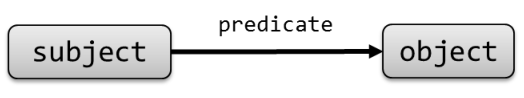
Figure 2.1: Example of RDF triple.
An RDF triple asserted means that some relationship, indicated by the predicate, holds between the resources denoted by the subject and object. This is known as an RDF statement. The predicate is an IRI that denotes a property. An RDF statement can be thought of as a binary relation identified by the property between the subject and object.
There can be three kinds of nodes: IRIs, literals, and blank nodes.
< and
>.
For example, an IRI can be
<http://example.org/john>.
Most RDF formats include some mechanism called prefix declaration which enables to simplify writing long IRIs declaring prefix labels.
A prefix label associates an alias with an IRI and enables the definition of prefixed names.
A prefixed name contains a prefix label and a local part separated by
: and
represents the IRI formed by concatenating the IRI associated with the prefix label and the local part.
For example, if
ex is declared as a prefix label to represent
<http://example.org/>,
then
ex:alice is a prefixed name that represents
<http://example.org/alice> (see Figure 2.2).
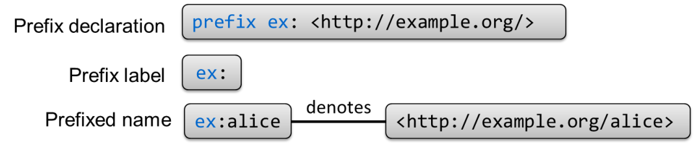
Figure 2.2: Example of prefix declaration.
There are some popular namespace aliases like
rdf,
xsd,
rdfs,
owl, etc.
The http://prefix.cc service can be used to lookup the IRI associated with those popular aliases.
The snippets of code used in this book assume these prefix declarations.
Table 1.1
"lexicalForm"^^datatype in Turtle.
For example:
"23"^^xsd:integer represents an integer with value
23 and
"1980-03-01"^^xsd:date represents the March 1, 1980.
All literals in RDF have an associated datatype.
In the case of string literals with no declared datatype, it is assumed the
xsd:string datatype by default.
So
"hi""hi"^^xsd:string.
A special type of literals are language-tagged strings, which are literals with datatype
rdf:langString that also contain a language tag [75] to identify a specific language.
Language-tagged strings are represented in Turtle as
"string"@tag.
For example:
"hola"@es represents the literal value
"hola"es).
_:id represents a blank node.
An RDF graph is a set of RDF triples. Notice that the edges of RDF graphs can only be IRIs. This is an important feature of RDF that enables to globally identify the predicates asserted by triples. The subjects can only be IRIs or blank nodes, while the objects can be IRIs, blank nodes or literals.
The following code represents an RDF graph in Turtle. The first three lines are prefix declarations and the rest represent a sequence of RDF triples separated by dots.
| prefix ex: <http://example.org/> prefix schema: <http://schema.org/> prefix dbr: <http://dbpedia.org/resource/> prefix xsd: <http://www.w3.org/2001/XMLSchema#> ex:alice schema:knows ex:bob . ex:bob schema:knows ex:carol . ex:bob schema:name "Robert" . ex:bob schema:birthDate "1980-03-10"^^xsd:date . ex:bob schema:birthPlace dbr:Oviedo . ex:carol schema:knows ex:alice . ex:carol schema:knows ex:bob . ex:carol schema:birthPlace dbr:Oviedo . |
The corresponding RDF graph has been depicted in Figure 2.2. Rounded boxes represent IRIs while orange rectangles represent literals.
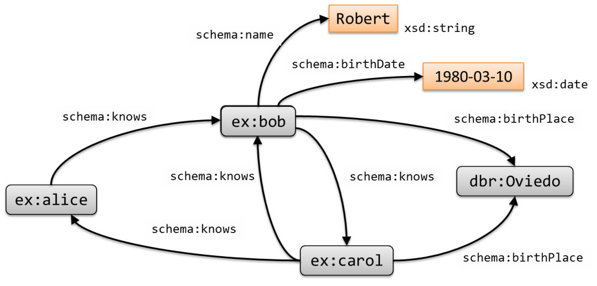
Figure 2.3: Example of an RDF graph.
Blank nodes can be used to make assertions about some elements whose IRIs are not known.
The following RDF Turtle code declares that
ex:alice knows someone
who knows
ex:dave,
and that
ex:carol knows someone who was born in the same place as
dave, whose age is 23. The graph is depicted in figure 2.
| prefix ex: <http://example.org/> prefix schema: <http://schema.org/> prefix dbr: <http://dbpedia.org/resource/> ex:alice schema:knows _:x . _:x schema:knows ex:dave . ex:carol schema:knows _:y . _:y schema:birthPlace _:z ; schema:age "23"^^xsd:integer . ex:dave schema:birthPlace _:z . |
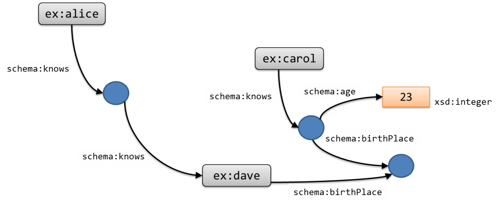
Figure 2.4: Example of an RDF graph with blank nodes.
An important feature of RDF graphs is that two independent RDF graphs can automatically be merged to obtain a larger RDF graph formed by the union on their sets of triples. Given the global nature of IRIs, nodes with the same IRI are automatically unified. Using shared IRIs makes the powerful statement the entities and relationships in one graph carry the same intent as they do in the other graphs using the same identifiers. In a sense, the use of RDF gets rid of the data merging problem and lets us focus on the hard problems of establishing shared entities and vocabularies.
For example, the union of the RDF graphs from Figures 2.2 and 2 is depicted in Figure 2.2. Turtle contains several simplifications to facilitate readability.
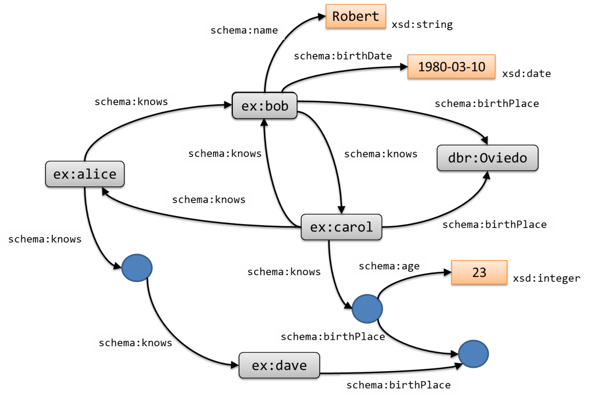
Figure 2.5: Merged RDF graph.
;). So, instead of writing | ex:bob schema:name "Robert" . ex:bob schema:birthDate "1980-03-10"^^xsd:date . ex:bob schema:birthPlace dbr:Oviedo . ex:bob schema:knows ex:carol . |
it is possible to write:
| ex:bob schema:name "Robert" ; schema:birthDate "1980-03-10"^^xsd:date ; schema:birthPlace dbr:Oviedo ; schema:knows ex:carol . |
,).Instead of writing
| ex:carol schema:knows ex:alice . ex:carol schema:knows ex:bob . |
it is possible to write:
| ex:carol schema:knows ex:alice, ex:bob . |
The RDF graph represented in Example 1 can be simplified as:
| prefix schema: <http://schema.org/> prefix ex: <http://example.org/> prefix dbr: <http://dbpedia.org/resource/> prefix xsd: <http://www.w3.org/2001/XMLSchema#> ex:alice schema:knows ex:bob . ex:bob schema:name "Robert" ; schema:birthDate "1980-03-10"^^xsd:date ; schema:birthPlace dbr:Oviedo ; schema:knows ex:carol . ex:carol schema:birthPlace dbr:Oviedo ; schema:knows ex:alice, ex:bob . |
Table 2.1: Shorthand syntax for numbers and Booleans in Turtle
Datatype Shorthand example Lexical example xsd:integer-3"-3"^^xsd:integerxsd:decimal-3.14"-3.14"^^xsd:decimalxsd:double3.14e2"3.14e2"^^xsd:doublexsd:booleantrue"true"^^xsd:boolean
X rdf:type Y asserts that
X has the type
represented by
Y.
In Turtle,
rdf:type can also be represented by the token
a, so the previous triple could also be represented as
X a Y.rdf:rest that end with
rdf:nil and whose values are declared by each value of the
rdf:first property. The following snippet declares the results of a marathon as an RDF Collection:
| :m23 schema:name "New York City Marathon" ; :results _:1 . _:1 rdf:first :dave . _:1 rdf:rest _:2 . _:2 rdf:first :alice . _:2 rdf:rest _:3 . _:3 rdf:first :bob . _:3 rdf:rest rdf:nil . |
Turtle has a special notation for RDF collections enumerating the values enclosed by round brackets. The previous example can also be represented in Turtle as:
| :m23 schema:name "New York City Marathon" ; :results (:dave :alice :bob) . |
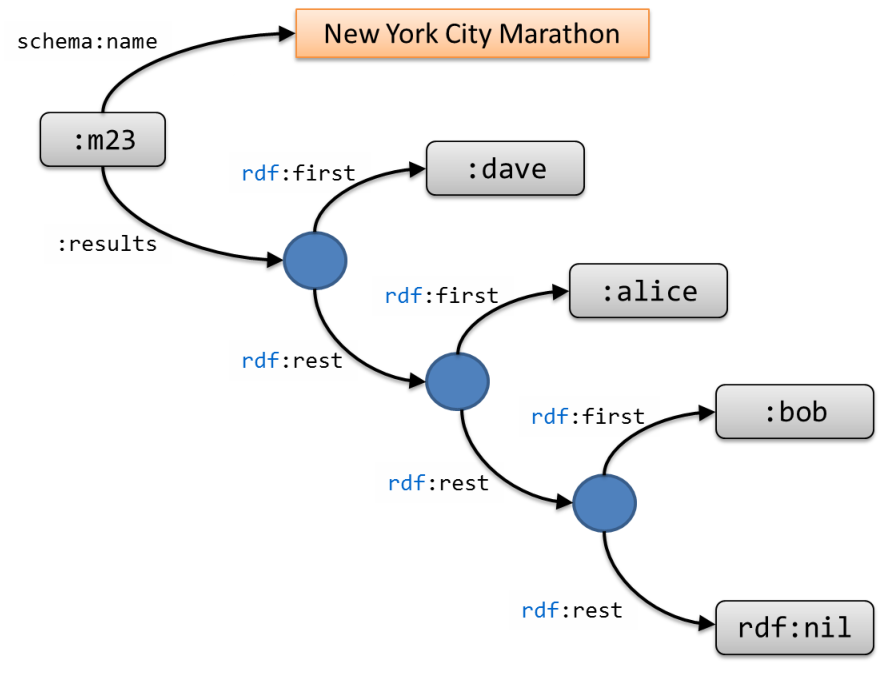
Figure 2.6: RDF collection example.
[ and
]).
In this way, Example 2 can be rewritten as follows.| ex:carol schema:knows [ schema:age 23 ; schema:birthPlace _:x ] . ex:dave schema:birthPlace _:x . ex:alice schema:knows [ schema:knows ex:dave ] . |
The RDF data model is very simple. This simplicity if part of its power as it enables RDF to be used as a data representation language in a lot of scenarios.
One of RDF strengths is to promote the use of IRIs instead of plain strings to facilitate merging data from heterogeneous sources and to avoid ambiguity. This poses the challenge of agreeing on common entities and relationships. Usually, those sets of entities and relationships are grouped in vocabularies which can be general-purpose or domain specific.
There are several well-known vocabularies like
schema.org which is a collaborative, community activity founded by Google, Microsoft, Yahoo, and Yandex that promotes the use of common structured data on the internet.
An interesting project is the LOV (Linked Open Vocabularies)1 project that collects open vocabularies and provides a vocabulary search engine.
Shared identifiers are frequently minted by some authority releasing data using those identifiers followed by community uptake of those identifiers.
Services like http://identifiers.org/ publish these identifiers and, in the frequent case where multiple identifiers exist for the same entity, map between them.
The property
owl:sameIndividualAs can be used to assert that mapping.
Consensus on vocabularies is typically by communities producing human-readable specifications, which is accompanied by some descriptions of the terms in the vocabulary using RDF Schema (see Section 2.4.2). Ontologies take this a step further by providing much more powerful inference and can be used to detect some errors in the conceptual model (for instance, if a vehicle registration conflated a car with its owner).
As we share more models, we implicitly raise our expectations for the accuracy of these models. George Box stated in 1976 that all models are wrong but some are useful [15]. Raising the bar for these models means we expect them to be useful in more situations than they were originally designed for.
Something as apparently simple as schema.org’s
schema:gender offers a simple model for a complex issue.
For at least 90% of the population, the model’s terms
schema:Male and
schema:Female suffice.
Extending that to 99% or 99.9% of the population we see these terms are insufficient for the many variations in both identity and biology.
Schema.org extends the model for these cases by permitting a string value.
FHIR HL7 (see Section 6.2) standards use a concept of administrative gender, which adds two other possibilities.
For simplicity in this chapter and the next, we will use a notion of
gender which is constrained to
male and
female.
In later chapters we will use this to show how RDF validation languages can use the extended value set to provide coverage for more use cases.
RDF was created as a language on which other technologies could be based on. The semantic web stack (also called layer cake) illustrates a hierarchy of technologies where RDF plays a central role. Although that stack is still evolving, there are two concepts that are worth mentioning: SPARQL and inference systems.
SPARQL (SPARQL Protocol and RDF Query Language) is an RDF query language which is able to retrieve and manipulate data stored in RDF. SPARQL 1.0 became a recommendation in 2008 [79] and SPARQL 1.1 was published in 2013 [44].
SPARQL is based on the notion of Basic Graph Patterns which are sets of triple patterns. A triple pattern is an extension of an RDF triple where some of the elements can be variables which are denoted by a question mark.
A Basic Graph Pattern matches a subgraph of the RDF data when RDF terms from that subgraph may be substituted for the variables and the result is an RDF graph equivalent to the subgraph.
The following SPARQL query retrieves the nodes
?x whose birth place is
dbr:Oviedo and the nodes
?y that are known by them.
| prefix : <http://example.org/> prefix schema: <http://schema.org/> prefix dbr: <http://dbpedia.org/resource/> SELECT ?x ?y WHERE { ?x schema:birthPlace dbr:Oviedo . ?x schema:knows ?y } |
Applying the previous SPARQL query to the RDF data defined in Example 2.2, a SPARQL processor would return the results shown in Table 2.2.
Table 2.2: Results of SPARQL query
?x?y:carol:alice:carol:bob:bob:carol
SPARQL queries consist of three parts [73].
The following SPARQL query returns people who know only one value.
| SELECT ?person ?known { ?person schema:knows ?known . { SELECT ?person (count(*) as ?countKnown) { ?person schema:knows ?known . } GROUP BY ?person } FILTER (?countKnown = 1) } |
It contains a nested query (lines 3–5) which groups each element with the number of known entries and a filter (line 8) which removes those elements whose counter is different to one.
A full introduction to SPARQL is out of the scope of this book. For the interested reader, we recommend [33].
SPARQL is a very expressive language which can be used to describe very complex queries. It can also be employed to validate the structure of complex RDF graphs [55]. In Section 23, we describe how SPARQL can be used to validate RDF.
RDF was designed so it could be used as a central piece for knowledge representation in the Web. The goal is that agents can automatically infer new knowledge in the form of new RDF statements from existing RDF graphs. To that end, several technologies were proposed to increase RDF expressiveness. In this section we will briefly review two of the most popular: RDF Schema and OWL.
RDF Schema was proposed as a data-modeling vocabulary for RDF data. The first public working draft of RDF Schema appeared in 1998 [16] and was accepted as a recommendation in 2004 [26].
It is a semantic extension of RDF which provides mechanisms to describe groups of resources and relationships between them. It defines a set of common classes and properties.
The main classes defined in RDFS are:
rdfs:Resource: the class of everything
rdfs:Class: the class of all classes
rdfs:Literal: the class of all literal values
rdfs:Datatype: the class of all datatypes
rdf:Property: the class of all properties
RDFS contains several properties like
rdfs:label,
rdfs:comment,
rdfs:domain,
rdfs:range,
rdf:type,
rdfs:subClassOf and
rdfs:subPropertyOf.
The following snippet contains some description about teachers and people using RDF Schema terms.
It declares that
schema:Person is an
rdfs:Class, as well as
:Teacher.
It also declares that the
:Teacher class is a subclass of
schema:Person which could be read as saying that every instance of
:Teacher is also an instance of
schema:Person.
Finally, it declares that
:teaches is a property that relates instances of
:Teacher with instances of
:Course, i.e.,
any two elements related by the property
:teaches will satisfy that the first is an
:Teacher and the second a
:Course.
| schema:Person a rdfs:Class . :Teacher a rdfs:Class ; rdfs:subClassOf schema:Person . :teaches a rdfs:Property ; rdfs:domain :Teacher ; rdfs:range :Course . |
RDF Schema processors contain several rules that enable them to infer new RDF data.
For example, for any
C rdfs:subClassOf D and
x a C they can infer
x a D,
and for any
p rdfs:domain C and
x p y they can infer
x a C.
If we apply those rules to the following data:
| :alice a :Person . :bob a :Teacher . :carol :teaches :algebra . |
An RDFS processor could infer that
:bob and
:carol have
rdf:type :Person and that
:algebra has
rdf:type :Course.
OWL (Web Ontology Language) defines a vocabulary for expressing ontologies based on description logics. It was published as a W3C recommendation in 2004 [29] and a new version, OWL 2, was accepted in 2009 [70]. OWL has several syntaxes: an RDF-based syntax, functional-style Syntax, manchester syntax, etc., and a formally defined meaning. We will use RDF syntax in the following examples with Turtle notation.
An ontology can be defined as a vocabulary of terms, usually about a specific domain and shared by a community of users. Ontologies specify the definitions of terms by describing their relationships with other terms in the ontology.
The main concepts in OWL are as follows.
owl:Thing that represents the set of all individuals and
owl:Nothing that represents the empty set.In the following example we declare two classes
:Man and
:Woman that have a property
:gender with the value
:Male or
:Female, respectively.
| :Man a owl:Class ; owl:equivalentClass [ owl:intersectionOf ( :Person [ a owl:Restriction ; owl:onProperty :gender ; owl:hasValue :Male ] ) ] . :Woman a owl:Class ; owl:equivalentClass [ owl:intersectionOf ( :Person [ a owl:Restriction ; owl:onProperty :gender ; owl:hasValue :Female ] ) ] . |
Now, we can define
:Person as the union of the
:Man and
:Woman classes,
and to declare that those classes are disjoint.
| :Person owl:equivalentClass [ rdf:type owl:Class ; owl:unionOf ( :Woman :Man ) ] . [ a owl:AllDisjointClasses ; owl:members ( :Woman :Man ) ] . |
Given the previous declarations, if we add the following instance data:
| :alice a :Woman ; :gender :Female . :bob a :Man . |
An OWL reasoner can infer the following triples:
| :alice a :Person . :bob a :Person . :bob :gender :Male . |
OWL can be used to define ontologies in several domains and there are several tools like the Protégé editor [66] which provide facilities for the creation and visualization of large ontologies.
As we mentioned in Section 1.1, one of the principles of linked data is to provide useful information when dereferencing a URI, using standards such as RDF. The goal is to return not only human-readable content like HTML that a machine can only represent in a browser, but also some machine understandable content in RDF which can be automatically processed.
There are two main possibilities: return different representations of the same resource using content negotiation, or return the same representation with RDF embedded.
The first approach can be easier to implement because developers have several mechanisms to transform a resource to different representations on the fly. A popular format nowadays is JSON-LD which is a JSON-based representation of RDF.
The Turtle Example 1 can be represented in JSON-LD as:
| {"@context": { "ex": "http://example.org/", "schema": "http://schema.org/", "dbr": "http://dbpedia.org/resource/", "xsd": "http://www.w3.org/2001/XMLSchema#", "name": { "@id": "schema:name" }, "birthDate": { "@id": "schema:birthDate", "@type": "xsd:date" }, "birthPlace": { "@id": "schema:birthPlace" }, "knows": { "@id": "schema:knows" } }, "@graph": [ { "@id": "ex:alice", "knows": {"@id": "ex:bob" } }, {"@id": "ex:bob", "name": "Robert", "knows": {"@id": "ex:carol"}, "birthDate": "1980-03-10", "birthPlace": {"@id": "dbr:Oviedo" } }, { "@id": "ex:carol", "knows": [{"@id": "ex:alice" }, {"@id": "ex:bob"}], "birthPlace": {"@id": "dbr:Oviedo" } } ] } |
An alternative approach is to embed RDF content in HTML.
RDFa can be used to embed RDF in HTML attributes.
| <div xmlns:schema="http://schema.org/" xmlns:ex="http://example.org/" xmlns:xsd="http://www.w3.org/2001/XMLSchema#" typeof="schema:Person" about="[ex:alice]"> My name is <span property="schema:name">Alice</span>. <p>I was born on <span property="schema:birthDate" content="1974-12-01" datatype="xsd:date">a Sunday, some time ago</span>, and I am a professor at the <span about="[ex:uniovi]" typeof="schema:Organization" property="schema:name" rel="schema:member" resource="[ex:alice]">University of Oviedo</span> </p> </div> |
An HTML browser visualizes the information:
My name is Alice. I was born on a Sunday, some time ago, and I am a professor at the University of Oviedo
while an RDFa processor obtains the following RDF data:
| ex:alice a schema:Person; schema:birthDate "1974-12-01"^^xsd:date; schema:name "Alice" . ex:uniovi a schema:Organization; schema:member ex:alice; schema:name "University of Oviedo" . |
Another alternative is to use microdata:
| <div itemscope itemtype="http://schema.org/Person" itemid="http://example.org/alice"> Home page of <span itemprop="name">Alice</span>. <p>I was born on <time itemprop="birthDate" datetime="1974-12-01">a Sunday, some time ago</time>, and I am a <span itemprop="jobTitle">Professor</span> at the <span itemscope itemprop="affiliation" itemtype="http://schema.org/Organization"> itemid="http://example.org/uniovi" <span itemprop="name">University of Oviedo</span> </span> </p> </div> |
Which represents the same information as the RDFa example.
Official online documents:
There are several books introducing the concepts of RDF and Semantic Web in general like:
And about particular topics:
People have been using computers to record and reason about data for many decades. Typically, this reasoning is less esoteric than artificial intelligence tasks like classification.
A data modeler usually has some structure of the data that she is trying to model. That structure must be explicitly defined and communicated using some technology that can at the same time be understood by other people and also be processed by automatic systems that can check and enforce it. Using natural language for that is not enough as it can have ambiguities and is difficult to process by machines. On the other hand, enforcing that structure using some procedural programming language is difficult to maintain by other people. The right balance is usually to have some declarative language that can be readable by humans but at the same time parsed and checked by machines.
Rigorous data validation is like a contract that offers advantages to several different parties.
While RDF is a relative newcomer to the data scene, most widely-used structured data languages have a way to describe and enforce some form of data consistency. Examining UML, SQL, XML, JSON, and CSV allows us to set expectations for RDF validation.
The Unified Modeling Language (UML) is a general-purpose visual modeling language that can be used to provide a standard way to visualize the design of a system [85]. In 2005, the Object Management Group (OMG) published UML 2, a revision largely based on the same diagram notations, but using a modeling infrastructure specified using Meta-Object Facility (MOF). UML contains 14 types of diagrams, which are classified in three categories: structure, behavior and interaction. The most popular diagram is the UML class diagram, which defines the logical structure of a system in terms of classes and relationships between them. Given the Object Oriented tradition of UML, classes are usually defined in terms of sets of attributes and operations.
UML class diagrams are employed to visually represent data models.
Figure 11 represents an example of a UML class diagram.
In this case, there are two classes,
User and
Course with several attributes and two relationships.
The relation
enrolledIn establishes that a user can be enrolled in a course.
The cardinalities
0..* means that a user may be enrolled in several courses while a cardinality
1..* means that a course must have at least one user enrolled.
The other relationship is
instructor which means that a course must have one instructor (cardinality
1) while a user can be the instructor of 0 or several courses.
There is another relationship (
knows) between users.
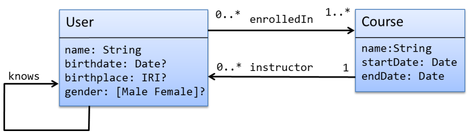
Figure 3.1: Example of UML class diagram.
UML diagrams are typically not refined enough to provide all the relevant aspects of a specification. There is, among other things, a need to describe additional constraints about the objects in the model. OCL (Object Constraint Language)1 has been proposed as a declarative language to define this kind of constraints. It can also be used to define well-formedness rules, pre- and post-conditions, model transformations, etc.
OCL contains a repertoire of primitive types (Integer, Real, Boolean, String) and several constructs to define compound datatypes like tuples, ordered sets, sequences, bag and sets.
The following code represents some constraints in OCL:
that the gender must be
'Male''Female'< to compare dates while in OCL dates are not primitive types.
,
| course User inv: self.gender->forAll(g | Set{'Male','Female'}->includes(g) ) self.knows->forAll(k | k <> self) context Course inv: self.startDate < self.endDate |
Probably the largest deployment of machine-actionable data is in relational databases, and certainly the most popular access to relational data is by Structured Query Language (SQL). One challenge in describing SQL is the difference between the ISO standard and deployed implementations.
SQL is designed to capture tabular data, with some implementations enforcing referential integrity constraints for consistent linking between tables. SQL’s Data Definition Language (DDL) is used to lay out a table structure; SQL is used to populate and query those tables. The SQL implementations that do enforce integrity constraints do so when data is inserted into tables.
The concept of DDL was introduced in the Codasyl database model to write the schema of a database describing the records, fields and sets of the user data model. It was later used to refer to a subset of SQL for creating tables and constraints. DDL statements list the properties in a particular table, their associated primitive datatypes, and list uniqueness and referential constraints.
| CREATE TABLE User ( id INTEGER PRIMARY KEY NOT NULL, name VARCHAR(40) NOT NULL, birthDate DATE, birthPlace VARCHAR(50), gender ENUM('male','female') ); CREATE TABLE Course ( id INTEGER PRIMARY KEY, StartDate DATE not null, EndDate DATE not null, Instructor INTEGER FOREIGN KEY REFERENCES User(id) ) CREATE TABLE EnrolledIn ( studendId INTEGER FOREIGN KEY REFERENCES User(id), courseId INTEGER FOREIGN KEY REFERENCES Course(id), ) |
While implementation support for constraints and datatypes varies, popular datatypes include numerics like various precisions of integer or float, characters, dates and strings.
Two popular constraints in DDL are for primary and foreign keys. In SQL and DDL, attribute values are primitive types, which is to say that a user’s course is not a course record, but instead typically an integer that is unique in some table of courses.
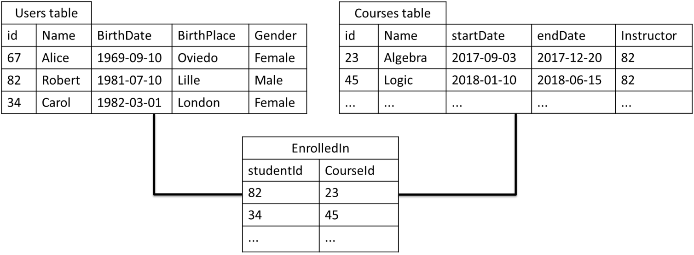
Figure 3.2: Example of two tables.
Because RDF is a graph, one would typically bypass this reference convention and create a graph where a user’s course is a course instead of a reference.
XML was proposed by the W3C as an extensible markup language for the Web around 1996 [98]. XML derives from SGML [42], a meta-language that provides a common syntax for textual markup systems and from which the first versions of HTML were also derived. Given its origins in typesetting, the XML model is adapted to represent textual information that contains mixed text and markup elements.
The XML model is known as the XML Information Set (XML InfoSet) and consists of a tree structure, where each node of the tree is defined to be an information item of a particular type. Each item has a set of type-specific properties associated with it. At the root there is a document item, which has exactly one element as its child. An element has a set of attribute items and a list of child elements or text nodes. Attribute items may contain character items or they may contain typed data such as name tokens, identifiers and references. Element identifiers and references may be used to connect nodes transforming the underlying tree into a graph.
An example of a course representation in XML can be:
| <course name="Algebra"> <student id="alice"> <name>Alice</name> <gender>Female</gender> <comments>Friend of <person ref="bob">Robert</person></comments> </student> <student id="bob"> <name>Robert</name> <gender>Male</gender> <birthDate>1981-09-24</birthDate> </student> </course> |
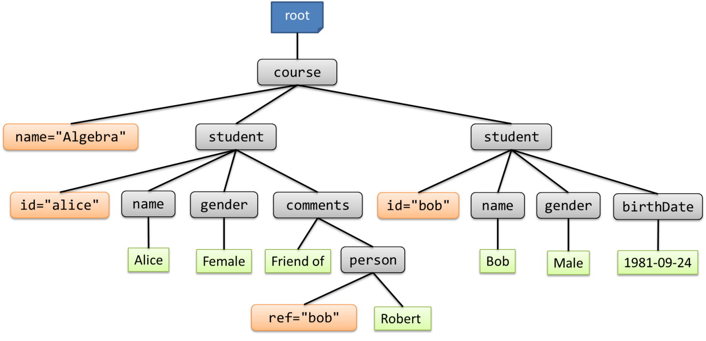
Figure 3.3: Tree structure of an XML document.
XML became very popular in industry and a lot of technologies were developed to query and transform XML. Among them, XPath was a simple language to select parts of XML documents that was embedded in other technologies like XSLT or XQuery.
The next XPath snippet finds the names of all students whose gender is
"Female"
| //student[gender = "Female"]/name |
XML defines the notion of well-formed documents and valid documents. Well-formed documents are XML documents with a correct syntax while valid documents are documents that in addition of being well-formed, conform to some schema definition.
If one decides to define a schema, there are several possibilities.
A DTD to validate the XML file in Example 14 could be:
| <!ELEMENT course (student*)> <!ELEMENT student (name,gender,birthDate?)> <!ELEMENT name (#PCDATA)> <!ELEMENT gender (#PCDATA)> <!ELEMENT birthDate (#PCDATA)> <!ATTLIST student id ID #REQUIRED> <!ATTLIST course name CDATA #IMPLIED> |
DTD defines the structure of XML using a basic form of regular expressions. However, DTDs have a limited support for datatypes. For example, it is not possible to validate that the birth date of a student has the shape of a date.
| <xs:schema xmlns:xs='http://www.w3.org/2001/XMLSchema'> <xs:element name="course"> <xs:complexType> <xs:sequence> <xs:element name="student" minOccurs='1' maxOccurs='100' type="Student"/> </xs:sequence> <xs:attribute name="name" type="xs:string" /> </xs:complexType> </xs:element> <xs:complexType name="Student"> <xs:sequence> <xs:element name="name" type="xs:string" /> <xs:element name="gender" type="Gender" /> <xs:element name="birthDate" type="xs:date" minOccurs='0'/> </xs:sequence> <xs:attribute name="id" type="xs:ID" use='required'/> </xs:complexType> <xs:simpleType name="Gender"> <xs:restriction base="xs:token"> <xs:enumeration value="Male"/> <xs:enumeration value="Female"/> </xs:restriction> </xs:simpleType> </xs:schema> |
An XML Schema validator decorates each structure of the XML document with additional information called the Post-Schema Validation Infoset, or PSVI. This structure contains information about the validation process that can be later employed by other XML tools.
The following code contains a RelaxNG schema to validate Example 14 using the RelaxNG compact syntax.
| element course { element student { element name { xsd:string }, element gender { "Male" | "Female" }, element birthDate { xsd:date }?, attribute id { xsd:ID } }* , attribute name { xsd:string } } |
The same example can be expressed in XML as:
| <element name="course" xmlns="http://relaxng.org/ns/structure/1.0" datatypeLibrary="http://www.w3.org/2001/XMLSchema-datatypes"> <zeroOrMore> <element name="student"> <element name="name"> <data type="string"/> </element> <element name="gender"> <choice> <value>Female</value> <value>Male</value> </choice> </element> <optional> <element name="birthDate"> <data type="date"/> </element> </optional> <attribute name="id"> <data type="ID"/> </attribute> </element> </zeroOrMore> <attribute name="name"> <data type="string"/> </attribute> </element> |
Schematron has more expressive power than other schema languages like DTDs, RelaxNG or XML Schema as it can express complex constraints that are impossible with them. In fact, it is often used to define business rules.
Although Schematron can be used as a stand-alone, it is commonly used in cooperation with other schema languages which define the document structure.
If we have XML documents containing course grades like the following:
| <course name="Algebra"> <student id="S234"> <name>Alice</name> <grade>8</grade> </student> <student id="B476"> <name>Robert</name> <grade>5</grade> </student> <average>9</average> </course> |
We can define the following Schematron file to validate.
S (lines 4–8).<average> is the mean of the grades. | <sch:schema xmlns:sch="http://purl.oclc.org/dsdl/schematron"> <sch:pattern name="Check Ids"> <sch:rule context="student"> <sch:assert test="starts-with(@id,'S')" >IDs must start by S</sch:assert> </sch:rule> </sch:pattern> <sch:pattern name="Check mean"> <sch:rule context="average"> <sch:assert test="sum(//student/grade) div count(//student/grade) = ." >Value of <sch:name/> does not match mean </sch:assert> </sch:rule> </sch:pattern> </sch:schema> |
Schematron is more expressive than other schema languages like DTDs, XML Schema, or RelaxNG as it can define business rules and co-occurrence constraints at the same time that it can also define structural constraints like the other ones. Nevertheless, Schematron rules can become complex to define and debug. A popular approach is to combine both approaches, defining the XML document structure with a traditional schema language and complementing it with schematron rules.
Different approaches have been proposed to indicate how an XML document has to be validated against a schema. Some of those approaches are the following.
| <!DOCTYPE course [ <!ELEMENT course (student*) > <!ELEMENT student (name,grade)> <!ATTLIST student id CDATA #REQUIRED> ]> <course name="Algebra"> ... </course> |
xsi:schemaLocation or
xsi:noNamespaceSchemaLocation attributes. For example, the following XML document directly declares that it follows the schema identified by
http://example.org/ns/Course which is located at
http://example.org/course.xsd:
| <course xmlns:xsi="http://www.w3.org/2001/XMLSchema-instance" xsi:schemaLocation="http://example.org/ns/Course http://example.org/course.xsd"> ... </course> |
<?xml-model ?> has been proposed to associate an XML document with a schema [43]. | <?xml-model href="http://example.org/course.rng" ?> <?xml-model href="http://example.org/course.xsd" ?> <course name="Algebra"> ... </course> |
Note that the XML model processing instruction enables to use multiple schemas for the same document.
As can be seen XML provides several ways to associate XML data with schemas for their validation.
JSON was proposed by Douglas Crockford around 2001 as a subset of Javascript (the original acronym was Javascript Object Notation). It has evolved as an independent data-interchange format with its own ECMA specification [35].
A JSON value, or JSON document, can be defined recursively as follows.
true,
false and null are JSON values."Note that in the case of arrays and objects the values vi can again be objects or arrays, thus allowing the documents an arbitrary level of nesting. In this way, the JSON data model can be represented as a tree [14].
The following example contains a JSON object with two keys:
name and
students.
The value of
name is a string while the value of
students is an array of two objects.
| { "name": "Algebra" , "students": [ { "name": "Alice", "gender": "Female", "age": 18 }, { "name": "Robert", "gender": "Male", "birthDate": "1981-09-24" } ] } |
Figure 19 shows a tree representation of the previous JSON value.
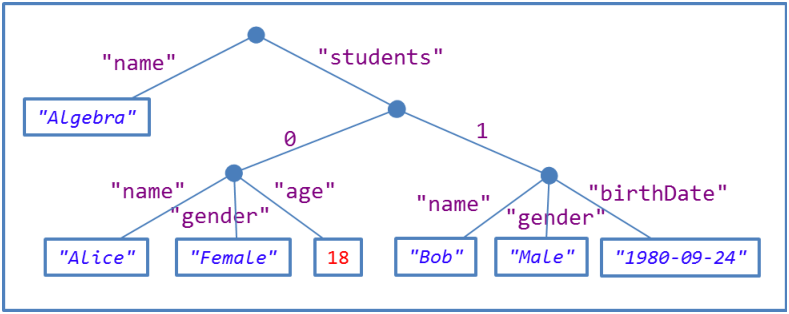
Figure 3.4: Tree structure of JSON.
JSON Schema [101] was proposed as an Schema language for JSON with a role similar to XML Schema for XML. It is written itself using JSON syntax and is programming language agnostic. It contains the following predefined datatypes: null, Boolean, object, array, number and string, and allows to define constraints on each of them.
In JSON Schema, it is possible to have reusable definitions which can later be referenced. Recursion is not allowed between references [74].
The following example contains a JSON schema that can be used to validate Example 19.
It declares
student as an object type with four properties:
name,
gender,
birthDate and
age.
The first two are required and some constraints can be added on their values.
The JSON value has type
object and contains two properties:
name, which must be a string value,
and
students which must be an array, whose items conform to the
student definition.
| { "$schema": "http://json-schema.org/draft-04/schema#", "definitions": { "student": { "type": "object", "properties": { "name": {"type": "string" }, "gender": {"type": "string", "enum":["Male","Female"]}, "birthDate": {"type": "string", "format": "date" }, "age": {"type": "integer","minimum": 1 } }, "required": ["name","gender"] } }, "type": "object", "properties": { "name": { "type": "string" }, "students" : { "type": "array", "items": { "$ref": "#/definitions/student" } } }, "required": ["name","students"] } |
Comma-Separated Values (CSV) and Tab-Separated Values (TSV) files have historically had no format-specific schema language. A common use case for CSV (and TSV) is to import it into a relational database, where it is subject to the same integrity constraints as any other SQL data. However, wide-ranging practices for documenting table structure and semantics have historically made it hard for consumers of CSV to consume published CSV data with confidence. Column headings and meanings may appear as rows in the CSV file, columns in an auxiliary CSV or flat file, or be omitted entirely.
Spreadsheets are another common generator and consumer of CSV data. Some spreadsheets may have hand-tooled integrity constraints but they offer no standard schema language.
While traditionally schema-less, a recent standard, CSV on the Web (CSVW) attempts to describe the majority of deployed CSV data. This includes semantics (e.g., mapping to an ontology), provenance, XML Schema length and numeric value facets (e.g., minimum length, max exclusive value), and format and structural constraints like foreign keys and datatypes.
CSVW describes a wide corpus of existing practice for publishing CSV documents. Because of it’s World Wide Web orientation, it includes internationalization and localization features not found in other schema languages. Where most data languages standardize the lexical representation of datatypes like dateTime or integer, CSVW describes a wide range of region or domain-specific datatypes. For instance, the following can all be representations of the same numeric value: 12345.67, 12,345.67, 12.345,67, 1,23,45.67.
CSVW is also unusual in that it can be used to describe denormalized data. Because of this, it includes separator specifiers to aid in micro-parsing individual data cells into sequences of atomic datatypes.
CSVW is a very new specification and applies to a domain with historically no standard schema language. Tools like CSVLint2 are adopting CSVW as a way to offer interoperable schema declarations to enable data quality tests.
As we can see in Table 3.1, most data technologies have some description and validation technology which enables users to describe the desired schema of the data and to check if some existing data conforms with that schema.
Table 3.1: Data validation approaches
Data format Validation technology Relational databases DDL XML DTD, XML Schema, RelaxNG, Schematron CSV CSV on the Web JSON JSON Schema RDF ShEx/SHACL
Although there have been several previous attempts to define RDF validation technologies (see Section 3.3) this book focuses on ShEx and SHACL.
In this section we describe what are the particular concepts of RDF that have to be taken into account for its validation:
RDF is composed of triples, which have arcs (predicates) between nodes. We can describe:
Figure 3.2 presents an RDF node and its corresponding Shape.
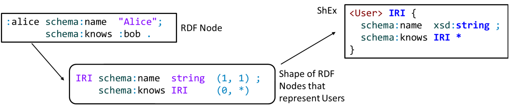
Figure 3.5: RDF node and its shape.
A difference between RDF and XML with regards to their data model is that while in RDF, the arcs are unordered, in XML, the sub-elements form an ordered sequence. RDF validation languages must not assume any order on how the arcs of a node will be treated, while in XML, the order of the elements affect the validation process.
From a theoretical point of view, the arcs related with a node in RDF can be represented as a bag or multiset, i.e., a set which allows duplicate elements.
Notice that RDF validation is different from ontology definition and also different from instance data.
Figure 3.2 represents the difference between instance data, ontology definitions, and RDF validation.
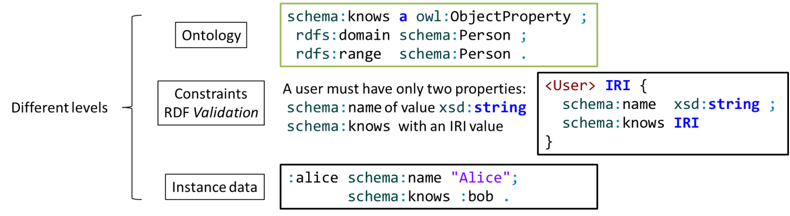
Figure 3.6: RDF validation vs. ontology definition.
Given the open and flexible nature of RDF, nodes in RDF graphs can have zero, one or many
rdf:type arcs.
Some application can use nodes of type
schema:Person with some properties while another application can use nodes with the same type but different properties.
For example,
schema:Person can represent friend, invitee, patient,...in different applications or even in different contexts of the same application.
The same types can have different meanings and different structure depending on the context.
While from an ontology point of view a concept has a single meaning, applications that are using that same concept may select different properties and values and thus, the corresponding representations may differ.
Nodes in RDF graphs are not necessarily annotated with fully discriminating types.
This implies that it is not possible to validate the shape of a node by just looking at its
rdf:type arc.
We should be able to define specific validation constraints in different contexts.
Validation can be performed before or after inference. Validation after inference (or validation on a backward-chaining store that does inference on the fly) checks the correctness of the implications. An inference testing service could use an input schema describing the contents of the input RDF graph and an output schema describing the contents of the expected inferred RDF graph. The service can check that instance data conforms to the input schema before inference and that after applying a reasoner, the resulting RDF graph with inferred triples, conforms to the output schema.
PersonShape requires an
rdf:type of
:Person
TeacherShape requires an
rdf:type of
:Teacher
If we validate the following RDF graph without inference, only
:alice would match
PersonShape.
However, if we validate the RDF graph that results of applying RDF Schema inference, then both
:bob and
:carol would also match
PersonShape.
| :teaches rdfs:domain :Teacher . :Teacher rdfs:subClassOf :Person . :alice a :Person . :bob a :Teacher . :carol :teaches :algebra . |
Validation workflows will likely perform validation both before and after validation. Systems which perform possibly incomplete inference can use this to verify that their light-weight, partial inference is producing the required triples.
RDF was born as a schema-less language, a feature which provided a series of advantages in terms of flexibility and adaptation of RDF data to different scenarios.
The same property, can have different types of values.
For example, a property like
schema:creator can have as value a string literal or a more complex resource.
| :angie schema:creator "Keith Richards" , [ a schema:Person ; schema:givenName "Mick" ; schema:familyName "Jagger" ] . |
Sometimes, the same property is used for different purposes in the same data. For example, a book can have two codes with different structure.
| :book schema:name "Moby Dick"; schema:productID "ISBN-10:1503280780"; schema:productID "ISBN-13:978-1503280786" . |
This is a natural consequence of the re-use of general properties,3 which is especially common in domains where many kinds of data are represented in the same structure.
Repeated properties which require different model for each value appear frequently in real-life scenarios. For example, FHIR (see Section 6.2 for a more detailed description) represents clinical records using a generic observation object. This means that a blood pressure measurement is recorded using the same data structure as a temperature. The challenge is that while a temperature observation has one value:4
| :Obs1 a fhir:Observation ; fhir:Observation.code fhir:LOINC8310-5 ; fhir:Observation.valueQuantity 36.5 ; fhir:Observation.valueUnit "Cel" . |
a blood pressure observation has two:5
| :Obs2 a fhir:Observation ; fhir:Observation.code fhir:LOINC55284-4 ; fhir:Observation.component [ fhir:Observation.component.code fhir:LOINC8480-6 ; fhir:Observation.component.valueQuantity 107 ; fhir:Observation.component.valueUnit "mm[Hg]" ]; fhir:Observation.component [ fhir:Observation.component.code fhir:LOINC8462-4 ; fhir:Observation.component.valueQuantity 60 ; fhir:Observation.component.valueUnit "mm[Hg]" ] . |
We can see that a blood pressure observation must have two instances of the
fhir:Observation.component property,
one with a code for a systolic measurement and the other with a code for a diastolic measurement.
Treating these two constraints on the property
fhir:Observation.component individually would cause the systolic constraint to reject the diastolic measurement and the diastolic constraint to reject the systolic measurement—both constraints must be considered as being satisfied if one of the components satisfies one and the other component satisfies the other.
The RDF dictum of anyone can say anything about anything is in tension with conventional data practices
which reject data with any assertions that are not recognized by the schema.
For SQL schemas, this is enforced by the data storage itself; there’s simply no place to record assertions that does not correspond to some attribute in a table specified by the DDL.
XML Schema offers some flexibility with constructs like
<xs:any processContents="skip">
but these are rare in formats for the exchange of machine-processable data.
Typically the edict is if you pass me something I do not understand fully, I will reject it.
For shapes-based schema languages, a shape is a collection of constraints to be applied to some node in an RDF graph and if it is
closed, every property attached to that node must be included in the shape.
Even if the receiver of the data permits extra triples, it may not be able to store or return them. For instance, a Linked Data container may accept arbitrary data, search for sub-graph which it recognizes, and ignore the rest. A user expecting to put data in such a container and retrieve it will have a rude surprise when he gets back only a subset of the submitted data. Even if the receiver does not validate with closed shapes, the user may wish to pre-emptively validate their data against the receiver’s schema, flagging any triples not recognized by the schema.
Another value of closed shapes is that it can be used to detect spelling mistakes.
If a shape in a schema includes an optional
rdfs:label and a user has accidentally included an
rdf:label, the schema has no way to detect that mistake unless all unknown properties are reported.
Like with repeated properties, the validation of closed shapes must consider property constraints as a whole, rather than examining each individually.
In this section we review some previous approaches that have already been proposed to validate RDF.
Query-based approaches use a query Language to express validation constraints. One of the earliest attempts in this category was Schemarama [63], by Libby Miller and Dan Brickley, which applied Schematron to RDF using the Squish query language. That approach was later adapted to use TreeHuger which reinterpreted XPath syntax to describe paths in the RDF model [95].
Once SPARQL appeared in scene, it was also adopted for RDF validation. SPARQL has a lot of expressiveness and can be used to validate numerical and statistical computations [55].
If we want to validate that an RDF node has a
schema:name property with a
xsd:string value and a
schema:gender property whose value must be one of
schema:Male or
schema:Female in SPARQL,
we can do the following query:
| ASK { { SELECT ?Person { ?Person schema:name ?o . } GROUP BY ?Person HAVING (COUNT(*)=1) } { SELECT ?Person { ?Person schema:name ?o . FILTER ( isLiteral(?o) && datatype(?o) = xsd:string ) } GROUP BY ?Person HAVING (COUNT(*)=1) } { SELECT ?Person (COUNT(*) AS ?c1) { ?Person schema:gender ?o . } GROUP BY ?Person HAVING (COUNT(*)=1) } { SELECT ?Person (COUNT(*) AS ?c2) { ?Person schema:gender ?o . FILTER ((?o = schema:Female || ?o = schema:Male)) } GROUP BY ?Person HAVING (COUNT(*)=1) } FILTER (?c1 = ?c2) } |
Using plain-SPARQL queries for RDF validation has the following benefits.
But it also has the following problems.
SPARQL Inferencing Notation (SPIN)[51] was introduced by TopQuadrant as a mechanism
to attach SPARQL-based constraints and rules to classes.
SPIN also contained templates, user-defined functions and template libraries.
SPIN rules are expressed as SPARQL ASK queries where
true indicates an error or
CONSTRUCT queries that produce violations.
SPIN uses the expressiveness of SPARQL plus the semantics of
the variable
?this standing for the current focus node (the subject being validated).
SPIN has heavily influenced the design of SHACL. The Working Group has decided to offer a SPARQL based semantics and the second part of the working draft also contains a SPIN-like mechanism for defining SPARQL native constraints, templates and user-defined functions. There are some differences like the renaming of some terms and the addition of more core constraints like disjunction, negation or closed shapes. The following document describes how SHACL and SPIN relate (http://spinrdf.org/spin-shacl.html).
There have been other proposals using SPARQL combined with other technologies. Fürber and Hepp [39] proposed a combination between SPARQL and SPIN as a semantic data quality framework, Simister and Brickley [90] propose a combination between SPARQL queries and property paths which is used by Google and Kontokostas et al. [53] proposed RDFUnit a Test-driven framework which employs SPARQL query templates that are instantiated into concrete quality test queries.
Inference based approaches adapt RDF Schema or OWL to express validation semantics. The use of Open World and Non-unique name assumption limits the validation possibilities. In fact, what triggers constraint violations in closed world systems leads to new inferences in standard OWL systems. Motik, Horrocks, and Sattler [64] proposed the notion of extended description logics knowledge bases, in which a certain subset of axioms were designated as constraints.
In [72], Peter F. Pater-Schneider, separates the validation problem in two parts: integrity constraint and closed-world recognition. He shows that description logics can be implemented for both by translation to SPARQL queries.
In 2010, Tao et al. [96] had already proposed the use of OWL expressions with Closed World Assumption and a weak variant of Unique Name Assumption to express integrity constraints.
Their work forms the bases of Stardog ICV [21] (Integrity Constraint Validation), which is part of the Stardog database. It allows to write constraints using OWL syntax but with a different semantics based on a closed world and unique name assumption. The constraints are translated to SPARQL queries. As an example, a User could be specified as follows.
The following code declares several integrity constraints in Stardog ICV.
It declares that nodes that are instances of
schema:Person must have at exactly one value of
schema:name (it is a functional property) which must be a
xsd:string,
an optional value of
schema:gender which must be either
schema:Male or
schema:Female,
and zero or more values of
schema:knows which must be instances of
schema:Person.
| schema:Person a owl:Class ; rdfs:subClassOf [ owl:onProperty schema:name ; owl:minCardinality 1 ] , [ owl:onProperty schema:gender; owl:minCardinality 0 ] [ owl:onProperty schema:knows ; owl:minCardinality 0 ] . schema:name a owl:DatatypeProperty , owl:FunctionalProperty; rdfs:domain schema:Person ; rdfs:range xsd:string . schema:gender a owl:ObjectProperty , owl:FunctionalProperty; rdfs:domain schema:Person ; rdfs:range :Gender . schema:knows a owl:ObjectProperty ; rdfs:domain schema:Person ; rdfs:range schema:Person . schema:Female a :Gender . schema:Male a :Gender . |
Instance nodes are required to have an
rdf:type declaration whose value is
schema:Person.
While SPARQL and OWL Closed World were existing languages which were applied to RDF validation, some novel languages have been designed specifically to that task.
OSLC Resource Shapes [86] have been proposed as a high level and declarative description of the expected contents of an RDF graph expressing constraints on RDF terms.
Example 23 can be represented in OSLC as:
| :user a rs:ResourceShape ; rs:property [ rs:name "name" ; rs:propertyDefinition schema:name ; rs:valueType xsd:string ; rs:occurs rs:Exactly-one ; ] ; rs:property [ rs:name "gender" ; rs:propertyDefinition schema:gender ; rs:allowedValue schema:Male, schema:Female ; rs:occurs rs:Zero-or-one ; ]. |
Dublin Core Application Profiles [23] also define a set of validation constraints using Description Templates
Fischer et al. [38] proposed RDF Data Descriptions as another domain specific language that is
compiled to SPARQL.
The validation is class based in the sense that RDF nodes are validated against a class
C
whenever they contain an
rdf:type C declaration.
This restriction enables the authors to handle the validation of large datasets and to define some optimization techniques which could be applied to shape implementations.
In this section we collect the different validation requirements that we have identified for an RDF validation language.
Some of this requirements have been borrowed from the SHACL Use Cases and Requirements document [91]. Other collections of validation requirements have also been proposed [13].
Given that the RDF data model is a graph model. An RDF validation language must be able to describe graph structures. The following set of requirements could be applied to any validation language related with graphs.
rdfs:subClassOf property can be expressed as
rdfs:subClassOf*.The schema language must be able to check the different types of contents that appear in the RDF data model.
xsd:integer between 10 and 20.
rdf:langString.This set of requirements are common to technologies that model data.
The following requirements refer to the relationship between schema and instance data, and to the mechanism by which the validation process is triggered.
The following set of requirements refer to the usability of the schema language.
In this chapter we learned which are the main motivations for validating RDF. We started describing what do other technologies do for validation with an overview of UML, SQL, XML, JSON, and so on. This section was aimed to present those technologies and to gather some list of validation requirements that are common to all of them.
We also described some of the previous RDF validation approaches and collected a list of validation requirements that a good schema language for RDF validation must fulfil. Notice that some of them contradict each other, so it is necessary to reach some compromise solution.
Non-RDF schema languages
RDF validation approaches
has topping property rather than a
has pizza topping property.Shape Expressions (ShEx) is a schema language for describing RDF graphs structures. ShEx was originally developed in late 2013 to provide a human-readable syntax for OSLC Resource Shapes. It added disjunctions, so it was more expressive than Resource Shapes. Tokens in the language were adopted from Turtle [80] and SPARQL [44] with tokens for grouping, repetition and wildcards from regular expression and RelaxNG Compact Syntax [100]. The language was described in a paper [80] and codified in a June 2014 W3C member submission [92] which included a primer and a semantics specification. This was later deemed “ShEx 1.0”.
The W3C Data Shapes Working group started in September 2014 and quickly coalesced into two groups: the ShEx camp and the SHACL camp. In 2016, the ShEx camp split from the Data Shapes Working Group to form a ShEx Community Group (CG). In April of 2017, the ShEx CG released ShEx 2 with a primer, a semantic specification and a test-suite with implementation reports.
As of publication, the ShEx Community Group was starting work on ShEx 2.1 to add features like value comparison and unique keys. See the ShEx Homepage http://shex.io/ for the state of the art in ShEx. A collection of ShEx schemas has also been started at https://github.com/shexSpec/schemas.
Strictly speaking, a ShEx schema defines a set of graphs. This can be used for many purposes, including communicating data structures associated with some process or interface, generating or validating data, or driving user interface generation and navigation. At the core of all of these use cases is the notion of conformance with schema. Even one is using ShEx to create forms, the goal is to accept and present data which is valid with respect to a schema.
ShEx has several serialization formats:
These are all isomorphic and most implementations can map from one to another.
Tools that derive schemas by inspection or translate them from other schema languages typically generate ShExJ. Interactions with users, e.g., in specifications are almost always in the compact syntax ShExC. As a practical example, in HL7 FHIR, ShExJ schemas are automatically generated from other formats, and presented to the end user using compact syntax. See Section 6.2.3 for more details.
ShExR allows to use RDF tools to manage schemas, e.g.,
doing a SPARQL query to find out whether an organization is using
dc:creator with a string,
a
foaf:Person, or even whether an organization is consistent about it.
Example 26 below contains a very simple ShEx schema.
:User. Nodes with that shape must satisfy the following constraints on their properties.schema:name which must be a
xsd:string.schema:birthDate with type
xsd:date.schema:gender whose value is
schema:Male or
schema:Female or some string.schema:knows whose value must be an IRI and conform to the
:User shape.| PREFIX : <http://example.org/> PREFIX schema: <http://schema.org/> PREFIX xsd: <http://www.w3.org/2001/XMLSchema#> :User { schema:name xsd:string ; schema:birthDate xsd:date? ; schema:gender [ schema:Male schema:Female ] OR xsd:string ; schema:knows IRI @:User* } |
All the nodes in the following RDF graph conform to
:User shape.
| :alice schema:name "Alice" ; # Passes as a :User schema:gender schema:Female ; schema:knows :bob . :bob schema:gender schema:Male ; # Passes as a :User schema:name "Robert"; schema:birthDate "1980-03-10"^^xsd:date . :carol schema:name "Carol" ; # Passes as a :User schema:gender "unspecified" ; foaf:name "Carol" . |
The nodes
:alice,
:bob and
:carol have shape
:User.
:alice conforms because it contains
schema:name and
schema:gender with their corresponding values.
It does not contain the property
schema:birthDate but that property is optional, as indicated by ‘
?‘.
It also has the property
schema:knows with the value
:bob which has
:User shape.:bob conforms because it contains the properties and values of the
:User shape.
Note that the order in which triples are expressed in the example does not matter. These are parsed into an RDF graph and RDF graphs are unordered collections of triples.:carol conforms because it has property
schema:name with a
xsd:string value,
schema:gender with another
xsd:string value and an extra property
foaf:name.Notice that
:carol conforms even if it has other properties apart of those mentioned by the
:User shape definition (in this case
foaf:name).
ShEx shapes are open by default, which means that they constrain neither the existence nor the value of the properties not mentioned in the shape.
This behavior can be modified using the
CLOSED qualifier as we will explain in Section 4.6.8.
Given the following RDF graph:
| :dave schema:name "Dave"; # Fails as a :User schema:gender "XYY"; # schema:birthDate 1980 . # 1980 is not an xsd:date *) :emily schema:name "Emily", "Emilee" ; # Fails as a :User schema:gender schema:Female . # too many schema:names *) :frank foaf:name "Frank" ; # Fails as a :User schema:gender: schema:Male . # missing schema:name *) :grace schema:name "Grace" ; # Fails as a :User schema:gender schema:Male ; # schema:knows _:x . # \_:x is not an IRI *) :harold schema:name "Harold" ; # Fails as a :User schema:gender schema:Male ; schema:knows :grace . # :grace does not conform to :User *) |
If we try to validate the nodes in the following graph against the shape
:User, the validator would fail for all of the nodes:
:dave fails because the value of
schema:birthDate is
1980 (an integer) which is not an
xsd:date.:emily fails because it has two values for property
schema:name.
Unless otherwise specified, the default cardinality is “exactly one” (which can also be written as “
{1}” or “
{1,1}”).:frank fails because it does not have the property
schema:name.:grace fails because the value of
schema:knows is a blank node and there is a node constraint saying that it must be an IRI.:harold fails because the value of
schema:knows is
:grace and
:grace does not conform to the
:User shape.At the time of this writing, we are aware of the following implementations of ShEx.
There are also several online demos and tools that can be used to experiment with ShEx.
The ShEx compact syntax (ShExC) was designed to be read and edited by humans. It follows some conventions which are similar to Turtle or SPARQL.
PREFIX and
BASE declarations follow the same convention as in Turtle.
In the rest of this chapter we will omit prefix declarations for brevity.#a identifies the
rdf:type property.<
> and prefixed names (a shorter way to write out IRIs) are written with prefix followed by a colon “:”._:label notation.'"'''"""a) are not case sensitive.
Which means that
MinInclusive is the same as
MININCLUSIVE.
A ShExC document declares a ShEx schema.
A ShEx schema is a set of labeled shape expressions which are composed of node constraints and shapes.
These constrain the permissible values or graph structure around a node in an RDF graph.
When we are considering a specific node, we call that node the
focus node.
The triples which have the focus node as a subject are called
outgoing arcs; those with the focus node as an object are called
incoming arcs.
(Typical RDF idioms call for constraints on outgoing arcs much more frequently than on incoming arcs.)
Together, the incoming and outgoing arcs are called the
neighborhood of that node.
Shape expression labels can be IRIs or blank nodes but only IRI labels can be referenced from outside the schema.
In the previous Example 26,
:User is an IRI label.
Node constraints declare the shape of a focus node without looking at the arcs.
They can declare the kind of node (IRI, blank node or literal),
the datatype in case of literals,
describe it with XML Schema facets (e.g., min and max numeric values, string lengths, number of digits),
or enumerate a value set.
Figure 4.4.1 signals the node constraints that appear in Example 26 which are:
xsd:string and
xsd:date (datatype constraints),
[schema:Male schema:Female] (a value set),
IRI (a node kind declaration) and
@:User (a value shape).
Node constraints will be described in more detail in Section 4.5.
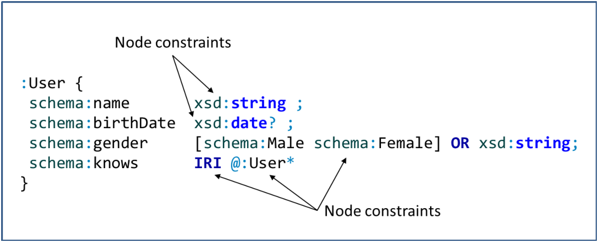
Figure 4.1: Node constraints in a shape.
Triple constraints define the triples that appear in the neighborhood of a focus node. They usually contain a property (or inverse property), a node constraint, and a cardinality declaration which is one by default.
For example,
schema:name xsd:string is a triple constraint.
The
:User shape from Example 26
was formed by four triple constraints.
Triple constraints will be described later in Section 4.6.1.
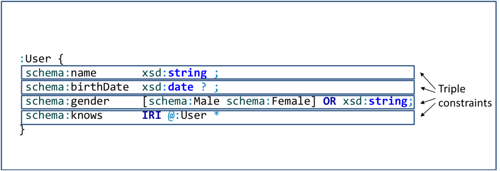
Figure 4.2: Triple constraints in a shape.
Triple constraints can be grouped using the semicolon operator
; to form
triple expressions.1
Shapes are enclosed by curly braces
{
} and contain triple expressions.
Shapes are the basic form of shape expressions, although more complex shape expressions can be formed by combining the logical operators
AND,
OR and
NOT which will be later described in Section 4.6.
Shape expressions are identified by shape expression labels.
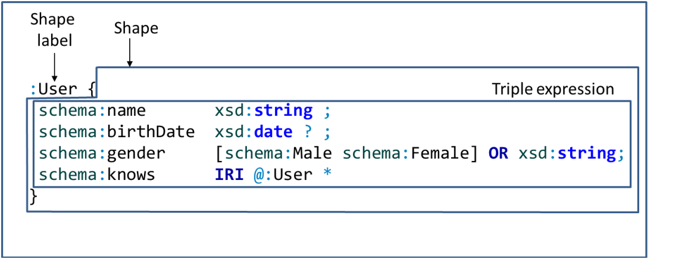
Figure 4.3: Shapes, shape expression labels and triple expressions.
Figure 4.4.1 shows a compound shape expression formed by combining the shape reference
@:User
with a shape that contains a single triple constraint
:teaches @:Course using the
AND operator.
The full ShEx BNF grammar is specified at http://shex.io/shex-semantics/\#shexc.
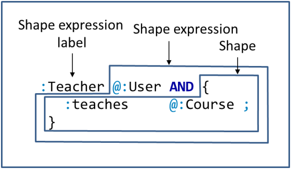
Figure 4.4: Shape expression and shape.
In Example 26, we tested several RDF nodes (
:alice,
:bob, ...
:harold) against the shape
:User.
ShEx validation takes as input a schema, an RDF graph, and a shape map, and returns another shape map.
The input shape map (called fixed shape map) contains a list of
nodeSelector@shapeLabel associations separated by commas,
where
nodeSelector is an RDF node and
shapeLabel is a shape label.
Both use N-Triples notation.
A fixed map would look like:
| <http://data.example/#alice>@<http://schema.example/#User>, <http://data.example/#bob>@<http://schema.example/#User> |
Although shape maps use absolute IRIs for RDF nodes and shape labels, we will use prefixes to abbreviate them in our listings:
| :alice@:User, :bob@User |
Note that during evaluation, the processor may need to check the conformance of other nodes against other shapes.
If we define the following schema:
| :User { schema:name xsd:string ; schema:knows @:User* } |
and the RDF graph:
| :alice schema:name "Alice"; schema:knows :carol . :bob schema:name "Robert" . :carol schema:name "Carol" . |
when we invoke a ShEx processor with the fixed shape map:
| :alice@:User, :bob@:User |
the result shape map is:
| :alice@:User, :bob@:User, :carol@:User |
The reason is that in order to check that
:alice conforms to
:User, the processor must check that
:carol also conforms to
:User and hence, it adds the association
:carol@:User to the result shape map.
Figure 4.5 depicts the validation process.
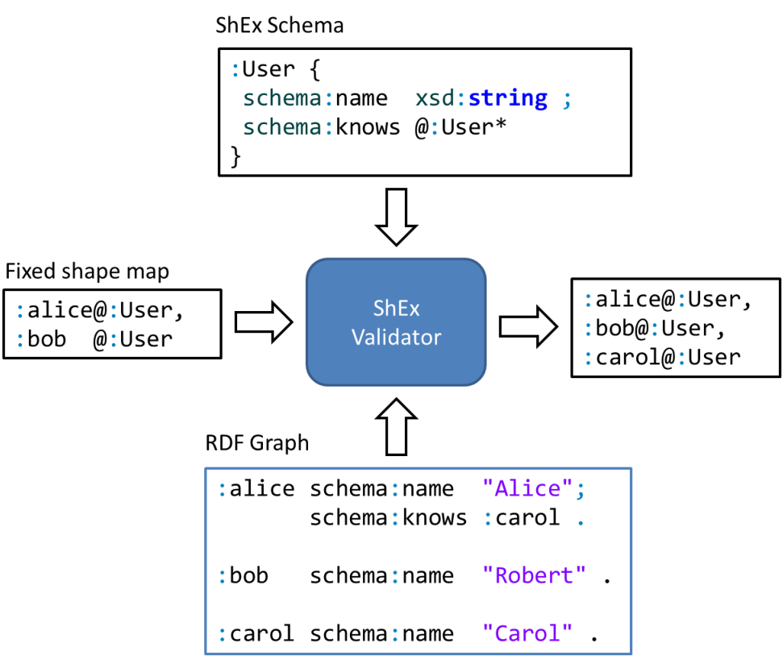
Figure 4.5: Validation process which accepts a fixed shape map and emits a result shape map.
There are many use case-dependent ways to compose a fixed shape map.
ShEx defines a common one called query shape map which uses triple patterns to select nodes.
Triple patterns use curly braces and three values that represent the subject, predicate and object of a triple.
They can contain the value
FOCUS to identify the node we want to select and
_ to indicate that we do not constrain some value.
The following query map selects all subjects of
schema:name, all objects of
schema:knows and nodes that have
rdf:type with value
schema:Person.
| {FOCUS schema:name _}@:User, {_ schema:knows FOCUS}@:User, {FOCUS rdf:type schema:Person}@:User |
Section 4.9 describes fixed shape maps and query shape maps in greater detail.
In the previous example, validating
:alice as a
:User entailed validating
:carol as a
:User.
Unless the validation engine has some sort of state persistence,
it would be more efficient to validate once with a shape map like:
| :alice@:User,:carol@:User |
than to validate
:alice and
:carol separately.
Validating a shape map with multiple node/shape pairs allows the engine to leverage any pairs that it has already tested.
In Section 4.4.1, we described shape expressions as being composed of node constraints and shapes.
These can also be combined with the logical operators
And,
Or and
Not.
And and
Or expressions in turn contain two or more shape expressions.
When we refer to a
shape expression, we mean one of the following.
And of two or more shape expressions (called
ShapeAnd).Or of two or more shape expressions (called
ShapeOr).Not of one shape expression (called
ShapeNot)This recursive structure forms a tree which has node constraints and shapes as leaves. Figure 4.6 represents the ShEx data model.

Figure 4.6: ShEx data model.
Node constraints and shapes are described in the following sections while the logical operators are discussed in Section 4.8 and external shapes in Section 4.7.3.
The shape expression might be selected by label or it might default to a special shape called the
start shape.
A schema can have one more shape expression called the
start expression.
This serves as start here advice from the schema author
and is useful when describing a graph with a single purpose.
For instance, the medical data protocol FHIR
(see Section 6.2) has specific schemas for resources like
Patient.
Consider the following code:
| start = @<Patient> <Patient> { ... } ... |
In the compact syntax, the directive
start = @<Patient> declares that the shape expression
<Patient> will be used by default if a shape is not explicitly provided in the shapes map.
In shape maps, it is possible to declare that a node must be validated against the shape map by using the keyword
START.
For example, the following shape map:
| :alice@START, :bob@<Doctor> |
would validate
:alice against the start shape expression (in the previous example, it would be
<Patient>) and
:bob against
<Doctor>.
Node constraints describe the allowed values of a node. These include specification of RDF node kind, literal datatype, string and numeric facets, and value sets.
Node constraints can appear as a labeled shape expression or as part of triple constraints.
Any place one does not want a node constraint, can be marked with a period (
".":User must have but it does not specify any constraint in their values:
| :User { schema:name . ; schema:alternateName . * ; schema:birthDate . ? } |
Given the following RDF graph:
| :alice schema:name 23 . # Passes as a :User :bob schema:name "Robert" ; # Passes as a :User schema:alternateName "Bob", "Bobby", <Bob> ; schema:birthDate "Unknown" . |
If we provide the shape map
:alice@:User,:bob@:User the ShEx processor would return that they both conform.
Node constraints usually appear as part of value expressions in triple constraints.
The following example declares that nodes with shape
:User must have a property
schema:url whose value must be an
IRI.
| :User { schema:url IRI } |
Node constraints can also appear as top level shapes.
The following code defines two shapes,
:HomePage and
:CanVoteAge,
which are defined as node constraints.
The first one declares that nodes must be
IRIs and the second one that they must be
xsd:integer values greater than 18.
| :HomePage IRI :CanVoteAge xsd:integer MinInclusive 18 |
If we provide a ShEx processor the shape map
| <http://example.org/alice>@:HomePage, 23@:CanVoteAge, 45@:HomePage, 14@:CanVoteAge |
The result would be that the first two nodes are conformant while the last two nodes are non-conformant.
It is also possible to combine top-level node constraints with more complex shapes.
The following declaration of shape
:User says that nodes conforming to shape
:User must be
IRIs and have a property
schema:name with an
xsd:string value.
| :User IRI AND { schema:name xsd:string } |
In this case, the external
AND can be omitted, so the previous shape is equivalent to:
| :User IRI { schema:name xsd:string } |
Table 4.1 gives an overview of the main types of node constraints with some examples and a short description.
Table 4.1: Node constraints
Name Description Examples Anything The value can be anything .Datatype The value must be an element of that datatype xsd:string
xsd:date
cdt:distance
…Node kind The value must have that kind IRI
BNode
Literal
NonLiteralValue set The value must be an element of that set [:Male:Female]Shape reference The value must conform to <User>@:User
Node kinds describe the kind that a value must have.
There are four node kinds in ShEx:
Literal,
IRI,
BNode, and
NonLiteral
which follow the rules defined in RDF 1.1 for such terms.
Table 4.2: Node kinds
Value Description Examples LiteralAny RDF literal "Alice"
"Spain"@en
42
trueIRIAny RDF IRI <http://example.org/Alice>
ex:alice
:bobBNodeAny blank node _:x
[]NonLiteralAny IRI or blank node <http://example.org/alice>
_:x
The following example declares that the value of property
schema:name must be a literal and the value of
schema:follows must be an IRI.
| :User { schema:name Literal ; schema:follows IRI } |
| :alice schema:name "Alice"; # Passes as a :User schema:follows :bob . :bob schema:name :Bob ; # Fails as a :User schema:follows _:x . # :Bob is not a literal and \_:x is not an IRI *) |
Like most schema languages, ShEx includes datatype constraints which declare that a focus node must be a literal with some specific datatype. ShEx has special support for XML Schema datatypes [9] for which it checks that the lexical form also conforms to the expected datatype.
The following example declares the datatypes that must have the values of
schema:name and
schema:birthDate properties.
| :User { schema:name xsd:string ; foaf:age xsd:integer ; schema:birthDate xsd:date ; } |
| :alice schema:name "Alice"; # Passes as a :User foaf:age 36 ; schema:birthDate "1981-07-10"^^xsd:date . :bob schema:name "Robert"^^xsd:string ; # Passes as a :User foaf:age "26"^^xsd:integer ; schema:birthDate "1981-07-10"^^xsd:date . :carol schema:name :Carol ; # Fails as a :User foaf:age "14" ; # :Carol is an IRI *) schema:birthDate "2003-06-10"^^xsd:date . # and "14" a string *) :dave schema:name "Dave" ; # Fails as a :User foaf:age "Unknown"^^xsd:integer; # invalid lexical forms *) schema:birthDate "Unknown"^^xsd:date . |
As we said, for XML Schema datatypes,
ShEx also checks that the lexical form matches the expected datatype.
For example, the
foaf:age of
:dave is
"Unknown"^^xsd:integer and although it declares that
"Unknown""Unknown"schema:birthDate.
Although the most common use case is to use XML Schema datatypes,
RDF data can use other datatypes.
In the following example, a picture contains the properties
schema:width and
schema:height using a hypothetical custom datatype for distances (
cdt:distance).
| :Picture { schema:name xsd:string ; schema:width cdt:distance ; schema:height cdt:distance } |
| :gioconda schema:name "Mona Lisa"; # Passes as a :Picture schema:width "21 in"^^cdt:distance ; schema:height "30 in"^^cdt:distance . :other schema:name "Other picture" ; # Fails as a :Picture schema:width "21 in"^^xsd:string ; # expected cdt:distance *) schema:height 30 . |
The datatype
rdf:langString identifies language-tagged literals (see [25, Section 3.3]), i.e., RDF literals that have a language tag.
| :Country { schema:name rdf:langString ; } |
| :italy schema:name "Italia"@es . #Passes as a :Country :france schema:name "France" . #Fails as a :Country |
XML Schema provides a useful library of string and numeric tests called facets [9]. These facets are listed in Table 4.3 with a sample argument and some passing and failing values.
Table 4.3: Facets on literals
Facet and
argumentPassing values Failing values MinInclusive1"1"^^xsd:decimal,
1,2,98,99,100"1"^^xsd:string,
-1,0MinExclusive12,98,99,100-1,0,1MaxInclusive991,2,98,99100MaxExclusive991,2,9899,100TotalDigits3"1"^^xsd:integer,
9,999,0999,
9.99,99.9,0.1020"1"^^xsd:string,
1000,01000,
1.1020,.1021,0.1021FractionDigits3"1"^^xsd:decimal,
0.1,0.1020,1.1020"1"^^xsd:integer,
0.1021,0.10212Length3"123"^^xsd:string,
"123"^^xsd:integer,
"abc""12"^^xsd:string,
"12"^^xsd:integer,
,"ab""abcd"MinLength3,"abc""abcd","""ab"MaxLength3,"","ab""abc","abcd""abcde"/^ab+/
Regex pattern,"ab","abb""abbcd","","a","acd""cab"
,"AB","ABB""ABBCD"/^ab+/i
Regex pattern
withiflag,"ab","abb""abbcd"
,"AB","ABB""ABBCD","","a""acd"
| :Product { schema:name xsd:string MaxLength 10 ; schema:weight xsd:decimal MinInclusive 1 MaxInclusive 200 ; schema:sku /^[A-Z0-9]{10,20}$/ ; } |
| :product1 schema:name "Product 1"; #Passes as a :Product schema:weight "23.0"^^xsd:decimal; schema:sku "A23456B234CBDF" . :product2 schema:name "Product 2" ; #Fails as a :Product schema:weight "245.5"^^xsd:decimal ;# schema:weight > 200 *) schema:sku "ABC" . # schema:sku fails regex *) |
The pattern constraint (‘
/regex/’) is based on the XPath regular expression function
fn:matches(str,re,flags) which takes as parameters the string to match, the regular expression, and an optional flags parameter to modify the matching behavior.
XPath regular expressions are based on common conventions from other languages like Perl or other Unix tools like grep. The regular expression language is a string composed of the characters to match and some characters which have special meaning called meta-characters.
x matches the
'x'\u0078 matches the unicode codepoint U+78 (which is again
'x'. matches any character.
[vxz] declares a character class, and matches any of
'v''x''z'\d is a pre-defined character class which matches any digit.
It is equivalent ot “
[0-9]”.
\S is a pre-defined character class which matches any space character (which also includes tabs and newlines). It is equivalent ot “
[\u0008\u000d\u000a\u0020]”.
Inside character classes, the symbol “
^” means negation and “
-” can be used to declare character ranges.
For instance, the character class
[^a-zA-Z] matches any non-letter.
Cardinality (repetition) operators can be used to specify how many characters are matched. The possibilities are as follows.
? represents zero or one values.
+ one or more values.
* zero or more values.
{m,n} between
m and
n values.Any string of characters must be matched in the order of its characters with the following alterations.
| declares alternatives, e.g., “
abc|def|ghi” matches any of “
abc”, “
def”, “
ghi”.
^ matches the beginning of a string.
$ matches the end of a string.
\^ab(cd|ef){2,}gh” matches “
abcdcdcdghij”.
All of the meta characters above will be treated as a literal (i.e., they match themselves) if they are prefixed with a
\\ (backslash).
Table 4.4 contains several examples of regular expression matches.
Table 4.4: Examples of regular expressions
Regular Expression Some values that match Some values that don’t match P\d{2,3}P12P234A1P2nP1P2233(pa)*bbpabpapabpapapab…papo(pa)*bbpabpapabpapapab…papo[a-z]{2,3}ababcaabcd23[a-z]{2,3}ababcaabcdx4523
The flags string has the following possibilities.
i: Case-insensitive mode. m: Multi-line mode.
If present, the
^ character matches the start of any line (not only the start of the string)
and the $ matches the end of any line (not only the end of the string).s: If present, the dot matches also newlines, otherwise it matches any character except newlines.
This mode is called single-line mode in Perl.x: Removes white space characters in the regular expression before matching.q: All meta characters are interpreted as literals, i.e., they match themselves in the input string.
q is compatible with the
i flag.
If it’s used with the
m,
s or
x flag, that flag is ignored.
A value set is a node constraint which enumerates the list of possible values that a focus node may have.
In ShExC, value sets are enclosed by square brackets (
[ and
]) where each possible value is separated by a space.
The following example declares a shape
:Product with two properties:
schema:color and
schema:manufacturer,
whose possible values are enumerated.
| :Product { schema:color [ "Red" "Green" "Blue" ] ; schema:manufacturer [ :OurCompany :AnotherCompany ] } |
| :x1 schema:color "Red"; # Passes as a :Product schema:manufacturer :OurCompany . :x2 schema:color "Cyan" ; # Fails as a :Product schema:manufacturer :OurCompany . :x3 schema:color "Green" ; # Fails as a :Product schema:manufacturer :Unknown . |
A common pattern is to declare that a node must have a specific value. This can be done by a unit value set, i.e., a value set with a single value.
| :Spanish { schema:country [ :Spain ] } :User { a [ schema:Person ] } |
| :alice schema:country :Spain . # Passes as a :Spanish :bob schema:country :France . # Fails as a :Spanish :carol a schema:Person ; # Passes as a :Spanish and :User schema:country :Spain . :p1 a schema:Product; # Fails as a :User schema:country :Spain . # Passes as a :Spanish :dave rdf:type schema:Person; # Passes as a :User schema:country :Japan . # Fails as a :Spanish |
Note that the
:User shape employs the
a keyword which stands for
rdf:type.
There is no inference in ShEx, even for
rdf:type, which is treated as any other arc.
See Section 3.2 for a discussion of the difference between shapes and classes.
As seen above, value sets contain one or more values.
The examples so far have included IRI and strings (literals with a datatype of
xsd:string).
These match precisely the same value in the data.
They can also be language tags, which match any literal with the given language tag.
| :FrenchProduct { schema:label [ @fr ] } :SpanishProduct { schema:label [ @es @es-AR @es-ES ] } |
| :car1 schema:label "Voiture"@fr . # Passes as a :FrenchProduct :car2 schema:label "Auto"@es . # Passes as a :SpanishProduct :car3 schema:label "Carro"@es-AR . # Passes as a :SpanishProduct :car4 schema:label "Coche"@es-ES . # Passes as a :SpanishProduct |
We can see in the example above that it would be convenient to accept literals with any language tag starting with
"es"~’.
For example, Argentinian, Chilean, and other region codes for Spain could be accepted with ‘
schema:label [ @es~ ]’.
The following code declares that Spanish products contain
rdfs:label with a value that must be a
language-tagged literal in Spanish or any variant.
| :SpanishProduct { schema:label [ @es~ ] } |
| :car1 schema:label "Auto"@es . # Passes as a :SpanishProduct :car2 schema:label "Carro"@es-AR . # Passes as a :SpanishProduct :car3 schema:label "Coche"@es-ES . # Passes as a :SpanishProduct |
This also works for strings, e.g., ‘
"+34"~’ (French telephone numbers) and
IRIs, e.g., ‘
<http://www.w3.org/ns/>~’ (W3C namespaces).
| :SpanishW3CPeople { schema:telephone [ "+34"~ ] ; schema:url [ <http://www.W3C.es/Personal>~ ] } |
| :alice schema:telephone "+34 123 456 789"; # Passes as a :SpanishW3CPeople schema:url <http://www.W3C.es/Personal/Alice> . :bob schema:telephone "123 456 789" ; # Fails as a :SpanishW3CPeople schema:url <http://other.org/bob> . # Bad telephone and url *) |
IRIs represented as prefixed names can also have a postfix ‘
~’, e.g.,
foaf:~ represents the set of all URIs that start with the namespace bound to the prefix
foaf:.
In the following example, we declare that the status of a product must start by
http://example.codes/good. or
http://example.codes/bad..
| prefix codes: <http://example.codes/> :Product { :status [ codes:good.~ codes:bad.~ ] } |
| prefix codes: <http://example.codes/> prefix other: <http://other.codes/> :x1 :status codes:good.Shipped . # Passes as a :Product :x2 :status other:done . # Fails as a :Product :x3 :status <http://example.codes/bad.Lost> . # Passes as a :Product |
It can also be useful to exclude some values from a range.
Exclusions are marked by the minus
- sign.
For example:
codes:~ - codes:unknown represents all values starting by
codes: except
codes:unknown.
Exclusions can themselves be ranges.
For example:
codes:~ - codes:bad.~ represents all values starting by
codes: except those that start by
codes:bad..
The following code prescribes that the status of products can be anything that starts
with
codes:
except
codes:unknown or codes starting with
codes:bad..
| prefix codes: <http://example.codes/> :Product { :status [ codes:~ - codes:unknown - codes:bad.~ ] } |
| prefix codes: <http://example.codes/> prefix other: <http://other.codes/> :p1 :status codes:good.Shipped . # Passes as a :Product :p2 :status other:done . # Fails as a :Product :p3 :status <http://example.codes/bad.Lost> . # Fails as a :Product :p4 :status <http://example.codes/unknown> . # Fails as a :Product |
Exclusions must be the same kind (IRI, string or language tag) as the stem type.
For instance, ‘
[ codes:good.~ - "bad." - @fr~ ]’ would be malformed as it’s an IRI range excluding a string and a language stem.
There is no requirement that value sets be composed of a consistent kind of value (IRI, string or language tag).
For instance, the status of a product can be the IRIs (
:Accepted or
:Rejected) or a string, e.g., “unknown".
Sometimes we want to accept user data with any value except some specific values. For this, a wildcard character (‘.’) followed by one or more exclusions can be used (so long as those exclusions are all of the same kind). The kind of the exlcusions (IRI, string, or language tag) establishes the type of RDF term that will be matched.
The following code declares that the status of products can be anything except the IRI
codes:bad.
Given that the exclusion is an IRI, the status must be an IRI.
| prefix codes: <http://example.codes/> :Product { :status [ . - codes:bad ] } |
| prefix codes: <http://example.codes/> prefix other: <http://other.codes/> :p1 :status codes:good . # Passes as a :Product :p2 :status other:bad . # Passes as a :Product :p3 :status codes:bad . # Fails as a :Product :p4 :status "good" . # Fails as a :Product # "good" must be a IRI *) |
Value sets are mostly a shorthand syntax for complex Boolean combinations of node constraints. ShEx includes them because they are much more concise and, given their ubiquity in other schema languages, they are fundamental to how people model and understand data.
The following shape:
| :User { schema:gender [ schema:Male schema:Female ] } |
can be defined without value sets using the
OR operator that will be presented in Section 4.6.
| :User { schema:gender [ schema:Male ] } OR { schema:gender [ schema:Female ] } |
In the previous section we explored node constraints and how they declare a set of permissible RDF terms. Most of the examples used node constraints in triple constraints, limiting the permissible values for triples in the input graph.
In the following example, we describe a shape
:User
| :User { schema:name xsd:string } |
and we will try to validate the nodes
:alice and
:bob represented in the following data:
| :alice schema:name "Alice" ; # Passes as a :User schema:knows :bob . :bob schema:name 34 ; # Fails as a :User schema:knows :alice . # wrong schema:name *) |
To solidify our intuition of validating shapes, we need to think of this as a series of steps to validate a focus node against a shape expression.
:alice conforms to the shape expression
:User.
:User is a shape so check if the neighborhood of
:alice matches the triple expression in the shape
:User.
This step means that one needs to find a way to distribute the triples in the neighborhood to satisfy the triple expression.
:alice schema:name "Alice""Alice"xsd:string).
"Alice"xsd:string’ so this test succeeds.
{1,1} (the default one) and as there is only one tripe matching the node conforms to the
shape expression.
When the same steps are performed to check
:bob, the last step will have
34 as the focus node.
This test fails so
:bob fails to conform to
:User.
A shape is a container for a triple expression along with some properties stating how to treat triples not matching the triple expression. We will describe these properties after introducing triple expressions (Section 4.6.8). Since triple expressions are combinations of triple constraints, we start with them.
The basic building block of a triple expression is a triple constraint. It is composed of a property, a node constraint, and a cardinality.
A triple constraint expresses a constraint on the values of triples with the given property and the number of values expressed by the cardinality. Cardinalities will be described in more detail in Section 4.6.3.
| :Product { schema:productId xsd:string {1,2} } |
The meaning is that nodes conforming to
:Product must satisfy:
schema:productId.
schema:productId must satisfy the node constraint
xsd:string.
{1,2}, there can be between 1 and 2 values of
schema:productId.

Figure 4.7: Parts of a triple constraint.
| :p1 schema:productId "P1" . # Passes as a :Product :p2 schema:productId "P2", "C2". # Passes as a :Product :p3 schema:productId "P3", "C3", "X3" . # Fails as a :Product # Cardinality exceeded *) :p4 schema:name "No Id" . # Fails as a :Product # No schema:productId *) :p5 schema:productId 5 . # Fails as a :Product # xsd:string not satisfied *) :p6 schema:productId "P6", 5 . # Fails as a :Product # xsd:string not satisfied *) |
Triple constraints have an implicit meaning of closing the possible values of a property.
In the previous example, the declaration
schema:productId xsd:string requires all values of
schema:productId to satisfy
xsd:string.
That’s why
:p6 failed to conform: although it had one string value, the other value wasn’t.
This behavior can be modified with the directives
EXTRA and
CLOSED that will be shown in Section 4.6.8.
The EachOf operator combines two or more triple expressions.
All the sub-expressions must be satisfied by triples in the neighborhood of the focus node.
EachOf is indicated by a semicolon (
;) in the compact syntax.
:User is defined by an EachOf expression that combines three triple constraints.
A node satisfies the
:User type if all the three triple constraints are satisfied.
| :User { schema:name xsd:string ; foaf:age xsd:integer ; schema:email xsd:string } |
Cardinalities indicate the required number of triples satisfying the given constraint. They are most often used on triple constraints although they can also be applied to more complex expressions. Table 4.5 gives an overview of the different representations of cardinalities in ShExC.
Table 4.5: ShEx cardinalities
Value Description *0 or more +1 or more ?0 or 1 {m}Exactly m repetitions {m,n}Between m and n repetitions {m,}m or more repetitions
If the cardinality is not specified, the default value is
{1} (exactly one).
The following
:User shape declares that nodes must have exactly one value for
schema:name (default cardinality),
and optional value for
schema:worksFor and zero or more values for
schema:follows.
The
:Company shape uses the explicit
{m,n} syntax to assert that a matching node must have between 1 and 100 employees and
an optional
schema:founder value.
| :User { schema:name xsd:string ; schema:worksFor IRI ? ; schema:follows IRI * } :Company { schema:founder IRI ?; schema:employee IRI {1,100} } |
| :alice schema:name "Alice"; #Passes as a :User schema:follows :bob; schema:worksFor :OurCompany. :bob schema:name "Robert" ; #Passes as a :User schema:worksFor :OurCompany. :carol schema:name "Carol" ; #Passes as a :User schema:follows :alice . :dave schema:name "Dave" . #Passes as a :User :emily schema:name "Emily" ; #Fails as a :User schema:worksFor :OurCompany, # more than one schema:worksFor *) :OtherCompany . :OurCompany schema:founder :dave ; schema:employee :alice, :bob. #Passes as a :Company :OtherCompany schema:founder :alice . #Fails as a :Company # 0 employees *) |
A cardinality can also be used on more general expressions indicating that the neighborhood of a node must contain several groups of triples, each of them satisfying the expression.
The following shape declares that nodes must have exactly one value for
schema:name
and that they can contain the combination of
schema:givenName and
schema:familyName with optional cardinality (either they contain the group of both properties or none of them).
| :User { schema:name xsd:string ; ( schema:givenName xsd:string ; schema:familyName xsd:string ) ? } |
| :alice schema:name "Alice" #Passes as a :User . :bob schema:name "Robert" ; #Passes as a :User schema:givenName "Robert" ; schema:familyName "Smith" . :carol schema:name "Carol" ; #Fails as a :User schema:givenName "Carol" . |
The pipe or choice operator
| can be used to declare compose complex triple expressions with the meaning that one of the branches must be satisfied.
The following shape declares that nodes must have either
schema:name or
foaf:name, but not both.
| :User { schema:name xsd:string | foaf:name xsd:string } |
| :alice schema:name "Alice" . #Passes as a :User :bob foaf:name "Bob" ; #Passes as a :User schema:identifier "P234" . :carol schema:name "Carol" ; #Fails as a :User foaf:name "Carol" . # More than one *) :dave schema:identifier "P123" . #Fails as a :User # None provided *) |
A typical pattern consists of combining OneOf (
| operator) with EachOf (
;) to form more complex expressions.
The following shape declares that nodes must have either one
schema:name or a combination of zero or more
schema:givenName and
one
schema:lastName.
| :User { schema:name xsd:string | ( schema:givenName xsd:string + ; schema:familyName xsd:string ) } |
| :alice schema:name "Alice" . #Passes as a :User :bob schema:givenName "Bob" ; #Passes as a :User schema:givenName "Bobby"; schema:familyName "Smith" . :carol schema:name "Carol" ; #Fails as a :User schema:familyName "King" . # Can't have both *) :dave schema:name 23 . #Fails as a :User # schema:name must be xsd:string *) |
A typical pattern is to add some cardinality to an expression formed by the OneOf (
|) operator.
The following shape declares that nodes must have exactly one value for
schema:productId
and that they can contain between 0 or two combinations of
schema:isRelatedTo or
schema:isSimilarTo.
| :Product { schema:productId xsd:string ; ( schema:isRelatedTo @:Product | schema:isSimilarTo @:Product ){0,2} } |
| :p1 schema:productId "P1" ; #Passes as a :Product schema:isRelatedTo :p2, :p3 . :p2 schema:productId "P2" . #Passes as a :Product :p3 schema:productId "P3"; #Passes as a :Product schema:isRelatedTo :p1 ; schema:isSimilarTo :p2 . :p4 schema:productId "P4" ; #Fails as a :Product schema:isRelatedTo :p1, :p2, :p3 . |
It is possible to avoid defining two shapes when one of them is just an auxiliary shape that is not needed elsewhere.
The following schema declares that nodes conforming with
:User must have a property
schema:name with
xsd:string and another property
schema:worksFor whose value must conform with an anonymous shape
_:1 which must have
rdf:type with the value
:Company.
| :User { schema:name xsd:string ; schema:worksFor @_:1 } _:1 { a [ :Company ] } |
It can be rewritten as:
| :User { schema:name xsd:string ; schema:worksFor { a [ :Company] } } |
| :alice schema:name "Alice" ; #Passes as a :User schema:worksFor :OurCompany . :bob schema:name "Robert" ; #Passes as a :User schema:worksFor [ a :Company] . :carol schema:name "Carol" ; #Fails as a :User schema:worksFor [ # The value of schema:worksFor *) schema:name "AnotherCompany" # does not have rdf:type :Company *) ]. :OurCompany a :Company . #Passes as a anonymous shape |
Nested shapes can be used to emulate simple SPARQL property paths.
The
^ operator reverses the order of the triple constraint.
Instead of constraining the focus node’s outgoing arcs, it constrains incoming arcs.
The following code declares that nodes conforming to shape
:Company must have
rdf:type
:Company and must be the objects of
one or more triples with predicate
schema:worksFor and a subject conforming to shape
:User.
| :User { schema:name xsd:string } :Company { a [schema:Company] ; ^schema:worksFor @:User + } |
With the following data, node
:Company1 conforms to
:Company because there are two nodes,
:alice and
:bob that work for it.
However, node
:Company2 does not conform because there are no node pointing to it by the property
schema:worksFor and
node
:Company3 also fails because the node that works for it, does not conform to shape
:User.
| :alice schema:name "Alice"; #Passes as a :User schema:worksFor :Company1 . :bob schema:name "Bob" ; #Passes as a :User schema:worksFor :Company1 . :carol schema:worksFor :Company3 . #Fails as a :User # No schema:name *) :Company1 a schema:Company . #Passes as a :Company :Company2 a schema:Company . #Fails as a :Company # No one works for it *) :Company3 a schema:Company . #Fails as a :Company # Carol works for it *) # but does not conform to User *) |
The EachOf operator is different from a conjunction operator.
This is best illustrated when a shape uses the same property several times; we call this a repeated property.
In Example 60, the
:User shape is an EachOf with three triple constraints, two of which have the same property
:parent.
This shape is conformed by a node that has two arcs for the
:parent property,
each of which contributes to satisfy one of the two triple constraints.
| :User { schema:name xsd:string; schema:parent { schema:gender [schema:Male ] } ; schema:parent { schema:gender [schema:Female ] } ; } |
| :alice schema:name "Alice" ; #Passes as a :User schema:parent :bob, :carol . :bob schema:gender schema:Male . :carol schema:gender schema:Female . :dave schema:name "Dave" ; #Fails as a :User schema:parent :carol, :emily . # both parents are Female :emily schema:gender schema:Female . :frank schema:name "Frank"; #Fails as a :User schema:parent :x . # only one parent :x schema:gender schema:Female, schema:Male . |
Remember that ShEx distributes the triples to triple constraints in a triple expression (see Section 4.6).
This means the same triple cannot contribute for satisfying two different triple constraints,
even if its object satisfies the node constraints for both.
That is why the node
:frank does not conform to the
:User shape even if its parent satisfies both conditions.
When defining RDF-based services using ShEx schemas, there are several possibilities that have to be taken into account. Some services backed by an RDF triple store may simply accept and store any triples not described in the schema; in such a case, the role of the schema is mainly to identify and constrain the triples that the service understands and manipulates, allowing any extra triples for unforeseen applications. This open model is more popular in the semantic web community.
At the other extreme, some services or databases may accept or emit some fixed structure, disallowing any triples that are not mentioned in the schema. In this case, the role of ShEx schemas is to validate and verify the content before it is processed or published. This closed model has been traditionally employed in contexts where data quality and security play a significant part.
ShEx manages these use cases with two granularities:
As we described in Section 4.6.1 triple constraints close properties by default.
Sometimes, it is useful to open a property to permit instances of it which are not included in the schema.
The
EXTRA qualifier can be used to allow the appearance of other properties.
A shape of the form
| <Shape> EXTRA <property> { <property> <NodeConstraint> } |
is equivalent to:
| <Shape> { <property> <NodeConstraint> ; <property> (Not <NodeConstraint>)* } |
which means that it allows zero or more values of
<property> that do not satisfy
<NodeConstraint>.
Note that that there is a hidden negation in any shape that includes an
EXTRA qualifier.
The following example declares that nodes that conform to
:FollowSpaniards must follow one of more nodes whose nationality is
:Spain, but can also follow other nodes.
| :FollowSpaniards EXTRA schema:follows { schema:follows { schema:nationality [:Spain] }+ } |
| :alice schema:follows :david . #Passes as a :FollowSpaniards :bob schema:follows :david, :emily . #Passes as a :FollowSpaniards :carol schema:follows :emily . #Fails as a :FollowSpaniards :david schema:nationality :Spain . :emily schema:nationality :France . |
Notice that in the case of
:bob is passes although it follows
:emily which is not Spaniard.
If we remove the
EXTRA declaration it would fail.
A typical pattern using
EXTRA declarations is to constrain the set of required values of a node but to allow other values.
The following example declares the shapes for companies which must have two values for the
rdf:type predicate:
schema:Organization and
org:Organization.
Shape
:Company1 does not allow any extra
rdf:type arc, while shape
:Company2 allows extra values.
| :Company1 { a [ schema:Organization ] ; a [ org:Organization ] } :Company2 EXTRA a { # Allows extra values of rdf:type a [ schema:Organization ] ; a [ org:Organization ] } |
| :OurCompany a org:Organization, #Passes as a :Company1 and :Company2 schema:Organization . :OurUniversity a org:Organization, #Fails as a :Company1 schema:CollegeOrUniversity, # unexpected rdf:type schema:Organization . #Passes as a :Company2 |
A shape can be declared to have only the triples matching a given set of triple constraints and no others using the
keyword
CLOSED.
| :User1 { schema:name xsd:string; schema:knows IRI* } :User2 CLOSED { schema:name xsd:string; schema:knows IRI* } |
| :alice schema:name "Alice" ; #Passes as a :User1 and :User2 schema:knows :bob . :bob schema:name "Bob" ; #Passes as a :User1 schema:knows :alice ; #Fails as a :User2 schema:age 23 . # unexpected schema:age |
A common pattern is to combine
CLOSED and
EXTRA.
The shape
KnowsW3CPeople
| :KnowsW3CPeople CLOSED EXTRA schema:knows { schema:name xsd:string; schema:affiliation IRI ? ; schema:knows { schema:affiliation [:W3C] }+ } |
| :alice schema:name "Alice" ; #Passes as a :KnowsW3CPeople schema:affiliation :ACompany ; schema:knows :bob . :bob schema:name "Bob" ; #Fails as a :KnowsW3CPeople schema:affiliation :W3C; schema:knows :carol . # :carol's affiliation is not :W3C *) :carol schema:name "Carol" ; #Passes as a :KnowsW3CPeople schema:affiliation :ACompany ; schema:knows :alice, :bob . :dave schema:name "Dave" ; #Fails as a :KnowsW3CPeople schema:knows :alice, :bob ; schema:age 23 . # schema:age not allowed*) |
A node constraint can be a shape reference, which has the form
@label where label is the identifier of another shape expression in the schema.
Shape expression reference would be a more precise name but is long enough to be awkard.
| :User { schema:worksFor @:Company ; } :Company { schema:name xsd:string } |
| :alice a :User; #Passes as a :User schema:worksFor :a . :bob a :User; #Fails as a :User because :x fails as :Company schema:worksFor :x . :a schema:name "CompanyA" . #Passes as a :Company :x schema:name 23 . #Fails as a :Company |
It is possible to define data models with cyclic references, i.e., shapes that recursively refer to themselves either directly or indirectly. ShEx supports these kinds of data models which appear frequently.
The model depicted in Figure 66 can be specified in ShEx as:
| :User { schema:worksFor @:Company ; } :Company { schema:name xsd:string ; schema:employee @:User* } |
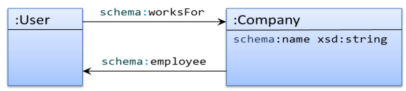
Figure 4.8: Example of cyclic data model.
| :alice schema:worksFor :OurCompany . #Passes as a :User :bob schema:name "Robert"; #Passes as a :User schema:worksFor :OurCompany . :carol schema:worksFor :AnotherCompany . #Passes as a :User :OurCompany schema:name "OurCompany" ; #Passes as a :Company schema:employee :alice, :bob . :AnotherCompany schema:name "AnotherCompany" . #Passes as a :Company |
As an exercise, we present a more complex cyclic data model in Figure 67. Although the model has several cycles, it can be easily represented in ShEx as:
| :University { schema:name xsd:string ; schema:employee @:Teacher +; schema:course @:Course + } :Teacher { a [ schema:Person ]; schema:name xsd:string ; :teaches @:Course* } :Course { schema:name xsd:string ; :university @:University ; :hasStudent @:Student+ } :Student { a [ schema:Person ]; schema:name xsd:string ; schema:mbox IRI ; :hasFriend @:Student* ; :isEnroledIn @:Course* } |
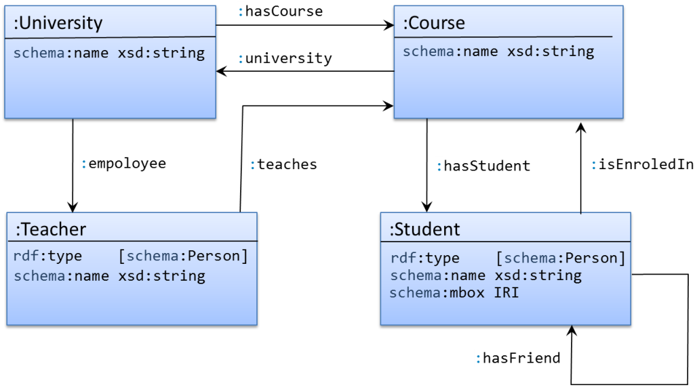
Figure 4.9: Exercise to represent cyclic data model.
Notice the separation between the types and shapes of nodes.
Both
:Teacher and
:Student must have
rdf:type with value
schema:Person, but their properties are different.
As can be seen, ShEx can model any kind cyclic or recursive model in a natural way.
The only restriction is when combining recursion with negation, as we will explain in Section 4.8.3 where the negation operator
NOT is introduced.
External shapes are an extension mechanism to externally define shapes. This is useful when we want to describe functional shapes or very large value sets. As a practical example, in medical schemas, value sets can be dynamically derived and include hundreds of thousands of terms. In the FHIR use case (see Section 6.2), these are resolved using an emerging REST API for ShEx.
The following code declares an external shape for products where the value of
schema:category is defined as an external shape.
In this case, an annotation declares the property
:service that points to the URL where the shape can be retrieved.
| :Product { schema:productId xsd:string ; schema:category EXTERNAL // :service <http://categories.org/> } |
Although at the time of this writing,
the ShEx specification does not define a mechanism like the
:service above, it is expected that future mechanisms
like that will be developed.
Much as shape references (Section 4.7.1) are allowed wherever a shape expression may appear, any triple expression can be labeled so it can later be referenced.
The target triple expression must be labeled with $label and references are made with &label.
For instance, if we want to share a name expression between
:User and
:Employee shapes, we could include the expression in one and reference it from the other.
| :User { $:name ( schema:name . | schema:givenName . ; schema:familyName . ) ; schema:email IRI } :Employee { &:name ; :employeeId . } |
| :alice schema:name "Alice" ; #Passes as a :User schema:email <mailto:alice@example.org> . :bob schema:givenName "Robert" ; #Passes as a :Employee schema:familyName "Smith" ; :employeeId 1234567 . |
The “
\&:name" directive can be considered to insert the value of
:name into its place.
Logically,
:Employee is equivalent to this:
| :Employee { ( schema:name . | schema:givenName . ; schema:familyName .) ; :employeeId . } |
ShEx allows to provide annotations, which are lists of pairs
(predicate,object) where predicate is an IRI and object is any RDF node.
Annotations provide additional information about the elements to that they are applied, which can be
triple constraints, EachOf, OneOf, or shapes.
The compact syntax for annotations uses two slashes
// followed by a predicate and an object.
The following code declares a shape
:User which must have a
schema:name with a
xsd:string value, and a
schema:birthDate with a
xsd:date. Each triple constraint has its corresponding
rdfs:label and
rdfs:comment annotations.
| :Person { schema:name xsd:string // rdfs:label "Name" // rdfs:comment "Name of person" ; schema:birthDate xsd:date // rdfs:label "birthDate" // rdfs:comment "Birth of date" ; } |
In this case, each triple constraint has its specific annotations which are internally represented as triples.
At the time of this writing ShEx does not have any built-in annotation vocabulary. It is expected that some specific annotations could be used for future uses like user interface generation or any other use case.
The logical operators
AND,
OR, and
NOT can be used to form complex shape expressions.
Their meaning follows the conventional logical meaning of conjunction, disjunction, and negation.
The precedence of the operators is the usual one.
Table 4.6: Logical operators on shape expressions
Operation Description ANDS1ANDS2is satisfied if and only if both are satisfiedORS1ORS2is satisfied if and only ifS1orS2(or both) are satisfiedNOTNOTSis satisfied if and only ifSis not satisfied
The
AND operator forms a new shape expression from two shape expressions
with the meaning that a node conforms to
S1 AND S2 if it conforms to both
S1 and
S2.
The following example expresses that
:User nodes must satisfy two shape expressions at the same time.
Notice that the appearance of the repeated property
schema:owns means that both expressions must be satisfied, i.e., that the value of
schema:owns must be an
IRI and must have shape
:Product, which must have a property
schema:productId whose value is a
xsd:string between 5 and 10 characters.
| :User { schema:name xsd:string ; schema:owns IRI } AND { schema:owns @:Product } :Product { schema:productId xsd:string AND MINLENGTH 5 AND MAXLENGTH 10 } |
| :alice schema:name "Alice" ; #Passes as a :User schema:owns :product1 . :bob schema:name "Robert" ; #Fails as a :User schema:owns :product2, :product3 . :carol schema:name "Carol" ; #Fails as a :User schema:owns _:x . :product1 schema:productId "Product1" . #Passes as a :Product :product2 schema:productId "Product2" . #Passes as a :Product :product3 schema:productId "Product3" . #Passes as a :Product :product4 schema:productId "P4" . #Fails as a :Product _:x schema:productId "ProductX" . #Passes as a :Product |
If the left-hand side of the conjunction is a node constraint, the
AND keyword can be omitted.
In the following schema,
:User1 and
:User2, and
:Product1 and
:Product2 are equivalent:
| :User1 IRI AND { schema:name xsd:string } :User2 IRI { schema:name xsd:string } :Product1 { schema:productId xsd:string AND MINLENGTH 5 AND MAXLENGTH 10 } :Product2 { schema:productId xsd:string MINLENGTH 5 MAXLENGTH 10 } |
A common situation is to declare a set of constraints that we want to repeat.
In the following example,
we reuse
:CompanyConstraints in two places (for
schema:worksFor and for
schema:affiliation).
| :CompanyConstraints IRI /^http:\/\/example.org\/id[0-9]+/ @:CompanyShape :User { schema:name xsd:string; schema:worksFor @:CompanyConstraints; schema:affiliation @:CompanyConstraints } :CompanyShape { schema:founder xsd:string; } |
| :alice schema:name "Alice" ; #Passes as a :User schema:worksFor :id1 ; schema:affiliation :id2 . :id1 schema:founder "Robert" . :id2 schema:founder "Carol" . |
Another example of shape reuse is to extend a shape with more constraints emulating a kind of inheritance as in Object-Oriented languages.
The following example declares a top-level shape
:Person whose nodes must have
rdf:type with value
schema:Person and
schema:name.
The shape
:User extends
:Person adding a new constraint on the existing property
schema:name and declaring the need of another property
schema:email.
Finally, the shape
:Student extends
:User adding a new property
:course.
| :Person { a [ schema:Person ] ; schema:name xsd:string ; } :User @:Person AND { schema:name MaxLength 20 ; schema:email IRI } :Student @:User AND { :course IRI *; } |
| :alice a schema:Person ; # Passes as a :Person schema:name "Alice" . :bob schema:name "Robert"; # Fails as a :User schema:email <bob@example.org> . # lacks rdf:type :Person *) :carol a schema:Person; # Passes as a :Person and :User schema:name "Carol" ; schema:email <carol@example.org> . :dave a schema:Person; # Passes as a :Person, :User and Student schema:name "Carol" ; schema:email <carol@example.org>; :course :algebra . |
Notice that this kind of reuse requires the shapes extended to be compatible with the new ones. Otherwise, there will be no nodes satisfying them.
For example, we may want to declare a
:Teacher shape extending
:User but adding the constraint that teachers have no email.
| :Teacher @:User AND { schema:email . {0,0} ; } |
However, there will be no nodes satisfying it, because shape
:User prescribes that they must have exactly one
schema:email, while the extended shape
:Teacher prescribes that they must have no
schema:email.
In order to obtain the desired model, it is necessary that the shapes to be extended are general enough to be compatible with the new shapes.
In this case, for example, it would be better to declare that the cardinality of
schema:email in
:User was optional.
The
Or operator combines two shape expressions with an inclusive disjunction,
i.e., either one side or the other, or both must be satisfied.
The following example declares that nodes of shape
:User must have either a
schema:name with
xsd:string value or
a combination of
schema:givenName and
schema:familyName with
xsd:string values, or both.
| :User { schema:name xsd:string } OR { schema:givenName xsd:string ; schema:familyName xsd:string } |
| :alice schema:name "Alice" . #Passes as a :User :bob schema:givenName "Robert"; #Passes as a :User schema:familyName "Smith" . :carol schema:name "Carol King" ; #Passes as a :User schema:givenName "Carol"; schema:familyName "King" . |
Or and
|There is a difference between the
Or and the choice (
|) operator.
The former defines an inclusive-or, while the latter specifies an exclusive-or in this case (only one of the shape expressions must be satisfied, but not both).
| :User1 { schema:name xsd:string } OR { schema:givenName xsd:string ; schema:familyName xsd:string } :User2 { schema:name xsd:string | schema:givenName xsd:string ; schema:familyName xsd:string } |
| :alice schema:name "Alice" . #Passes as a :User1 and :User2 :bob schema:givenName "Robert"; #Passes as a :User1 and :User2 schema:familyName "Smith" . :carol schema:name "Carol King" ; #Passes as a :User1 schema:givenName "Carol"; #Fails as a :User2 schema:familyName "King" . :dave schema:name "Dave" ; #Passes as a :User1 schema:givenName "Dave" . #Fails as a :User2 |
A common use case is to declare that the value of some property is the disjunction of several datatypes or value sets.
The following example declares that products must have a
rdfs:label with a string value or a language tagged literal (remember that those literal have type
rdf:langString), and a
schema:releaseDate whose values must be either
xsd:date,
xsd:gYear or one of the values
"unknown-past""unknown-future"
| :Product { rdfs:label xsd:string OR rdf:langString; schema:releaseDate xsd:date OR xsd:gYear OR [ "unknown-past" "unknown-future" ] } |
| :p1 a :Product ; #Passes as a :Product rdfs:label "Laptop"; schema:releaseDate "1990"^^xsd:gYear . :p2 a :Product ; #Passes as a :Product rdfs:label "Car"@en ; schema:releaseDate "unknown-future" . :p3 a :Product ; #Fails as a :Product rdfs:label :House ; schema:releaseDate "2020"^^xsd:integer . |
SPARQL property paths are a very expressive feature that can define complex expressions. ShEx does not support property paths in order to have a more controlled way to define shapes. However, using nested shapes (see Example 58), recursion and logical operators, it is possible to emulate their behavior.
In SHACL, instances are declared by the expression
rdfs:subClassOf*/rdf:type, which defines the closure of the
rdfs:subClassof property followed by
rdf:type
(see Section 5.7.2).
The following example declares that nodes conforming to shape
:Person must be SHACL instances of
schema:Person.
| :Person { a @:PersonShape } :PersonShape [ schema:Person ] OR { rdfs:subClassOf @:PersonShape } |
| :alice a schema:Person . #Passes as a :Person :bob a :Teacher . #Passes as a :Person :carol a :Assistant . #Passes as a :Person :Teacher rdfs:subClassOf schema:Person . :Assistant rdfs:subClassOf :Teacher . |
NOT s creates a new shape expression from a shape
s.
Nodes conform to
NOT s when they do not conform to
s.
A common use case for
Not is to check other shapes.
Defining a shape
:NotS as
Not :S,
all nodes in an RDF graph can be valid, some of them will conform to
:S while the others will conform to
:NotS.
In this way, a continuous integration system can define the shape map that all nodes must satisfy (either positive or negatively)
and check whether they satisfy it or not.
The following code declares a shape
:User and its complementary
:NotUser.
| :User { schema:name xsd:string ; schema:birthDate xsd:date? ; } :NoUser Not @:User |
Both nodes
:alice and
:bob conform to one of the shapes,
:alice to
:User and
:bob to
:NoUser.
| :alice schema:name "Alice" ; #Passes as a :User schema:birthDate "1980-03-10"^^xsd:date . :bob schema:name 23 ; #Passes as a :NoUser schema:birthDate "Unknown" . |
The operator
Not checks that a node fails to conform to a whole shape expression.
Sometimes, the intended meaning is not to negate a whole shape expression but to declare that some properties cannot appear.
This behavior is better described by declaring the maximum cardinality to 0.
Shape
:NoName1 prohibits the appearance of property
schema:name establishing its maximum cardinality to 0.
Shape
:NoName2 looks like it does the same thing using the negation.
However, notice that
:NoName2 will be satisfied by any node that does not conform to
schema:name xsd:string
| :NoName1 { schema:name xsd:string {0} } :NoName2 Not { schema:name xsd:string } |
The behavior differs for node
:bob which conforms to
:NoName2. The reason is that it fails to have a string value for
schema:name so it fails to conform to the shape
{schema:name xsd:string} and thus, conforms to
:NoName2.
| :alice schema:name "Alice". #Fails as a :NoName1 and :NoName2 :bob schema:name 23 . #Fails as a :NoName1 Passes as a :NoName2 :carol foaf:age 34 . #Passes as a :NoName1}*) \Passes{:NoName2 |
A common pattern is the IF-THEN construct: if some condition holds, then a given shape expression must be satisfied.
This pattern can be modeled using the logical operators
OR and
NOT.
Remember that
IF x THEN y is equivalent to
(NOT x) OR y.
The following example specifies that all products must have a
schema:productID and
if a product has type
schema:Vehicle,
then it must have the properties
schema:vehicleEngine and
schema:fuelType.
| :Product { schema:productID . } AND NOT { a [ schema:Vehicle ] } OR { schema:vehicleEngine . ; schema:fuelType . } |
| :kitt schema:productID "C21"; #Passes as a :Product a schema:Vehicle; schema:vehicleEngine :x42 ; schema:fuelType :electric . :bad schema:productID "C22"; #Fails as a :Product a schema:Vehicle; schema:fuelType :electric . :c23 schema:productID "C23" ; #Passes as a :Product a schema:Computer . |
The
IF-THEN-ELSE pattern construct can be defined in a similar way.
In this case:
IF X THEN Y ELSE Z≡((NOT X) OR Y) AND (X OR Z)
The following shape declares that if a product has type
schema:Vehicle,
then it must have the properties
schema:vehicleEngine and
schema:fuelType, otherwise,
it must have the property
schema:category with a
xsd:string value.
| :Product ( NOT { a [ schema:Vehicle ] } OR { schema:vehicleEngine . ; schema:fuelType . } ) AND ({ a [schema:Vehicle] } OR { schema:category xsd:string } ) |
With the following data, nodes
:kitt and
:c23 conform to
:Product each one passing one of the branches, while
:bad1 and
:bad2 do not conform.
| :kitt a schema:Vehicle; #Passes as a :Product schema:vehicleEngine :x42 ; schema:fuelType :electric . :c23 a schema:Computer ; #Passes as a :Product schema:category "Laptop" . :bad1 a schema:Vehicle; #Fails as a :Product schema:fuelType :electric . :bad2 a schema:Computer . #Fails as a :Product |
One problem of combining recursion with negation freely is the possibility of defining paradoxical shapes.
The following shape declares a
:Barber as someone who shaves a person but does not shave a barber.
| :Barber { # Violates the negation requirement :shaves @:Person } AND NOT { :shaves @:Barber } :Person { schema:name xsd:string } |
Given the following data:
| :albert :shaves :dave . #Passes as a :Barber :bob schema:name "Robert" ; #Passes as a :Person :shaves :bob . # Passes :Barber or not? *) :dave schema:name "Dave" . #Passes as a :Person |
It is easy to check that
:bob conforms to
:Person (he has
schema:name with a
xsd:string value), so he shaves a person, but:
Does
:bob conform to
:Barber?
If we assume he does, then it should not shave another barber, but as he shaves himself, and we assumed he conformed to
:Barber then he fails the constraint of not shaving barbers which means that he should not conform.
On the other hand, if we assumed he does not conform to
:Barber then he satisfies both constraints, and he should conform to
:Barber.
This kind of problems that arise when combining negation and recursion have been studied by the logic programming and databases community. Several approaches have been studied such as negation-as-failure, stratified negation and well-founded semantics [1].
ShEx imposes a constraint to avoid ill formed data models: whenever a shape refers to itself either directly or indirectly, the chain of references cannot traverse an occurrence of the negation operation
NOT.
The previous shape
:Barber violates the negation requirement as is has one self reference pointing to itself that includes a negation.
More formally, we say that there is a dependency from
:ShapeA to
:ShapeB if the definition of
:ShapeA contains a reference
@:ShapeB.
We say that a dependency from
:ShapeA to
:ShapeB is a negative dependency if at least one of the following holds:
@:ShapeB in the definition of
:ShapeA appears under an occurrence of the negation operator
NOT; and :prop @:ShapeB in the definition of
:ShapeA and the property
:prop is declared as
EXTRA in the corresponding triple expression.In the latter case, the negation operator
NOT does not appear explicitly,
but we still need to verify that a
:ShapeB is not satisfied in some neighbor nodes.
This was called hidden negation in Section 4.6.8.
The ShEx 2 specification is focused on the semantics of the validation language and separates the invocation mechanisms to a different specification called Shape Maps [77]. They were already introduced in Section 4.4.2 and are node/shape associations that are used as input to the validation process and are also the result of it.
In ShEx, the construction of shape maps is orthogonal to their use in validation. Decoupling these processes enables ShEx to address a wide range of use cases. Just as XML Schema could not have predicted its use in WSDL (a protocol that was developed years later), it is impossible to predict the many and varied ways in which shape maps may be constructed in the future.
The current ShapeMap specification defines three kinds of shape map.
Each of these consists of a comma-separated list of node/shape associations with at least two components.
nodeSelector - identify a set of RDF nodes.
shapeLabel - select a shape expression from the schema.
The simplest kind of shape map is a fixed shape map.
ShEx validation takes as input a set of nodeSelector/shapeLabel pairs called a fixed shape map.
The
shapeLabel is either the label for a shape expression in the schema or the case-insensitive keyword
START to identify the start shape
(see Section 4.4.4).
For the fixed shape map, the
nodeSelector is one of:
Note that because the shapeLabel can identify a shape expression with only node constraints, one can use ShEx to valdiate RDF terms that do not appear in the graph. This can be useful for testing membership in a value set or verifying the form of a URL.
Fixed shape maps have a compact syntax which consists of separating each shape association by comma and node selectors from shape labels by
@:
| :alice@:User, :alice@:Employee, :bob@:User |
The query shape map extends the fixed shape map to enable simple pattern matching to select focus nodes from the data graph.
This is done by permitting the node selectors to be either an RDF node as in a fixed map or a triple pattern.
A triple pattern can have a focus keyword to represent the nodes that will be validated and a node or wildcard (represented by the underscore character
_).
The shape map:
| { FOCUS schema:worksFor _ }@:User, { FOCUS rdf:type schema:Person}@:User, { _ schema:worksFor FOCUS }@:Company |
associates all subjects of property
schema:worksFor and all nodes of type
schema:Person with
:User,
and all objects of property
schema:worksFor with shape
:Company.
Any node in the data graph which is both of type
schema:Person and the subject of a
schema:worksFor triple would be selected by both triple patterns and associated with
:User in the fixed map.
Such duplicates are eliminated in accordance with the rule that a shape map can have no duplicate pairs of node selector and shape label.
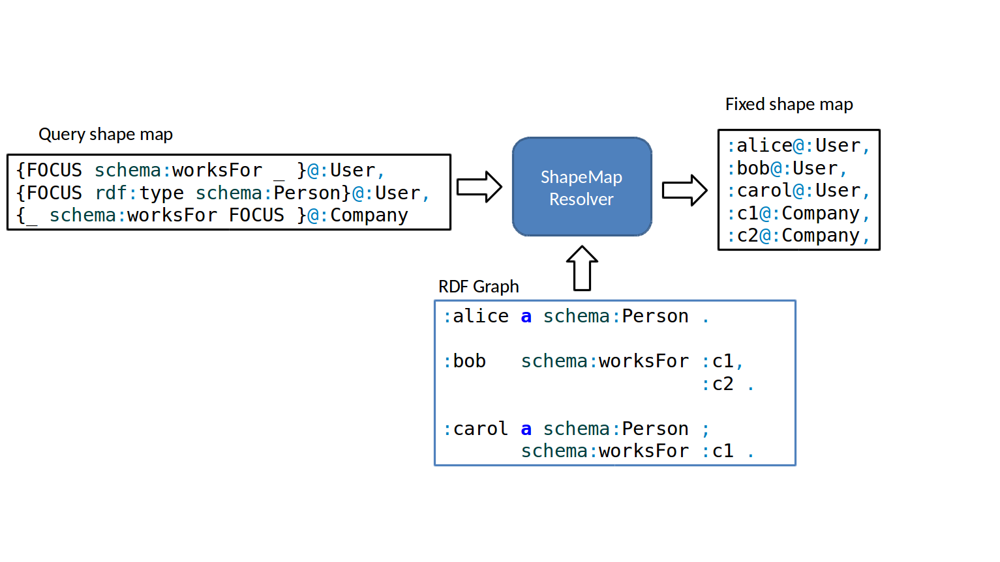
Figure 4.10: Shape map resolution which accepts a query shape map and emits a fixed shape map.
While the node selector may be a triple pattern, it may also be an RDF node as we would see in a fixed shape map. Common idioms of query map can do the following.
sh:targetNode
(see Section 5.7). sh:targetSubjectsOf and
sh:targetObjectsOf. rdf:type.
In fact, the SHACL directive
sh:targetClass offers a similar selection mechanism for the
rdf:type predicate (the difference is that SHACL uses the notion of SHACL instance), see 5.7.2).
As with the above selectors, this one is very use-case
specific—one may not want to say that everything with an
rdf:type property should be validated against a
:Person,
but it may be reasonable to select everything with type
:Employee.While it is not currently part of the shape map specification, the Wikidata use of shape maps extends the nodeSelector to contain a SPARQL query, enabling another common use case.
Query shape maps are not the only way to select focus nodes. For instance, it would make sense to associate a shape with a service endpoint. The Linked Data Platform [93] defines a notion of container which handles requests to get, create, modify and delete objects with a given structure. While it does not specify a mechanism to publish that structure or validate incoming data against it, earlier work at OSLC used Resource Shapes for that purpose. It is reasonable to assume that protocols like the linked data platform will exploit shapes technology, perhaps with the added precision of using HTTP Link headers to specify a node of interest, which would be associated with the related shape with that interface.
The product of validation is a result shape map which is annotated with errors encountered while testing the conformance of each node/shape pair. The result shape map is again an extension of the fixed map. Each nodeSelector/shapeLabel association in the result shape map may include any of these three additional components:
result: either
conformant or
nonconformant;
reason: a human-readable report, usualy to explain a non-conformant
result; or
appInfo: a machine readable structure.
Engines vary in how they report errors, and they may add extra information to the resulting shape map. Some implementations extend this to include machine-readable failure messages in case of errors or recursive proof of conformance in case of success.
Given the following ShEx schema:
| :User { schema:name xsd:string ; schema:knows @:User* } |
and the RDF data:
| :alice schema:name "Alice"; schema:knows :carol . :bob schema:name "Robert"; schema:knows :carol . :carol schema:name "Carol" . |
If we have the query shape map:
| {FOCUS schema:knows _ }@:User |
A shape map resolver would generate the fixed shape map:
| :alice@:User, :bob@:User |
After applying the validation process, the result shape map obtained would be:
| :alice@:User, :bob@:User, :carol@:User |
Figure 87 depicts a whole validation process with the different shape maps involved.
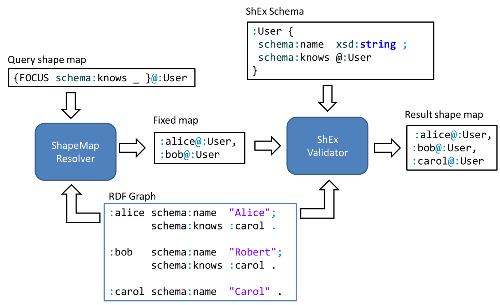
Figure 4.11: Full validation process with query, fixed, and result shape map.
The fixed shape map from Figure 87 can be represented as:2
| [ { "node": ":alice", "shape": ":User" }, { "node": ":bob", "shape": ":User" } ] |
The output shape map would be:
| [ { "node": ":alice", "shape": ":User", "status": "conformant" }, { "node": ":bob", "shape": ":User", "status": "conformant" }, { "node": ":carol", "shape": ":User", "status": "conformant" } ] |
Because the input and output of the validation process is a shape map, long-running workflows can use the result shape map as a starting state for further validation. This is useful when shapes have inter-dependencies, i.e., when validating one node/shape pair requires validating others. Let’s look at a simplified subset of that schema and data.
Given the following schema:
| :User { schema:name xsd:string ; schema:knows @:User* } |
and RDF graph
| :alice schema:name "Alice"; schema:knows :bob . :bob schema:name "Robert" . |
If we were to individually validate
:alice and
:bob, we would validate
:bob twice, once while validating
:alice’s
schema:knows arc and once for the explicit call to validate
:bob.
Semantic actions3 serve as an extension point for Shape Expressions. They can be used to signal a failure or perform some operations during the validation process.
A semantic action contains a label that indicates the language in which the action is written and a string with its contents.
When the ShEx validator finds a semantic action, it checks if it has a processor for that language and calls it with the action contents.
The result of the processor is cast to a Boolean value, in case the result is
false, the corresponding shape would fail.
The following example uses a hypothetical Javascript semantic actions processor to capture the start and end events in a conference and to check that the start date is before the end date.
prefix js: <http://shex.io/extensions/javascript>
:Event {
schema:startDate xsd:dateTime %js:{ let start = o %} ;
schema:endDate xsd:dateTime %js:{ let end = o %} ;
}
The following example checks that the declared area of a rectangle is effectively its width times height.
prefix js: <http://shex.io/extensions/javascript>
:Rectangle {
:height xsd:float %js:{ let height = o %} ;
:width xsd:float %js:{ let width = o %} ;
:area xsd:float %js:{ o = height * width %}
}
Semantic actions have been employed to transform RDF files to other formats like XML or JSON [80], or even other ShEx schemas as performed by the Map extension.4
The test suite defines a single extension language called Test5 that can fail a validation and/or return a message.
ShEx was designed as an RDF validation language which is independent of reasoners or inference systems.
A ShEx processor takes as input an RDF graph and checks if its nodes conform to the shapes defined in a ShEx schema.
The shapes describe the topology of the RDF graph taking into account the possible values of nodes as well as the incoming and outgoing arcs.
In ShEx, a triple whose predicate is
rdf:type is treated as any other triple, and in fact there is no special treatment for nodes that are also RDF classes.
ShEx separates RDF classes and types following the guidelines described
in Section 3.2.
This independence between ShEx and reasoners makes it possible to apply a ShEx processor to a plain RDF graph before inference, to validate the resulting graph after applying a reasoner, or even to validate the intermediate graphs during the reasoning phase, checking reasoner’s behavior.
The following shapes can be used to check an RDF graph before and after RDF Schema inference.
Shape
:TeacherBefore describes that nodes must have
rdf:type
:Teacher,
a property
schema:name with a
xsd:string value and zero or more properties
:teaches whose nodes must conform to
:Course.
Shape
:TeacherAfter describes the shape that teachers must have after inference.
For example, they must have
rdf:type
:Teacher and
:Person,
and the values of property
:teaches must have
rdf:type
:Course.
| :TeacherBefore EXTRA a { a [:Teacher]? ; schema:name xsd:string ; :teaches @:Course* } :TeacherAfter EXTRA a { a [:Teacher]; a [:Person]; schema:name xsd:string ; :teaches { a [:Course] } @:Course } :Course { a [:Course]? } |
If we validate the following RDF data before applying inference,
nodes
:bob and
:carol do not conform to shape
:TeacherAfter
| :alice a :Teacher, :Person; #Passes as a :TeacherBefore schema:name "Alice" ; #Passes as a :TeacherAfter :teaches :algebra . :bob schema:name "Robert" ; #Passes as a :TeacherBefore :teaches :logic . #Fails as a :TeacherAfter :carol a :Teacher ; #Passes as a :TeacherBefore schema:name "Carol" . #Fails as a :TeacherAfter :algebra a :Course . :teaches rdfs:domain :Teacher . :teaches rdfs:range :Course . :Teacher rdfs:subClassOf :Person . |
On the other side, if we validate the previous RDF graph after applying RDF Schema inference, both
:bob and
:carol should conform to
:TeacherAfter.
This combination of shapes before and after inference can be used to check the behavior of a reasoner.
For example, if in the previous case, a faulty RDFS reasoner does not infer that
:logic must have
rdf:type
:Course,
:bob would not conform to
:TeacherAfter and the bug could be detected.
ShEx has an
import keyword that specifies the IRI of another schema that can be imported.
The ShEx processor puts the labeled shapes and triple expressions of the imported schema in scope
for resolution of references in the importing document.
If the imported schema imports other schemas, they are also imported.
For example, if there is a schema located at
http://example.org/Person.shex with the content.
| :Person { $:name ( schema:name . | schema:givenName . ; schema:familyName . ) ; schema:email . } |
And we define a new schema as.
| import <http://example.org/Person.shex> :Employee { &:name ; schema:worksFor <CompanyShape> } :Company { schema:employee @:Employee ; schema:founder @:Person ; } |
| :alice schema:name "Alice"; #Passes as a :Employee schema:worksFor :OurCompany . :OurCompany schema:employee :alice ; schema:founder :bob . :bob schema:name "Robert" ; schema:email <mailto:bob@example.com> . |
The ShEx processor imports each imported schemas exactly once so cyclic imports are allowed. For instance, a schema may import itself or it may import some schema which directly or indirectly imports it.
However, it is an error to import a schema which attempts to re-define a shape expression or triple expression.
For instance, if
http://example.org/Person.shex defined either
:Employee or
:Company,
or if the importing schema defined
:name, the import would fail and processing would stop.
The ShEx language is defined in terms of a JSON-LD syntax, called “ShExJ”, which separates the compact syntax details from the language specification. This serves as an abstract syntax in that it has constructs to capture all of the logic of ShEx. Having an abstract syntax provides a clear definition of the language, makes it easier to write language processors and encourages the definition of other concrete syntax formats. The fact that it is JSON-LD means that the RDF representation of ShEx, called “ShExR”, is simply the JSON-LD interpretation of ShExJ.
The following ShEx schema
| PREFIX : <http://example.org/> PREFIX schema: <http://schema.org/> PREFIX xsd: <http://www.w3.org/2001/XMLSchema#> :User IRI { schema:name xsd:string ; schema:knows @:User* } |
can be represented in ShExR as6:
| PREFIX sx: <http://shex.io/ns/shex#> PREFIX xsd: <http://www.w3.org/2001/XMLSchema#> prefix : <http://example.org/> prefix schema: <http://schema.org/> <> a sx:Schema ; sx:shapes :User . :User a sx:ShapeAnd ; sx:shapeExprs ( [ a sx:NodeConstraint ; sx:nodeKind sx:iri ] [ a sx:Shape; sx:expression [ a sx:EachOf ; sx:expressions ( [ a sx:TripleConstraint ; sx:predicate schema:name ; sx:valueExpr [ a sx:NodeConstraint ; sx:datatype xsd:string ] ] [ a sx:TripleConstraint ; sx:predicate schema:knows ; sx:valueExpr :User; sx:min 0 ; sx:max -1 ] ) ] ] ). |
It can can also be represented in JSON-LD as:
| { "@context": "https://shexspec.github.io/context.jsonld", "type": "Schema", "shapes": [ { "type": "ShapeAnd", "shapeExprs": [ { "type": "NodeConstraint", "nodeKind": "iri" }, { "type": "Shape", "expression": { "type": "EachOf", "expressions": [ { "type": "TripleConstraint", "predicate": "http://schema.org/name", "valueExpr": { "type": "NodeConstraint", "datatype": "xsd:string" } }, { "type": "TripleConstraint", "predicate": "http://schema.org/knows", "valueExpr": "http://example.org/User", "min": 0, "max": -1 } ] } } ], "id": "http://example.org/User" } ] } |
In this chapter we learned about the ShEx language.
We collected the following selection of references about Shape Expressions.
-1 in
max means unbounded.Shapes Constraint Language (SHACL) has been developed by the W3C RDF Data Shapes Working Group, which was chartered in 2014 with the goal to “produce a language for defining structural constraints on RDF graphs [6].”
The first public working draft was published in October 2015 and it was proposed as a W3C Recommendation in June 2017.1
SHACL was influenced by SPIN, and some parts from OSLC resource shapes and ShEx. At the beginning of the Working Group activity it was considered that SHACL was going to be an integration of all the validation approaches into a unified language. However, due to core differences, SHACL and ShEx did not converge. Chapter 7 contains a comparison of both languages and describes the main differences.
SHACL is divided in two parts. The first part, called SHACL Core, describes a core RDF vocabulary to define common shapes and constraints while the second part describes an extension mechanism in terms of SPARQL and has been called: SHACL-SPARQL.
Two working group notes have been published to extend SHACL with (a) advanced features such as rules and complex expressions2 and (b) to enable the definition of constraint components in Javascript (called SHACL-Javascript).3
A W3C SHACL community group4 has been created to continue working on SHACL preparing educational contents and supporting SHACL adoption. A working group note was also suggested for a SHACL Compact Syntax5 but it was decided to postpone it for the W3C community group.
SHACL groups the information and constraints that apply to data nodes into some constructs called shapes. SHACL shapes differ from ShEx shapes in the sense that they also contain information about the target nodes or set of nodes to which they can be applied.
The syntax of SHACL is defined in terms of RDF so we will use Turtle in this book although it is possible to employ other RDF serialization formats such as JSON-LD or RDF/XML.
The following example is similar to the ShEx definition in
Example 26.6
It defines a shape
:UserShape of type
sh:NodeShape.
It has target class declaration pointing to
:User which means that it applies to all nodes that are instances of
:User (see Section 5.7.2).
The next lines declare that nodes conforming to
:UserShape must satisfy the following constraints.
schema:name with values of type
xsd:string (lines 3–8).schema:gender whose value must be either
schema:Male or
schema:Female or any
xsd:string literal (lines 9–17).schema:birthDate property whose datatype must be
xsd:date (lines 18–22).schema:knows properties whose nodes must be IRIs and have type
:User (lines 23–27).| :UserShape a sh:NodeShape; sh:targetClass :User ; sh:property [ # Blank node 1 sh:path schema:name ; sh:minCount 1; sh:maxCount 1; sh:datatype xsd:string ; ] ; sh:property [ # Blank node 2 sh:path schema:gender ; sh:minCount 1; sh:maxCount 1; sh:or ( [ sh:in (schema:Male schema:Female) ] [ sh:datatype xsd:string] ) ] ; sh:property [ # Blank node 3 sh:path schema:birthDate ; sh:maxCount 1; sh:datatype xsd:date ; ] ; sh:property [ # Blank node 4 sh:path schema:knows ; sh:nodeKind sh:IRI ; sh:class :User ; ] . |
SHACL defines shapes as a conjunction of constraints that nodes must satisfy. A SHACL processor checks each of the constraints and returns validation errors for every constraint that is not satisfied.
When no error is reported, it is assumed that the RDF graph has been validated.
The following RDF data graph conforms to the previous example:
| :alice a :User; #Passes as a :UserShape schema:name "Alice" ; schema:gender schema:Female ; schema:knows :bob . :bob a :User; #Passes as a :UserShape schema:gender schema:Male ; schema:name "Robert"; schema:birthDate "1980-03-10"^^xsd:date . :carol a :User; #Passes as a :UserShape schema:name "Carol" ; schema:gender schema:Female ; foaf:name "Carol" . |
When an RDF graph conforms to a shapes graph, SHACL processors return a validation report with no errors. The validation report contains the declaration:
| [ a sh:ValidationReport ; sh:conforms true ]. |
The following RDF graph does not conform to the shapes graph declared in Example 94.
| :dave a :User ; #Fails as a :UserShape schema:name "Dave"; schema:gender :Unknown ; schema:birthDate 1980 ; schema:knows :grace . :emily a :User ; #Fails as a :UserShape schema:name "Emily", "Emilee"; schema:gender schema:Female . :frank a :User ; #Fails as a :UserShape foaf:name "Frank" ; schema:gender schema:Male . _:x a :User; #Fails as a :UserShape schema:name "Unknown" ; schema:gender schema:Male ; schema:knows _:x . |
A SHACL processor reports the following errors.
:dave has value different from
schema:Male,
schema:Female or string for property
schema:gender (the allowed values).:dave has value
1980 for property
schema:birthDate which is of datatype integer when it should be of datatype
xsd:date.:dave has value
:grace for property
schema:knows which is not an instance of
:User.:emily has 2 values for property
schema:name when the maximum count is 1.:frank does not have value for property
schema:name._:x fails because the value of
schema:knows is a blank node and must be an IRI.
When an RDF graph does not conform to a shapes graph, SHACL processors return a validation report that contains several errors. Section 5.5 describes the validation report structure.
At the time of this writing, there are several implementations of SHACL.
A SHACL processor has two inputs: a data graph that contains the RDF data to validate and a shapes graph that contains the shapes. Example 94 contains a shapes graph and Examples 95 and 96 contain two possible RDF data graphs. It is possible to use a single graph that contains both the data and shapes graph merged.
There are two main types of shapes: node shapes and property shapes. Node shapes declare constraints directly on a node. Property shapes declare constraints on the values associated with a node through a path.
Property shapes have a property
sh:path that declares the path that goes from the focus node to the value that they describe.
The most frequent paths are predicate paths which are formed by a single IRI.
A node shape usually contains several property shapes which are declared through the
sh:property predicate.
Example 94 contained four such property shape declarations. The first one was defined as:
| :UserShape ... sh:property [ # Blank node 1 sh:path schema:name ; sh:minCount 1; sh:maxCount 1; sh:datatype xsd:string ; ] ; ... |
Which means that nodes that conform to
:UserShape must also conform to the property shape identified by blank node 1.
The path of that property shape (line 3) is the predicate
schema:name which is, in this case, a single IRI.
The property shape contains several components that declare that there can be a minimum and a maximum of one values that can be accessed through that path (lines 4 and 5)
and that they must belong to the
xsd:string datatype (line 6).
Notice that in Example 94 we used blank nodes for property shapes and enumerated them from 1–4 because we will refer to them when we describe the validation report in next section. Although using blank nodes may be more readable, sometimes, it may be better to declare an IRI for the property shapes so they can be referenced from other shapes graphs when they are imported (see the next section).
Example 94 could be rewritten as:
| :UserShape a sh:NodeShape; sh:targetClass :User ; sh:nodeKind sh:IRI ; sh:property :HasEmail ; sh:property :HasGender ; sh:property :MaybeBirthDate ; sh:property :KnowsUsers . :HasEmail sh:path schema:name ; sh:minCount 1; sh:maxCount 1; sh:datatype xsd:string . :HasGender sh:path schema:gender ; sh:minCount 1; sh:maxCount 1; sh:or ( [ sh:in (schema:Male schema:Female) ] [ sh:datatype xsd:string] ) . :MaybeBirthDate sh:path schema:birthDate ; sh:maxCount 1; sh:datatype xsd:date . :KnowsUsers sh:path schema:knows ; sh:class :User . |
A shapes graph contains shapes definitions that will be passed to the SHACL validation process.
Shapes graphs can be reusable modules that can be referenced by other shapes graphs with the predicate
owl:imports.
As a pre-validation step, SHACL processors should extend the original shapes graph by following and importing all referenced shapes graphs through
owl:imports declarations.
The resulting graph will be the input shapes graph that will be used for validation.
If we assume that Example 94 is available at
IRI http://example.org/UserShapes, then, the following shapes graph imports its shapes and uses them to declare that nodes that conform to
:TeacherShape must also conform to
:UserShape (line 5) and have the predicate
:teaches with a value of datatype
xsd:string.
| <> owl:imports <http://example.org/UserShapes> . :TeacherShape a sh:NodeShape; sh:targetClass :Teacher ; sh:node :UserShape ; sh:property [ sh:path :teaches ; sh:minCount 1; sh:datatype xsd:string; ] . |
Given the following data:
| :alice a :Teacher; #Passes as a :TeacherShape schema:name "Alice" ; schema:gender schema:Female ; schema:knows :bob ; :teaches "Algebra" . :bob a :User ; #Passes as a :UserShape schema:gender schema:Male ; schema:name "Robert" . :carol a :Teacher ; #Fails as a :TeacherShape schema:gender 23 ; :teaches "Logic" . |
A SHACL processor validates that
:alice conforms to
:TeacherShape, and
:bob to
:UserShape but reports that
:carol does not conform to
:TeacherShape.
As we said, SHACL processors take as input a data graph and a shapes graph and return a validation report.
The validation report is defined as an RDF graph with the following structure.
If the data graph conforms to the shapes graph, the report contains a
sh:conforms declaration with the value
true:
| :report a sh:ValidationReport ; sh:conforms true . |
If the data graph does not conform to the shapes graph, the validation report will have a value
false for the property
sh:conforms and a set of validation errors of type
sh:ValidationResult linked by the property
sh:result.
Each validation result contains metadata about the cause of the error such as
sh:focusNode,
sh:value,
sh:resultPath, etc.
Table 5.1 describes the properties of validation results.
Table 5.1: SHACL validation result properties
Property Description sh:focusNodeThe focus node that was being validated when the error happened sh:resultPathThe path from the focus node. This property is optional usually corresponds to the sh:pathdeclaration of property shapessh:valueThe value that violated the constraint, when available sh:sourceShapeThe shape that the focus node was validated against when the constraint was violated. sh:sourceConstraintComponentThe IRI that identifies the component that caused the violation. sh:detailMay point to further details about the cause of the error. This property can be used for reporting errors in nested nested shapes. sh:resultMessageTextual details about the error. This message can be affected by the sh:messageproperty (see section 5.6.4)sh:resultSeverityA value which is equal to the sh:severityvalue of the shape that caused the violation error. If the shape doesn’t havesh:severitydeclaration then the default value will besh:Violation.
The validation report generated by a SHACL processor when trying to validate the shapes graph in Example 94 with the data graph from Example 96 could be:
| :report a sh:ValidationReport ; sh:conforms false ; sh:result [ a sh:ValidationResult ; sh:resultSeverity sh:Violation ; sh:sourceConstraintComponent sh:InConstraintComponent ; sh:sourceShape ... ; # blank node 2 sh:focusNode :dave ; sh:value :Unknown ; sh:resultPath schema:gender ; sh:resultMessage "Value has none of the shapes from the or list"], [ a sh:ValidationResult ; sh:resultSeverity sh:Violation ; sh:sourceConstraintComponent sh:DatatypeConstraintComponent ; sh:sourceShape ... ; # blank node 3 sh:focusNode :dave ; sh:value 1980 ; sh:resultPath schema:birthDate ; sh:resultMessage "Value does not have datatype xsd:date" ], [ a sh:ValidationResult ; sh:resultSeverity sh:Violation ; sh:sourceConstraintComponent sh:ClassConstraintComponent ; sh:sourceShape ... ; # blank node 4 sh:focusNode :dave ; sh:value :grace ; sh:resultPath schema:knows ; sh:resultMessage "Value is not an instance of User" ], [ a sh:ValidationResult ; sh:resultSeverity sh:Violation ; sh:sourceConstraintComponent sh:MaxCountConstraintComponent ; sh:sourceShape ... ; # blank node 1 sh:focusNode :emily ; sh:resultPath schema:name ; sh:resultMessage "More than 1 values" ], [ a sh:ValidationResult ; sh:resultSeverity sh:Violation ; sh:sourceConstraintComponent sh:MinCountConstraintComponent ; sh:sourceShape ...; # blank node 1 sh:focusNode :frank ; sh:resultPath schema:name ; sh:resultMessage "Less than 1 values" ], [ a sh:ValidationResult ; sh:resultSeverity sh:Violation ; sh:sourceConstraintComponent sh:NodeKindConstraintComponent ; sh:sourceShape :UserShape ; sh:focusNode _:x ; sh:value _:x ; sh:resultMessage "Value does not have node kind sh:IRI"] . |
Although in the rest of this chapter we will describe the different errors in natural language for simplicity, the validation results returned by SHACL processors will have the structure above.
There are two types of shapes in SHACL: node shapes and property shapes. Node shapes specify constraints about a node while property shapes specify constraints about the values that can be reached from a node by a path.

Figure 5.1: Shapes in SHACL.
Node shapes directly specify constraints about a focus node.
The following shapes graph declares a node shape
:UserShape
which applies to all nodes that are instances of
:User
and the constraint that nodes conforming to
:UserShape must be IRIs.
| :UserShape a sh:NodeShape; sh:targetClass :User ; sh:nodeKind sh:IRI . |
Given the following RDF graph:
| :alice a :User . #Passes as a :UserShape <http://other.uri.com/bob> a :User . #Passes as a :UserShape _:1 a :User . #Fails as a :UserShape |
A SHACL processor checks that
:alice and
<http://other.uri.com/bob> conform to shape
:User and returns the error:
_:1 is not an IRI
Property shapes specify constraints about the values that can be reached from a focus node by some path.
sh:property associates a shape with a property shape.
The nodes that are affected by a property shape are specified using
sh:path property
that can take as value IRIs or SHACL paths.
SHACL paths are semantically equivalent to a subset of the SPARQL 1.1 property paths but they use an RDF encoding based on the following rules.
sh:inversePath.sh:alternativePath whose value is an RDF list with the different alternatives.?,
*, and
+ are encoded by a blank node with the corresponding
properties
sh:zeroOrOnePath,
sh:zeroOrMorePath or
oneOrMorePath.
Table 5.2 presents some examples of SHACL paths and their corresponding SPARQL paths.
Table 5.2: SHACL and SPARQL paths
SHACL path SPARQL path schema:nameschema:name[sh:inversePathschema:knows]^schema:knows(schema:knowsschema:name)schema:knows/schema:name[sh:alternativePath(schema:knowsschema:follows)]schema:knows|schema:follows[sh:zeroOrOnePathschema:knows]schema:knows?[sh:oneOrMorePathschema:knows]schema:knows+([sh:zeroOrMorePathschema:knows]schema:name)schema:knows*/schema:name
The following shape declares that nodes that are instances of
:User
must satisfy that they must have a value for property
schema:knows or
schema:follows,
which must be an IRI and
that any node linked to users by the transitive closure of the
schema:knows property
must have a
schema:email whose value must also be an IRI.
| :UserShape a sh:NodeShape; sh:targetClass :User ; sh:property [ sh:path [sh:alternativePath (schema:knows schema:follows)] ; sh:nodeKind sh:IRI ; sh:minCount 1 ] ; sh:property [ sh:path ([sh:oneOrMorePath schema:knows] schema:email) ; sh:nodeKind sh:IRI ]. |
Given the following RDF data:
| :alice a :User ; #Passes as a :UserShape schema:follows <mailto:alice@mail.org>; schema:knows :bob, :carol . :bob schema:email <mailto:bob@mail.org>; schema:knows :carol . :carol schema:email <mailto:carol@mail.org> . :dave a :User ; #Fails as a :UserShape schema:knows <mailto:dave@mail.org> ; schema:knows :carol, :emily . :emily schema:email "Unknown" . |
A SHACL processor verifies that
:alice conforms to shape
:UserShape because it has
schema:email with an IRI value and
all the nodes that can be reached by the property
schema:knows one or more times followed by the property
schema:email
(which is equivalent to
schema:knows+/schema:email using SPARQL notation) are also IRIs.
The SHACL processor would return error for
:dave because one of the values of
schema:knows has an
schema:email that is not an IRI (
:emily).
SHACL defines the concept of constraint components which are associated with shapes to declare constraints. Each node or property shape can be associated with several constraint components.
Constraint components are identified by an IRI and have two types of parameters: mandatory and optional.
The association between a shape and a constraint component is made by declaring values for the parameters.
The parameters are also identified by IRIs and have values.
Most of the constraint components in SHACL Core have a single parameter and follow the convention that
if the parameter is named
sh:p, the corresponding constraint component is named
sh:pConstraintComponent.
The following code:
| :UserShape a sh:NodeShape ; sh:nodeKind sh:IRI ; sh:class schema:Person . |
declares a node shape
:UserShape with two constraints which are associated with the following constraint components:
sh:NodeKindConstraintComponent with the value
sh:IRI for the parameter
sh:nodeKind.
The constraint means that nodes that conform to
:UserShape must be IRIs; andsh:ClassConstraintComponent with the value
schema:Person for the parameter
sh:class.
The constraint means that nodes conforming to
:UserShape must be instances of
schema:Person.
Given the following data:
| :alice a schema:Person . #Passes as a :UserShape :bob a schema:Product . #Fails as a :UserShape _:x a schema:Person . #Fails as a :UserShape |
When a constraint component declares a single parameter, the parameter may be used several times in the same shape. Each value of the parameter declares a different constraint. The interpretations of such declarations is conjunctive, i.e., all constraints apply.
The following code:
| :UserShape a sh:NodeShape; sh:class foaf:Person ; sh:class schema:Person . |
Declares two constraints with the parameter
sh:class that means that nodes conforming to
:UserShape must be instances of both
foaf:Person and
schema:Person.
Constraint components are associated with validators which define the behavior of the constraint.
SHACL Core contains a list of built-in constraint components that are classified in Table 5.3. In the table, we included the parameter names because they are shorter than the component IRIs. Those components will be described in more detail in their corresponding sections later in this chapter.
Table 5.3: SHACL core constraint components
Operation Parameters Section Cardinality constraints sh:minCount,sh:maxCount5.8 Value types sh:class,sh:datatype,sh:nodeKind
sh:in,sh:hasValue5.9 Value range constraints sh:minInclusive,sh:maxInclusive
sh:minExclusive,sh:maxExclusive5.10.1 String based constraints sh:minLength,sh:maxLength
sh:lengthsh:pattern5.10.2 Language based sh:uniqueLang,sh:languageIn5.10.3 Logical constraints sh:and,sh:or,sh:xone,sh:not5.11 Shape-based constraints sh:node,sh:property
sh:qualifiedValueShape,sh:qualifiedValueShapesDisjoint
sh:qualifiedMinCountsh:qualifiedMaxCount5.12 Closed shapes sh:closed,sh:ignoredProperties5.13 Property pair constraints sh:equals,sh:disjoint
sh:lesThan,sh:lessThanOrEquals5.14 Non-validating constraints sh:name,sh:description,sh:order,sh:group5.15
As we will show in Section 5.16, SHACL-SPARQL can be used to declare other constraint components.
The property sh:message can be used to associate a human-friendly message
with a shape.
If there is a violation that affects that shape, a SHACL processor can include
the value of sh:message as the value of
sh:resultMessage
in the validation report.
sh:message example| :UserShape a sh:NodeShape ; sh:targetClass :User ; sh:property [ # Blank node 1 sh:path schema:name ; sh:minCount 1 ; sh:message "Where is the name?" ] . |
Given the following RDF graph:
| :alice a :User ; #Passes as a :UserShape schema:name "Alice" . :bob a :User ; #Fails as a :UserShape foaf:name "Bob" . |
A SHACL processor would return the following validation report:
| :report a :ValidationReport ; sh:conforms false ; sh:result [ a sh:ValidationResult ; sh:resultSeverity sh:Violation ; sh:sourceConstraintComponent sh:MinCountConstraintComponent ; sh:sourceShape ... ; # Blank node 1 sh:focusNode :bob ; sh:resultPath schema:name ; sh:resultMessage "Where is the name?" ; ] . |
The property sh:severity can be used to declare a severity value for a shape.
If there is a violation that affects that shape, a SHACL processor can include the value of sh:severity as the value of
sh:resultSeverity in the validation report.
SHACL describes three kinds of severity levels:
sh:Info, sh:Warning, and sh:Violation.
If the shape does not declare a severity value, the default one is
sh:Violation.
sh:severity exampleGiven the following shapes graph:
| :UserShape a sh:NodeShape ; sh:targetClass :User ; sh:property [ # Blank node 1 sh:path schema:name ; sh:datatype xsd:string ; sh:severity sh:Warning ] . |
and the RDF graph:
| :alice a :User ; #Passes as a :UserShape schema:name "Alice" . :bob a :User ; #Fails as a :UserShape schema:name 23 . |
A SHACL processor returns the following validation report:
| :report a :ValidationReport ; sh:conforms false ; sh:result [ a sh:ValidationResult ; sh:resultSeverity sh:Warning ; sh:sourceConstraintComponent sh:DatatypeConstraintComponent ; sh:sourceShape ... ; # Blank node 1 sh:focusNode :bob ; sh:resultPath schema:name ; sh:resultMessage "Datatype should be xsd:string" ; sh:value 23 ] . |
If a shape has the property
sh:deactivated with the value
true then it is deactivated and all RDF terms will conform to it.
A typical use case for deactivated shapes is when one imports shapes from another graph by a third party and wants to deactivate some of the shapes in the local shapes graph that do not apply in the current context.
Notice that if the author of a shapes library anticipates that a shape may need to be disabled or modified by others, it may be better to use IRIs instead of blank nodes, so they can be referenced later.
Let’s assume that there is a shapes library available at IRI http://example.org/UserShapes with the following shapes graph:
| :UserShape a sh:NodeShape; sh:targetClass :User ; sh:property :HasName ; sh:property :HasEmail . :HasName sh:path schema:name ; sh:minCount 1; sh:maxCount 1; sh:datatype xsd:string . :HasEmail sh:path schema:email ; sh:minCount 1; sh:nodeKind sh:IRI . |
And we define a shapes graph importing the previous shapes and adding a declaration for
:TeacherShape that deactivates the property
:HasEmail:
| <> owl:imports <http://example.org/UserShapes> . :TeacherShape a sh:NodeShape; sh:targetClass :Teacher ; sh:node :UserShape ; sh:property [ sh:path :teaches ; sh:minCount 1; sh:datatype xsd:string; ] ; :HasEmail sh:deactivated true . |
The merged shapes graph deactivates the property shape
:HasEmail so nodes that conform to
:TeacherShape need to conform to
:UserShape but do not need to have
schema:email property.
Given the following RDF data:
| :alice a :Teacher ; #Passes as a :TeacherShape schema:name "Alice" ; schema:email <mailto:alice@example.org>; :teaches "Logic" . :bod a :Teacher ; #Passes as a :TeacherShape schema:name "Robert" ; schema:email "This email is not an IRI"; :teaches "Algebra" . :carol a :Teacher ; #Fails as a :TeacherShape schema:name 23 ; :teaches "Logic" . |
A SHACL processor checks that
:alice and
:bob conform to
:TeacherShape even if
:bob does not conform to the
:HasEmail shape.
It returns the following error:
:carol does not conform to
:TeacherShape because it does not conform to
:UserShape as the value of property
schema:name does not have datatype
xsd:string.
SHACL shapes may define several target declarations. Target declarations specify the set of nodes that will be validated against a shape. Table 5.4 contains the different target declarations defined in SHACL core.
SHACL targets provide the same functionality as the ShEx Shape maps (see 4.9). We discuss the core differences in section 7.4.
Table 5.4: SHACL target declarations
Value Description sh:targetNodeDirectly point to a node sh:targetClassAll nodes that are instances of some class sh:targetSubjectsOfAll nodes that are subjects of some predicate sh:targetObjectsOfAll nodes that are objects of some predicate
The predicate
sh:targetNode declares a node that must conform to some shape.
sh:targetNode exampleIn the following example,
:alice,
:bob, and
:carol are declared as the target nodes of
:UserShape so a SHACL processor will validate those nodes.
| :UserShape a sh:NodeShape ; sh:targetNode :alice, :bob, :carol ; sh:property [ sh:path schema:name ; sh:minCount 1; sh:maxCount 1; sh:datatype xsd:string ; ] . |
Given the RDF graph:
| :alice schema:name "Alice Cooper" . #Passes as a :UserShape :bob foaf:name "Bob" . #Fails as a :UserShape :carol schema:name 23 . #Fails as a :UserShape :dave schema:name 45 . # Ignored |
A SHACL processor checks that
:alice conforms to
:UserShape and returns the errors:
:bob does not have have value for property
schema:name
:carol has a value which is not a
xsd:string for property
schema:name.
Notice that it ignores
:dave as it was not affected by the
sh:targetNode declaration.
sh:targetNode provides a similar functionality to the ShEx Fixed shape map (see 4.9.1).
However, the difference is that SHACL target nodes silently ignore missing target nodes from the data graph, while in ShEx, we get back a failure.
Depending on the data and constraint modeling approach, silent ignore may lead to false-positives and thus, target nodes should be used with caution.
Target class declarations specify that all instances of some class must be validated with some shape.
SHACL employs a specific notion of instance, which is called SHACL instance, which can be defined using SPARQL property paths as:
A node
X is a SHACL instance of a class
C if
X rdf:type/rdfs:subClassOf* C.
It means that nodes with an explicit
rdf:type arc declaration are considered
but also values that have an
rdf:type declaration pointing to some class that is transitively linked to another class by the
rdfs:subClassOf predicate.
Note that the definition uses only the predicate
rdfs:subClassOf but does not take into account other predicates from RDFS like
rdfs:domain,
rdfs:target, etc.
The definition is does not require RDFS inference.
sh:targetClass example| :UserShape a sh:NodeShape ; sh:targetClass :User ; sh:property [ sh:path schema:name ; sh:minCount 1; sh:maxCount 1; sh:datatype xsd:string ; ] . |
Given the following RDF graph:
| :alice a :User; #Passes as a :UserShape schema:name "Alice Cooper" . :bob a :User; #Fails as a :UserShape foaf:name "Bob" . :carol a :User; #Fails as a :UserShape schema:name 23 . :dave a :Student ; #Fails as a :UserShape schema:name 45 . :emily a :Student ; #Passes as a :UserShape schema:name "Emily" . :Student rdfs:subClassOf :User . |
A SHACL validator checks that both
:alice and
:emily conform to
:UserShape and returns the following errors:
:bob does not have property
schema:name.
:carol has a value for
schema:name that is not an
xsd:string.
:dave has a value for
schema:name that is not an
xsd:string.
A shape with type
sh:NodeShape and
rdfs:Class is a target class of itself.
This means that the
sh:targetClass declaration is implicit.
| :User a sh:NodeShape, rdfs:Class ; sh:property [ sh:path schema:name ; sh:minCount 1; sh:maxCount 1; sh:datatype xsd:string ; ] . |
has the same validation behavior as:
| :User a sh:NodeShape ; sh:targetClass :User ; sh:property [ sh:path schema:name ; sh:minCount 1; sh:maxCount 1; sh:datatype xsd:string ; ] . |
So given the following RDF graph:
| :alice a :User; #Passes as a :User schema:name "Alice Cooper" . :bob a :User; #Fails as a :User foaf:name "Robert" . |
The system would return the following error.
:bob does not have property
schema:name.
Implicit target class declarations conflate the concept of shape and class as a single entity. This can be a dangerous practice in the open semantic web as they are different concepts (see 3.2). It can also be a very convenient feature to associate shape constraints with classes, and the Data Shapes Working Group decided to support it.
In this book, we opt to separate shapes and classes, using the following pattern:
| :UserShape a sh:NodeShape ; sh:targetClass :User ; ... |
The property
sh:targetSubjectsOf selects as focus nodes the subjects of some property.
sh:targetSubjectsOf example
| :UserShape a sh:NodeShape; sh:targetSubjectsOf :teaches ; sh:property [ sh:path schema:name ; sh:minCount 1; sh:maxCount 1; sh:datatype xsd:string ; ] . |
Given the following RDF graph:
| :alice :teaches :Algebra ; #Passes as a :UserShape schema:name "Alice" . :bob :teaches :Logic ; #Fails as a :UserShape foaf:name "Robert" . :carol foaf:name 23 . # Ignored |
The system checks that
:alice has shape
:UserShape and signals the error:
:bob does not have property
schema:name.
In this case, the system ignores
:carol.
The property
sh:targetObjectsOf selects as focus nodes the objects of some property.
sh:targetObjectsOf example
| :UserShape a sh:NodeShape; sh:targetObjectsOf :isTaughtBy ; sh:property [ sh:path schema:name ; sh:minCount 1; sh:maxCount 1; sh:datatype xsd:string ; ] . |
Given the following RDF graph:
| :alice schema:name "Alice" . #Passes as a :UserShape :bob foaf:name "Robert" . #Fails as a :UserShape :carol foaf:name 23 . # Ignored :algebra :isTaughtBy :alice, :bob . |
The system checks that
:alice has shape
:UserShape and signals the error:
:bob does not have property
schema:name.
The system ignores
:carol as it is not the object of the
:isTaughtBy property.
Cardinality constraint components specify restrictions on the minimum and maximum number of distinct value nodes.
Table 5.5 defines the cardinality constraint component parameters in SHACL.
The default cardinality in SHACL for property shapes is
{0,unbounded}.
Table 5.5: SHACL cardinality constraint components
Operation Description sh:minCountRestricts minimum number of value nodes.
If not defined, there is no restriction (no minimum).sh:maxCountRestricts maximum number of value nodes.
If not defined, there is no restriction (unbounded).
Given the following shapes graph:
| :User a sh:NodeShape, rdfs:Class ; sh:property [ sh:path schema:follows ; sh:minCount 2 ; sh:maxCount 3 ; ] . |
and the following RDF graph:
| :alice a :User ; #Passes as a :User schema:follows :bob, :carol . :bob a :User ; #Fails as a :User schema:follows :alice . :carol a :User ; #Fails as a :User schema:follows :alice, :bob, :carol, :dave . |
A SHACL validator returns the errors:
:bob has less than two values for the property
schema:follows; and
:carol has more than three values for the property
schema:follows.
These constraint components specify the set of values that a node can have. For example, nodes with some datatype, or are IRIs, or literals, etc. Table 5.6 describes the different possibilities which we will detail in the following sections.
Table 5.6: Constraints on values
Operation Description sh:datatypeSpecifies the values must be literals with some datatype sh:classSpecifies that values must be SHACL instances of some class sh:nodeKindPossible values: sh:BlankNode,sh:IRI,sh:Literal,sh:BlankNodeOrIRI,sh:BlankNodeOrLiteral,sh:IRIOrLiteralsh:inEnumerates the value nodes that a property is allowed to have sh:hasValueA node must have a given value
sh:datatype specifies the datatype that a focus node must have.
Remember that all literals in the RDF data model have an associated datatype
(see Section 2.2).
Plain string literals have
xsd:string datatype by default.
SHACL contains a list of built-in datatypes that are based on XML Schema datatypes (which are the same as in SPARQL 1.1).
For those datatypes SHACL processors also check that the lexical form conforms to the datatype rules.
This means that something like
"Unknown"^^xsd:date is not a well-typed
literal because
"Unknown"xsd:date rules.
Given the following shapes graph20:
| :UserShape a sh:NodeShape ; sh:targetClass :User ; sh:property [ sh:path schema:name ; sh:datatype xsd:string ] ; sh:property [ sh:path schema:birthDate ; sh:datatype xsd:date ; ] . |
and the following RDF graph:
| :alice a :User ; # Passes as a :User schema:name "Alice"; schema:birthDate "1981-07-10"^^xsd:date . :bob a :User ; # Fails as a :User schema:name "Robert" ; schema:birthDate 1981 . :carol a :User ; # Fails as a :User schema:name :Carol ; schema:birthDate "2003-06-10"^^xsd:date . :dave a :User ; # Fails as a :User schema:name "Dave" ; schema:birthDate "Unknown"^^xsd:date . |
A SHACL processor validates that
:alice has shape
:User and returns the following errors:
:bob has a value for path
schema:birthDate that is not a
xsd:date (it is an integer);:carol has a value for path
schema:name that is not a
xsd:string (it is an IRI); and :dave has a value for path
schema:birthDate that is not a
xsd:date (its lexical form does not match
xsd:date).The RDF data model enables the use of other datatypes apart from the popular XML Schema datatypes.
In the following example, a picture contains the properties
schema:width and
schema:height using a hypothetical custom datatype (
cdt:distance).
| :PictureShape a sh:NodeShape ; sh:targetClass :Picture ; sh:property [ sh:path schema:width ; sh:datatype cdt:distance ] ; sh:property [ sh:path schema:height ; sh:datatype cdt:distance ] . |
| :gioconda a :Picture ; # Passes as a :PictureShape schema:width "21 in"^^cdt:distance ; schema:height "30 in"^^cdt:distance . :other a :Picture ; # Fails as a :PictureShape schema:width "21 in"^^xsd:string ; schema:height 30 . |
A common use case is to declare that some literals must be language-tagged strings.
| :CountryShape a sh:NodeShape ; sh:targetClass :Country ; sh:property [ sh:path schema:name ; sh:datatype rdf:langString ] . |
| :italy a :Country ; #Passes as a :CountryShape schema:name "Italia"@es . :france a :Country ; #Fails as a :CountryShape schema:name "France" . |
sh:class specifies that each value is an instance of a given class.
As in Section 5.7.2, the notion of instance that SHACL uses is a variation of RDF Schema where a node X is an instance of C if
X rdf:type/rdfs:subClassOf* C.
The following shape
:User declares that the values of property
schema:worksFor must be SHACL instances of the
:Organization class.
| :UserShape a sh:NodeShape ; sh:targetClass :User ; sh:property [ sh:path schema:worksFor ; sh:class :Organization ] . |
Given the following RDF graph:
| :alice a :User ; #Passes as a :User schema:worksFor :aCompany . :bob a :User ; #Passes as a :User schema:worksFor :aUniversity . :carol a :User ; #Fails as a :User schema:worksFor :Unknown . :aCompany a :Organization . :aUniversity a :University . :University rdfs:subClassOf :Organization . |
A SHACL processor verifies that
:alice and
:bob conform to shape
:User and returns the following error:
:carol has the value
:Unknown for property
schema:worksFor which is not a SHACL instance of
:Organization.
sh:nodeKind specifies the kind of values according to the RDF Data model.
Table 5.7 contains the possible values for that property.
Table 5.7: Node kinds
Nodekind Description sh:IRINodes must be IRIs sh:BlankNodeNodes must be Blank nodes sh:LiteralNodes must be Literals sh:BlankNodeOrLiteralNodes must be Blank nodes or literals sh:BlankNodeOrIRINodes must be Blank nodes or IRIs sh:IRIOrLiteralNodes must be IRIs or literals
| :UserShape a sh:NodeShape ; sh:targetClass :User ; sh:property [ sh:path schema:name ; sh:nodeKind sh:Literal ; ]; sh:property [ sh:path schema:follows ; sh:nodeKind sh:BlankNodeOrIRI ]; sh:nodeKind sh:IRI . |
Given the following RDF graph:
| :alice a :User; #Passes as a :UserShape schema:name "Alice" ; schema:follows [ schema:name "Dave" ] . :bob a :User; #Fails as a :UserShape schema:name _:1 ; schema:follows :alice . :carol a :User; #Fails as a :UserShape schema:name "Carol" ; schema:follows "Dave" . :dave a :User . #Passes as a :UserShape _:1 a :User . #Fails as a :UserShape |
A SHACL processor verifies that
:alice and
:dave conform to shape
:UserShape and returns the following errors:
:bob has a value that is not a literal for property
schema:name.:carol has a value that is not a blank node or IRI for property
schema:follows._:1 is not an IRI .
Note that
:dave pases as
:UserShape because there are no cardinality restrictions on
schema:name and
schema:follows.
sh:in specifies that each value must be a member of the provided list.
sh:in example| :UserShape a sh:NodeShape ; sh:targetClass :User ; sh:property [ sh:path schema:gender ; sh:in ( schema:Male schema:Female ) ] . |
Given the following RDF graph:
| :alice a :User; #Passes as a :UserShape schema:affiliation :OurCompany ; schema:gender schema:Female . :bob a :User; #Fails as a :UserShape schema:gender schema:male . |
A SHACL processor verifies that
:alice conforms to
:UserShape and returns the following errors:
:bob has a value for
schema:gender that is not in the list
( schema:Male schema:Female) because
schema:Male is not equal to
schema:male.
sh:hasValue declares the value that a node must have .
Notice that even if there is no
sh:minCount declared, this constraint checks that the property has that value (and possibly others).
sh:hasValue| :UserShape a sh:NodeShape ; sh:targetClass :User ; sh:property [ sh:path schema:affiliation ; sh:hasValue :OurCompany ] . |
Given the following RDF graph:
| :alice a :User; #Passes as a :UserShape schema:affiliation :OurCompany . :bob a :User; #Fails as a :UserShape schema:affiliation :OurUniversity . :carol a :User . #Fails as a :UserShape :dave a :User; #Passes as a :UserShape schema:affiliation :OurCompany ; schema:affiliation :OurUniversity . |
A SHACL processor verifies that
:alice conforms to
:UserShape and returns the following errors:
:bob does not have value
:OurCompany for property
schema:affiliation; and
:carol does not have value for property
schema:affiliation.
SHACL contains a list of built-in constraint components that resemble XML Schema facets and have the same semantics.
The parameters
sh:minInclusive,
sh:minExclusive,
sh:maxInclusive,
sh:maxExclusive declare the minimum or maximum value of a literal with the variants to include or exclude the given value.
| :Rating a sh:NodeShape ; sh:targetSubjectsOf schema:ratingValue ; sh:property [ sh:path schema:ratingValue ; sh:minInclusive 1 ; sh:maxInclusive 5 ; sh:datatype xsd:integer ] . |
Given the following RDF graph:
| :low schema:ratingValue 1 . #Passes as a :Rating :average schema:ratingValue 3 . #Passes as a :Rating :veryGood schema:ratingValue 5 . #Passes as a :Rating :zero schema:ratingValue 0 . #Fails as a :Rating :incredible schema:ratingValue 100 . #Fails as a :Rating |
A SHACL processor verifies that
:low,
:average, and
:veryGood conform to shape
:Rating and returns the errors:
:zero has a value below the minimum
1; and:incredible has a value bigger than the maximum
5.
The parameters
sh:minLength,
sh:maxLength,
and
sh:pattern (with
sh:flags) specify string facets on value nodes.
These constraints check the string representation of the value.21
String facets are always violated when the value node is a blank node.
sh:minLength and
sh:maxLength specify constraints on the size of the string representation of a value node.
When
sh:minLength is 0, it means that there is no restriction on the length of the string.
sh:minLength,
sh:maxLength example| :User a sh:NodeShape, rdfs:Class ; sh:property [ sh:path schema:name ; sh:minLength 4 ; sh:maxLength 20 ; ] ; sh:property [ sh:path schema:description ; sh:minLength 0 ; ] . |
The following RDF graph:
| :alice a :User; #Passes as a :User schema:name "Alice"; schema:description "...long description..." . :bob a :User; #Fails as a :User schema:name "Bob" . :carol a :User; #Fails as a :User schema:name :Carol . :strange a :User; #Fails as a :User schema:name _:strange . |
verifies that
:alice and
:carol conform to shape
:User and reports the errors:
:bob has a
schema:name whose length is less that 4; and :strange has a blank node as the value for property
schema:name whose length can’t be calculated.In the case of
:carol, notice that the example depends on the length of the prefixed name
:Carol which will
be calculated after concatenating the IRI associated with the empty prefix
: to
Carol.
In this case, if
: is associated with
http://example.org/, the processor will evaluate the length of
http://example.org/Carol (which is 24) and fails because it is bigger than 20.
sh:pattern specifies that a value must match a regular expression.
It has the same definition as the SPARQL regex function.22
The parameter
sh:flags is optional and can modify the way the regular expression matches.
The definition of
sh:flags is the same as SPARQL and XPath regular expressions.
One of the most popular flags is
i which indicates that the match is case-insensitive.
We already gave a short introduction to regular expressions in Section 4.5.3. Although that section was for ShEx, the concept is the same.
| :ProductShape a sh:NodeShape ; sh:targetClass :Product ; sh:property [ sh:path schema:productID ; sh:pattern "^P\\d{3,4}" ; sh:flags "i" ; ] . |
Given the following RDF graph:
| :car a :Product ; schema:productID "P2345" . #Passes as a :Product :bus a :Product; schema:productID "p567" . #Passes as a :Product :truck a :Product; schema:productID "P12" . #Fails as a :Product :bike a :Product; schema:productID "B123" . #Fails as a :Product |
A SHACL processor verifies that
:car and
:bus conform to
:Product and returns the following errors:
:truck has a value for
schema:productID that is too short; and :bike has a value for
schema:productID that does not start with
P or
p.
sh:languageIn declares the allowed languages of a literal and
sh:uniqueLang specifies that no pair of nodes can have the same language tag.
sh:languageInThe following example declares that the
rdfs:label property of a product must be a tagged literal in Spanish, English, or French.
| :ProductShape a sh:NodeShape; sh:targetClass :Product ; sh:property [ sh:path rdfs:label ; sh:languageIn ("es" "en" "fr") ] . |
| :p234 a :Product ; #Passes as a :ProductShape rdfs:label "leche"@es, "milk"@en . :p235 a :Product ; #Passes as a :ProductShape rdfs:label "ham"@en . :p236 a :Product ; #Fails as a :ProductShape rdfs:label "tomaten"@de . :p237 a :Product ; #Fails as a :ProductShape rdfs:label "patatas"@es , "kartofeln"@de . |
sh:uniqueLang The following example declares that if the nodes of shape
:CountryShape have property
skos:prefLabel then the values must have different language tags.
| :CountryShape a sh:NodeShape ; sh:targetClass :Country ; sh:property [ sh:path skos:prefLabel ; sh:uniqueLang true ] . |
| :italy a :Country; #Passes as a :CountryShape skos:prefLabel "Italy"@en, "Italia"@es . :france a :Country; #Passes as a :CountryShape skos:prefLabel "France", "France"@en, "Francia"@es . :spain a :Country . #Passes as a :CountryShape :usa a :Country; #Fails as a :CountryShape skos:prefLabel "USA"@en, "United States"@en. |
The previous example returns the error:
:usa has more than one language for English at property
skos:prefLabel.
In the previous example, a node without
skos:prefLabel (e.g.,
:spain) also conforms to
:CountryShape.
A typical situation is to require exactly one literal per language from a list of allowed languages.
For example, declaring that nodes of shape
:CountryShape have at least one
skos:prefLabel in English or Spanish.
| :CountryShape a sh:NodeShape ; sh:targetClass :Country ; sh:property [ sh:path skos:prefLabel ; sh:minCount 1 ; sh:uniqueLang true ; sh:languageIn ("en" "es") ; ] . |
Given the following data:
| :italy a :Country; #Passes as a :CountryShape skos:prefLabel "Italy"@en, "Italia"@es . :france a :Country; #Fails as a :CountryShape skos:prefLabel "France" , "France"@en, "Francia"@es . :spain a :Country . #Fails as a :CountryShape :usa a :Country; #Fails as a :CountryShape skos:prefLabel "USA"@en, "United States"@en. |
In this case,
:spain fails because it has no
skos:prefLabel,
:france fails because if has one value that is not in English or Spanish, and
:usa fails because it has more than one value in English.
The operators
sh:and,
sh:or,
xone, and
sh:not can be used to form complex constraints.
Their semantics is described in Table 5.8.
sh:and,
sh:or, and
sh:not have the traditional meaning of the corresponding Boolean operators while
sh:xone (exactly one) is similar to the exclusive-or when applied to two arguments.
When applied to more than 2 arguments, the former requires exactly one,
while the latter requires an odd number of arguments to be satisfied.
Table 5.8: SHACL logical operators
Operation Description sh:andsh:and(S1...SN)specifies that each value node must conform to all the shapesS1…SN.sh:orsh:or(S1...SN)specifies that each value node conforms to at least one of the shapesS1…SN.sh:notsh:notSspecifies that each value node must not conform toS.sh:xonesh:xone(S1...SN)specifies that exactly one node conforms to one of the shapesS1…SN.
A node conforms to a shape containing the
sh:and operator if it conforms to all the shapes linked by it.
The following example declares a
:User shape as the conjunction of two property shapes.
| sh:targetClass :User ; sh:and ( [ a sh:NodeShape; sh:property [ sh:path schema:name; sh:datatype xsd:string ; sh:minCount 1 ] ] [ a sh:NodeShape ; sh:property [ sh:path schema:affiliation; sh:minCount 1 ] ] ) . |
The declaration of type
sh:NodeShape and the use of
sh:property is not required when we want to reference a property shape. The following code is equivalent to the previous example.
| sh:targetClass :User ; sh:and ( [ sh:path schema:name; sh:datatype xsd:string ; sh:minCount 1 ] [ sh:path schema:affiliation; sh:minCount 1 ] ) . |
sh:and is a little redundant because by default, when we associate constraint components to a shape,
the meaning is that all those constraints must conform, so there is an implicit conjunction.
For example, the previous shape and the following one have the same meaning.
| :UserShape a sh:NodeShape ; sh:targetClass :User ; sh:property [ sh:path schema:name; sh:datatype xsd:string ; sh:minCount 1 ] ; sh:property [ sh:path schema:affiliation; sh:minCount 1 ] . |
In case of complex expressions, using
sh:and may improve readability.
One example is using
sh:and to extend one shape with other constraints.
The following example declares a top-level shape
:Person whose nodes must have
schema:name.
The shape
:User extends
:Person adding a new constraint on the existing property
schema:name and declaring the need of another property
schema:email.
Finally, the shape
:Student extends
:User adding a new property
:course.23
| :Person a sh:NodeShape, rdfs:Class ; sh:property [ sh:path schema:name ; sh:datatype xsd:string ; sh:minCount 1 ; sh:maxCount 1 ] . :User a sh:NodeShape, rdfs:Class ; sh:and ( :Person [ sh:path schema:name ; sh:maxLength 5 ] [ sh:path schema:email ; sh:nodeKind sh:IRI ; sh:minCount 1 ; sh:maxCount 1 ] ) . :Student a sh:NodeShape, rdfs:Class ; sh:and ( :User [ sh:path :course ; sh:nodeKind sh:IRI ; sh:minCount 1; ] ) . |
If we have the following RDF data:
| :alice a :Person ; # Passes as a :Person schema:name "Alice" . :bob a :User ; # Fails as a :User schema:name "Robert Smith"; # long name *) schema:email <bob@example.org> . :carol a :Person, :User; # Passes as a :Person and :User schema:name "Carol" ; schema:email <carol@example.org> . :dave a :Student; # Passes as a :Person,:User and Student schema:name "Dave" ; schema:email <carol@example.org>; :course :algebra . |
The parameter
sh:or declares a disjunction between several shapes.
The following shape declares that nodes must either have property
foaf:name or
schema:name (or both).
| :UserShape a sh:NodeShape ; sh:targetClass :User ; sh:or ( [ sh:path foaf:name; sh:minCount 1; ] [ sh:path schema:name; sh:minCount 1; ] ) . |
Given the following data:
| :alice a :User ; schema:name "Alice" . #Passes as a :User :bob a :User ; foaf:name "Robert" . #Passes as a :User :carol a :User ; foaf:name "Carol"; #Passes as a :User schema:name "Carol" . :dave a :User ; rdfs:label "Dave" . #Fails as a :User |
A SHACL processor checks that
:alice,
:bob, and
:carol conform to
:UserShape but returns an error on
:dave.
For this particular example, the use of
sh:or could be replaced by a SHACL property with
sh:alternativePath:
| :UserShape a sh:NodeShape ; sh:property [ sh:path [sh:alternativePath (schema:name foaf:name)] ; sh:minCount 1; ] . |
A common use case of
sh:or is to declare the union of several datatypes.
The following example declares that products must have a
rdfs:label which must be either a
xsd:string or a language tagged literal, and
must have a release date that must be either a
xsd:date, or
xsd:gYear or the string
"unknown-past""unknown-future"
| :ProductShape a sh:NodeShape; sh:targetClass :Product ; sh:property [ sh:path rdfs:label ; sh:or ( [sh:datatype xsd:string] [sh:datatype rdf:langString] ); sh:minCount 1; sh:maxCount 1 ]; sh:property [ sh:path schema:releaseDate ; sh:or ( [sh:datatype xsd:date] [sh:datatype xsd:gYear] [sh:in ("unknown-past" "unknown-future")] ); sh:minCount 1; sh:maxCount 1 ]; . |
Given the following data:
| :p1 a :Product ; #Passes as a :Product rdfs:label "Laptop"; schema:releaseDate "1990"^^xsd:gYear . :p2 a :Product ; #Passes as a :Product rdfs:label "Car"@en ; schema:releaseDate "unknown-future" . :p3 a :Product ; #Fails as a :Product rdfs:label :House ; schema:releaseDate "2020"^^xsd:integer . |
A SHACL processor checks that
:p1, and
:p2 conform to
:ProductShape but returns an error on
:p3.
A node conforms to a shape containing the
sh:xone operator if it conforms to exactly one of the shapes linked by it.
The semantics of
sh:xone is different from
Exclusive OR (XOR) when there are more than 2 arguments.
XOR is usually defined as requiring conformance of an odd number of arguments, while
sh:xone requires conformance of exactly one.
The following shape declares that nodes must have either
foaf:name or
schema:name but not both.
| :UserShape a sh:NodeShape ; sh:targetClass :User ; sh:xone ( [ sh:property [ sh:path foaf:name; sh:minCount 1; ] ] [ sh:property [ sh:path schema:name; sh:minCount 1; ] ] ) . |
Given the previous shape declaration and the following RDF graph:
| :alice a :User ; #Passes as a :User schema:name "Alice" . :bob a :User ; #Passes as a :User foaf:name "Robert" . :carol a :User ; #Fails as a :User foaf:name "Carol"; schema:name "Carol" . :dave a :User ; #Fails as a :User rdfs:label "Dave" . |
A SHACL processor checks that
:alice and
:bob conform to
:User but gives errors for
:carol and
:dave.
The
sh:xone constraint component only checks that exactly one of its arguments is satisfied.
When defining complex models, it must be used with caution as its behavior may not be the intended one.
We want to declare that a user has either one name or a combination of one or more given names plus a family name, but not both. This example is the same as Example 55 in ShEx. A first attempt to model it in SHACL would be:
| :UserShape a sh:NodeShape; sh:targetClass :User ; sh:xone ( [ sh:path schema:name ; sh:datatype xsd:string ; sh:minCount 1; sh:maxCount 1 ] [ a sh:NodeShape; sh:property [ sh:path schema:givenName; sh:datatype xsd:string ; sh:minCount 1; ] ; sh:property [ sh:path schema:familyName; sh:datatype xsd:string ; sh:minCount 1; sh:maxCount 1 ] ; ] ) . |
Note, however, that xone does not reject everything we might expect it to:
| :alice a :User ; #Passes as a :UserShape schema:name "Alice" . :bob a :User ; #Passes as a :UserShape schema:givenName "Bob", "Robert" ; schema:familyName "Smith" . :carol a :User ; #Fails as a :UserShape schema:name "Carol" ; schema:givenName "Carol" ; schema:familyName "King" . :dave a :User ; #Passes as a :UserShape schema:name "Dave" ; # But it should fail schema:familyName "King" . |
In the case of
:dave it passes although the intended meaning is that it should fail (it conforms to one of the branches
but partially matches the other one).
The solution is to change the expression representing each alternative at the top-level excluding
the other ones.
In which case,
sh:xone is not required and
sh:or is enough.
Note that
sh:maxCount 0 plays the role of negation.
The SHACL code equivalent to Example 55 is:
| :UserShape a sh:NodeShape; sh:targetClass :User ; sh:or ( [ a sh:NodeShape; sh:property [ sh:path schema:name ; sh:datatype xsd:string ; sh:minCount 1; sh:maxCount 1 ] ; sh:property [ sh:path schema:givenName ; sh:maxCount 0 ] ; sh:property [ sh:path schema:familyName ; sh:maxCount 0 ] ; ] [ a sh:NodeShape; sh:property [ sh:path schema:name; sh:maxCount 0; ] ; sh:property [ sh:path schema:givenName; sh:datatype xsd:string ; sh:minCount 1; ] ; sh:property [ sh:path schema:familyName; sh:datatype xsd:string ; sh:minCount 1; sh:maxCount 1 ] ; ] ) . |
With this definition the node
:dave would now fail as expected.
Note that this definition can become quite verbose for more complex expressions
(see Section 7.13 for a longer example).
The parameter
sh:not specifies the condition that each node must not conform to a given shape.
| :NotFoaf a sh:NodeShape ; sh:not [ sh:property [ sh:path foaf:name ; sh:minCount 1 ; ] ; ] . |
| :alice schema:name "Alice" . #Passes as a :User :bob foaf:name "Robert" . #Fails as a :User :carol rdfs:label "Carol" . #Passes as a :User |
It is possible to combine the previous logical operators to form more complex expressions.
A typical pattern is to emulate an IF-THEN.
Remember that
IF x THEN y is equivalent to
(NOT x) OR y.
The following shape declares that all products must have a
schema:productID and if a product has
rdf:type
schema:Vehicle then it must have the properties
schema:vehicleEngine and
schema:fuelType.
This example is the same as ShEx Example 83.
| :ProductShape a sh:NodeShape ; sh:property [ sh:path schema:productID ; sh:minCount 1; sh:maxCount 1 ; ]; sh:or ( [ sh:not [ sh:property [ sh:path rdf:type; sh:hasValue schema:Vehicle ]] ] [ sh:property [ sh:path schema:vehicleEngine ; sh:minCount 1; sh:maxCount 1 ] ; sh:property [ sh:path schema:fuelType ; sh:minCount 1; sh:maxCount 1 ] ; ] ) . |
Given the following data:
| :p1 a :Book; #Passes as a :ProductShape schema:productID "P1" . :p2 a schema:Vehicle ; #Passes as a :ProductShape schema:productID "P2" ; schema:fuelType "Gasoline" ; schema:vehicleEngine "X2" . :p3 a schema:Vehicle ; #Fails as a :ProductShape schema:productID "P3" . |
A SHACL processor checks that
:p1 and
:p2 conform to
:ProductShape but signals an error for
:p3.
In the same way as before, an IF-THEN-ELSE can also be declared.
Remember that:
IF A THEN B ELSE C is equivalent to
IF A THEN B AND IF NOT A THEN C
The following example declares that if a product has
rdf:type with value
schema:Vehicle then it must have
schema:vehicleEngine
and
schema:fuelType, else it must have
schema:category with a
xsd:string value.
This example is equivalent to the ShEx example presented in
Section 4.8.3.
| :Product a sh:NodeShape ; sh:or ( [ sh:not [ sh:path rdf:type ; sh:hasValue schema:Vehicle ] ] [ sh:and ( [ sh:path schema:vehicleEngine ; sh:minCount 1; sh:maxCount 1 ] [ sh:path schema:fuelType ; sh:minCount 1; sh:maxCount 1 ] ) ] ); sh:or ( [ sh:path rdf:type ; sh:hasValue schema:Vehicle ] [ sh:path schema:category ; sh:datatype xsd:string; sh:minCount 1; sh:maxCount 1 ] ) . |
With the following data, nodes
:kitt and
:c23 conform to
:Product each one passing one of the branches, while
:bad1 and
:bad2 do not conform.
| :kitt a schema:Vehicle; #Passes as a :Product schema:vehicleEngine :x42 ; schema:fuelType :electric . :c23 a schema:Computer ; #Passes as a :Product schema:category "Laptop" . :bad1 a schema:Vehicle; #Fails as a :Product schema:fuelType :electric . :bad2 a schema:Computer . #Fails as a :Product |
sh:node specifies that the value nodes conform to a given shape.
sh:node example
The following shapes graph declares that nodes of shape
:User have a property
schema:worksFor whose values must conform to the shape
:Company and that nodes of shape
:Company have a property
schema:name whose values are strings.
| :UserShape a sh:NodeShape; sh:targetClass :User ; sh:property [ sh:path schema:worksFor ; sh:node :Company ; ] . :CompanyShape a sh:NodeShape ; sh:property [ sh:path schema:name ; sh:datatype xsd:string ; ] . |
Consider the following data:
| :UserShape a sh:NodeShape; sh:targetClass :User ; sh:property [ sh:path schema:worksFor ; sh:node :CompanyShape ; ] . :CompanyShape a sh:NodeShape ; sh:property [ sh:path schema:name ; sh:datatype xsd:string ; ] . |
This data would raise the following error:
:bob does not conform to shape
:User because the value of property
schema:worksFor does not conform to shape
:CompanyShape.
The reason is that the value of property
schema:name does not have datatype
xsd:string.
sh:property specifies that the values conform to a given property shape.
Although in most of the previous examples
sh:property was pointing to blank nodes,
it may be possible (and even recommended) to use IRIs for property shapes.
sh:property exampleThe following shapes graph declares that
:UserShape nodes have a name and work for something that also has a name.
| :UserShape a sh:NodeShape; sh:targetClass :User ; sh:property :HasName ; sh:property [ sh:path schema:worksFor ; sh:node :HasName ; ] . :HasName sh:path schema:name ; sh:datatype xsd:string ; sh:minCount 1 ; sh:maxCount 1 . |
Consider the following data:
| :alice a :User; #Passes as a :UserShape schema:name "Alice" ; schema:worksFor :OurCompany . :bob a :User; #Fails as a :UserShape schema:name "Robert" ; schema:worksFor :Another . :carol a :User ; #Fails as a :UserShape schema:worksFor :OurCompany . :OurCompany schema:name "OurCompany" . :Another schema:name 23 . |
A SHACL processor raises the error:
:bob does not conform to shape
:UserShape because the value of
schema:worksFor (
:Another) has 23 as
schema:name which does not have datatype
xsd:string.:carol does not conform to shape
:UserShape because it does not have a name.Declarations with shape references like
sh:node and
sh:property trigger validation of nodes with other shapes.
In Example 135, validating
:alice with
:UserShape shape, triggered validation of
:OurCompany with shape
:Company.
This process can be problematic if there are some cyclic dependencies between shapes.
We will see other predicates that implicitly introduce shape references like the
logical predicates
sh:and,
sh:or,
sh:not, and
sh:xone (see Section 5.11)
and the qualified value shapes (see Section 5.12.2).
Shape
:User represents nodes that have one
schema:name with
xsd:string value,
an optional
schema:birthDate with value
xsd:date and
zero or more values of
schema:knows that conform to
:User.

Figure 5.2: Example of cyclic model.
Given the following data,
:alice and
:bob conform to
:User while
:carol and
:dave do not conform.
:dave fails because the value of
schema:name is not a
xsd:string and
:carol fails because the value of
schema:knows does not conform to
:User.
| :alice schema:name "Alice" ; schema:birthDate "1995-06-03"^^xsd:date; schema:knows :bob . :bob schema:name "Robert" . :carol schema:name "Carol" ; schema:knows :dave . :dave schema:name 23 . |
A direct representation of the cyclic model in SHACL could be the following:
| :User a sh:NodeShape ; # \color{red}{Undefined shapes graph} *) sh:property [ # \color{red}{because :User refers to itself} *) sh:path schema:name ; sh:datatype xsd:string ; sh:minCount 1; sh:maxCount 1; ]; sh:property [ sh:path schema:birthDate ; sh:datatype xsd:date ; sh:maxCount 1; ]; sh:property [ sh:path schema:knows ; sh:node :User ; ]. |
The behavior of a SHACl processor with
:User shape is undefined because it is recursive:
:User is defined in terms of itself.
Validation with recursive shapes is undefined and it is left to processor implementations.
Some processors may support it while others may produce an error.
Sometimes recursion appears indirectly when one shape refers to other shapes that refer to others, and eventually, one of the shapes refers to the first one.
Figure 138 contains a simple cyclic data model.

Figure 5.3: Example of cyclic model with two shapes.
A direct representation of the data model could be the following SHACL shapes graph:
| :User a sh:NodeShape ; # \color{red}{Undefined shapes graph because :User and :Company} *) sh:property [ # \color{red}{refer to each other recursively} *) sh:path schema:name ; sh:datatype xsd:string ; sh:minCount 1; sh:maxCount 1; ]; sh:property [ sh:path schema:worksFor ; sh:node :Company ; ] . :Company a sh:NodeShape ; sh:property [ sh:path schema:legalName ; sh:minCount 1; sh:maxCount 1; sh:datatype xsd:string ; ] ; sh:property [ sh:path schema:employee ; sh:minCount 1 ; sh:node :User ; ] . |
The previous shapes are mutually recursive and again, the behavior of SHACL processors is undefined.
Target declarations can be used to avoid recursion by directly selecting which nodes we want to validate.
We can require that every node has a discriminating
rdf:type declaration and replace
sh:node
by
sh:class, i.e., we declare that the values of
schema:knows are instances of
:User.
| :User a sh:NodeShape ; sh:targetClass :User ; sh:property [ sh:path schema:name ; sh:datatype xsd:string ; sh:minCount 1; sh:maxCount 1; ]; sh:property [ sh:path schema:birthDate ; sh:datatype xsd:date ; sh:maxCount 1; ]; sh:property [ sh:path schema:knows ; sh:class :User ; ]. |
Given the following data:
| :alice a :User ; #Passes as a :User schema:name "Alice" ; schema:birthDate "1995-06-03"^^xsd:date; schema:knows :bob . :bob a :User ; #Passes as a :User schema:name "Robert" . :carol a :User ; #Passes as a :User schema:name "Carol" ; # Is it ok to pass? *) schema:knows :dave . :dave a :User ; #Fails as a :User schema:name 23 . # wrong value of schema:name *) :emily a :User ; #Fails as a :User schema:name "Emily" ; # wrong value of schema:knows*) schema:knows :frank . |
A SHACL processor returns the following.
:alice and
:bob conform to
:User.:dave because the value of
schema:name is not a
xsd:string. :emily because the value of
schema:knows is not an instance of
:User.:carol because our only requirement is that the value of
schema:knows is an instance of
:User and
:dave is declared to be an instance of
:User (although it does not validate).This approach has the advantage that it not only finds instances of class
:User,
but also instances of subclasses of
:User. For example, if we declare:
| :grace a :Teacher ; #Passes as a :User schema:name "Grace" ; schema:knows :heidi . :heidi a :Student ; #Passes as a :User schema:name "Heidi" . :Student rdfs:subClassOf :User . :Teacher rdfs:subClassOf :User . |
The system would check that both
:grace and
:heidi conform to the
:User shape.
Being able to validate future subclasses of a given class may be helpful if there are some unexpected changes in the hierarchy.
Nevertheless, it also has the problem of requiring a discriminating
rdf:type declaration for every instance
which may not always be possible.
Another possibility is to use other target declarations such as
sh:targetSubjectsOf or
sh:targetObjectsOf.
In order to simulate the model from Figure 138 we can declare that the subjects of
schema:worksFor conform to
:User and the objects to
:Company;
and the opposite for
schema:employee.
| :User a sh:NodeShape ; sh:targetSubjectsOf schema:worksFor ; sh:targetObjectsOf schema:employee ; sh:property [ sh:path schema:name ; sh:datatype xsd:string ; sh:minCount 1; sh:maxCount 1; ] . :Company a sh:NodeShape ; sh:targetSubjectsOf schema:employee ; sh:targetObjectsOf schema:worksFor ; sh:property [ sh:path schema:legalName ; sh:datatype xsd:string ; sh:minCount 1; sh:maxCount 1 ] ; sh:property [ sh:path schema:employee ; ] . |
| :alice schema:name "Alice" ; #Passes as a :User schema:worksFor :OneCompany . :bob schema:name "Robert" ; #Passes as a :User schema:worksFor :OneCompany . :carol schema:name 34 ; #Fails as a :User schema:worksFor :Something . # Wrong datatype for schema:name *) :OneCompany schema:legalName "One" ; #Passes as a :Company schema:employee :alice, :bob, :carol . :Something a :Company ; #Fails as a :Company schema:legalName 0 . # Wrong datatype for schema:name *) |
SHACL property paths can be used to simulate recursion in some cases.
The idea is combining
sh:zeroOrMorePath with an auxiliary shape that defines the structure of the expected shape without recursion.
The recursion is implicitly defined by the property path.
Example 137 can be defined without recursion as:
| :User a sh:NodeShape ; sh:property [ sh:path [ sh:zeroOrMorePath schema:knows ] ; sh:node :UserStructure ] . :UserStructure a sh:NodeShape ; sh:property [ sh:path schema:name ; sh:datatype xsd:string ; sh:minCount 1; sh:maxCount 1; ] ; sh:property [ sh:path schema:birthDate ; sh:datatype xsd:date ; sh:maxCount 1; ] . |
Where
:UserStructure is a non-recursive auxiliary shape that defines the structure of nodes conforming to
:User.
Figure 141 depicts the new model.

Figure 5.4: Simulating cyclic model with property paths.
Given the following data:
| :alice schema:name "Alice" ; #Passes as a :User schema:birthDate "1995-06-03"^^xsd:date; schema:knows :bob . :bob schema:name "Robert" . #Passes as a :User :carol schema:name "Carol" ; #Fails as a :User schema:knows :dave . # wrong value of schema:knows*) :dave schema:name 23 . #Fails as a :User # wrong value of schema:name *) :emily schema:name "Emily" ; #Fails as a :User schema:knows :frank . # wrong value of schema:knows*) |
A SHACL processor returns the following.
:alice and
:bob conform to
:User.:carol,
:dave and
:emily.
In this case,
:carol fails to validate as expected.
Indirect recursion more tricky to simulate as it is difficult to determine the property path that can be used.
Example 138 can also be simulated using a similar pattern.
In this case, we use two non-recursive auxiliary shapes
:UserStructure and
:CompanyStructure
that contain the plain properties.
Shapes
:User and
:Company refer to them and capture recursion with property paths.
The dependency from
:User to
:Company and back to
:User is captured by
the property path
(schema:worksFor/schema:employee)* and similarly the other way around.

Figure 5.5: Simulating indirect recursion with property paths.
| :User a sh:NodeShape ; sh:property [ sh:path [ sh:zeroOrMorePath (schema:worksFor schema:employee) ]; sh:node :UserStructure ] ; sh:property [ sh:path schema:worksFor ; sh:node :CompanyStructure ] . :UserStructure a sh:NodeShape; sh:property [ sh:path schema:name ; sh:datatype xsd:string ; sh:minCount 1; sh:maxCount 1; ] . :Company a sh:NodeShape ; sh:property [ sh:path [ sh:zeroOrMorePath (schema:employee schema:worksFor) ]; sh:node :CompanyStructure ] ; sh:property [ sh:path schema:employee ; sh:node :UserStructure ] . :CompanyStructure a sh:NodeShape ; sh:property [ sh:path schema:legalName ; sh:datatype xsd:string ; sh:minCount 1; sh:maxCount 1 ] . |
The previous solution does not scale well for more involved data models were cycles can appear by different means. As an exercise, the reader can try to simulate the cyclic data model depicted in Figure 67 or the WebIndex data model from Figure 6.1.
Qualified value shapes declare that a specified number of nodes conform to some shape.
The shape is declared by the
sh:qualifiedValueShape parameter and
the parameters
sh:qualifiedMinCount and
sh:qualifiedMaxCount declare the minimum and maximum number of values of that shape.
A typical use case for qualified value shapes is to model repeated properties whose values must conform to different shapes.
For example, a data model may contain the property
sh:parent to represent the biological parent of a person and may want to define that one of the values is male and the other is female.
| :UserShape a sh:NodeShape; sh:targetClass :User ; sh:property [ sh:path schema:parent ; sh:qualifiedValueShape [ sh:path :isMale ; sh:hasValue true ] ; sh:qualifiedMinCount 1 ; sh:qualifiedMaxCount 1 ; ]; sh:property [ sh:path schema:parent ; sh:qualifiedValueShape [ sh:path :isFemale ; sh:hasValue true ] ; sh:qualifiedMinCount 1 ; sh:qualifiedMaxCount 1 ; ]. |
Given the following example:
| :alice a :User; #Passes as a :UserShape schema:parent :bob, :carol . :bob a :User ; #Passes as a :UserShape :isMale true ; schema:parent [ :isMale true ] ; schema:parent [ :isFemale true ] . :carol :isFemale true . :dave a :User ; #Fails as a :UserShape schema:parent :emily, :frank . # :emily does not have :isMale true *) :emily a :User . #Fails as a :UserShape :frank :isFemale true . :gordon a :User ; #Passes as a :UserShape schema:parent [ :isMale true] ; schema:parent [ :isFemale true] ; schema:parent :heidi . |
A SHACL processor checks that
:alice,
:bob, and
:gordon conform to
:UserShape but returns the following errors.
:dave does not conform to
:UserShape because the number of values that satisfy the qualified value shape that
checks that a parent is male is 0.:emily does not conform to
:UserShape because the number of values that satisfy the qualified value shapes that
checks that a parent is male and the other is female is 0.
:gordon conforms to
:UserShape but has three parents.
If we want to further constraint that the number of biological parents must be exactly two, we can add:
| :UserShape sh:property [ sh:path schema:parent ; sh:minCount 2 ; sh:maxCount 2 ]. |
In the shapes graph of example 143, there is no constraint the declares that the biological parents must not be male or female at the same time. Using the following data:
| :oscar a :User ; #Passes as a :UserShape schema:parent :x . :x :isMale true; :isFemale true . |
Node
:oscar conforms to
:UserShape which seems counter intuitive as it has a single parent that satisfies both being female and male at the same time.
There are two solutions,
the first one is to add the previous declaration that
sh:minCount 2 and
sh:maxCount 2 for property
schema:parent. In this way,
:oscar would not conform because it has only one parent.
Another solution is to declare that the qualified value shapes are disjoint as follows.
Qualified value shapes contain a Boolean optional parameter
sh:qualifiedValueShapesDisjoint.
It it is true, then the value nodes must not conform to any of the sibling shapes.
The default value is false.
Using this parameter, we could add the constraint that nodes that satisfy the female constraint are disjoint from nodes that satisfy the male constraint in the case of biological parents.24
| :UserShape a sh:NodeShape; sh:targetClass :User ; sh:property [ sh:path schema:parent ; sh:qualifiedValueShape [ sh:path :isMale ; sh:hasValue true ] ; sh:qualifiedMinCount 1 ; sh:qualifiedMaxCount 1 ; sh:qualifiedValueShapesDisjoint true ]; sh:property [ sh:path schema:parent ; sh:qualifiedValueShape [ sh:path :isFemale ; sh:hasValue true ] ; sh:qualifiedMinCount 1 ; sh:qualifiedMaxCount 1 ; sh:qualifiedValueShapesDisjoint true ]. |
sh:closed can be used to specify the condition that nodes do not have triples with properties different
than the ones that have been explicitly enumerated as a value of
sh:path in any of the property shapes.
The value of
sh:closed is a Boolean that only has effect if it is true (it is assumed to be false if not specified).
The parameter
sh:ignoredProperties specifies a list of properties that are also permitted in addition to those
enumerated by the value of
sh:path in property shapes.
Table 5.9: Closed shapes
Parameter Description sh:closedValid resources must only have values for properties that appear as values of sh:pathin property shapes.sh:ignoredPropertiesList of predicates that are also permitted in addition to those that are explicitly enumerated
The following example declares that nodes conforming to
:UserShape have only one property
schema:name, zero or more properties
schema:knows and are allowed to have extra values for property
rdf:type.
| :UserShape a sh:NodeShape ; sh:targetClass :User ; sh:closed true ; sh:ignoredProperties ( rdf:type ); sh:property [ sh:path schema:name ; sh:minCount 1 ; sh:maxCount 1; sh:datatype xsd:string ]. |
Given the following data:
| :alice a :User ; #\Pass{:UserShape} *) schema:name "Alice" . :bob a :User, #\Pass{:UserShape} *) :Person ; schema:name "Robert" . :carol a :User ; #Fails as a :UserShape schema:name "Carol"; schema:cookTime 23 . |
A SHACL processor will check that both
:alice and
:bob conform to
:UserShape but will return the error:
:carol does not conform to
:UserShape because it has an extra property
schema:cookTime which is not allowed.
Note that
sh:closed does not take into account SHACL property paths or constraints with
sh:node,
sh:and,
sh:or , etc.
The following shape does not allow any property except from
rdf:type and
schema:name.
| :UserShape a sh:NodeShape ; sh:targetClass :User ; sh:closed true ; sh:ignoredProperties ( rdf:type ); sh:property [ sh:path schema:name ; sh:datatype xsd:string; ] ; sh:property [ sh:path [sh:zeroOrOnePath schema:knows] ; sh:nodeKind sh:IRI; ] ; sh:node [ sh:property [ sh:path schema:worksFor ; sh:nodeKind sh:IRI; ] ] . |
Given the following data:
| :alice a :User ; #Passes as a :User schema:name "Alice" . :bob a :User ; #Fails as a :User schema:name "Robert" ; schema:knows :carol . :carol a :User ; #Fails as a :User schema:name "Carol" ; schema:worksFor :myCompany. |
A SHACL processor:
:alice conforms to
:User.:bob and
:carol because they use properties
schema:knows and
schema:worksFor in a closed shape.A solution is to add those predicates to the list of ignored properties:
| :UserShape a sh:NodeShape ; sh:targetClass :User ; sh:closed true ; sh:ignoredProperties ( rdf:type schema:knows schema:worksFor ); sh:property [ sh:path schema:name ; sh:datatype xsd:string; ] ; sh:property [ sh:path [sh:zeroOrOnePath schema:knows] ; sh:nodeKind sh:IRI; ] ; sh:node [ sh:property [ sh:path schema:worksFor ; sh:nodeKind sh:IRI; ] ] . |
An advice to use
sh:closed is to enumerate all relevant properties as direct values of
sh:path, or add them to the
sh:ignoredProperties list.
Property pair constraints specify conditions in relation to other properties. These constraint components can only be used in property shapes. Table 5.10 lists the parameters that can be used to declare property pair constraints. All the predicates have a similar behavior, they compare pairs of values of the current and referenced property on the current focus node and check the condition.
Table 5.10: Property pair constraints
Operation Description sh:equalsThe sets of values from both properties at a given focus node must be equal sh:disjointThe sets of values from both properties at a given focus node must be different sh:lessThanCurrent values must be smaller than another property values sh:lessThanOrEqualsCurrent values must be smaller or equal than another property values
| :UserShape a sh:NodeShape ; sh:targetClass :User ; sh:property [ sh:path schema:givenName ; sh:equals foaf:firstName ]; sh:property [ sh:path schema:givenName ; sh:disjoint schema:lastName ] . |
| :alice a :User ; #Passes as a :UserShape schema:givenName "Alice"; schema:lastName "Cooper"; foaf:firstName "Alice" . :bob a :User ; #Fails as a :UserShape schema:givenName "Bob"; schema:lastName "Smith" ; foaf:firstName "Robert" . :carol a :User ; #Fails as a :UserShape schema:givenName "Carol"; schema:lastName "Carol" ; foaf:firstName "Carol" . |
A SHACL processor checks that
:alice conforms to
:UserShape and returns the following errors.
:bob has a different value for
foaf:firstName and
schema:givenName.:carol has the same value for
schema:givenName and
schema:lastName when they should be different.
The following example declares a
:ConcertShape with three properties:
schema:doorTime,
schema:startDate, and
schema:endDate whose values must have datatype
xsd:dateTime and establishes the conditions that door time must be less or equals to start date, and start date must be before end date.
| :ConcertShape a sh:NodeShape ; sh:targetClass :Concert ; sh:property [ sh:path schema:doorTime ; sh:datatype xsd:dateTime ; sh:lessThanOrEquals schema:startDate ; ]; sh:property [ sh:path schema:startDate ; sh:datatype xsd:dateTime ; sh:lessThan schema:endDate ]; sh:property [ sh:path schema:endDate ; sh:datatype xsd:dateTime ; ] . |
Given the following data:
| :concert1 a :Concert ; #Passes as a :ConcertShape schema:doorTime "2017-04-20T20:00:00"^^xsd:dateTime ; schema:startDate "2017-04-20T21:30:00"^^xsd:dateTime ; schema:endDate "2017-04-20T23:00:00"^^xsd:dateTime ; . :concert2 a :Concert ; #Passes as a :ConcertShape schema:doorTime "2018-04-20T20:00:00"^^xsd:dateTime ; schema:startDate "2017-04-20T21:00:00"^^xsd:dateTime ; schema:endDate "2017-04-20T21:00:00"^^xsd:dateTime ; . |
A SHACL processor checks that
:concert1 conforms to
:ConcertShape and reports the following.
schema:doorTime must be less than or equal to the value of
schema:startDate in
:concert2.schema:startDate must be less than the value of
schema:endDate in
:concert2.
SHACL introduces several properties that are not intended for validation and are ignored during the validation process. These properties are intended for documentation or declarative User Interface (form) building and are listed in Table 5.11.
Table 5.11: Property pair constraints
Operation Description sh:equalsThe sets of values from both properties at a given focus node must be equal sh:disjointThe sets of values from both properties at a given focus node must be different sh:lessThanCurrent values must be smaller than another property values sh:lessThanOrEqualsCurrent values must be smaller or equal than another property values
The following example declares a
:UserShape with several property shapes.
| :UserShape a sh:NodeShape ; sh:property [ sh:path schema:familyName ; sh:name "family Name"; sh:description "Family name. In the U.S., the last name of an Person"; sh:order 2 ; sh:group :nameGroup ] ; sh:property [ sh:path schema:givenName ; sh:name "Given name"; sh:description "Given name. In the U.S., the first name of a Person"; sh:order 1 ; sh:group :nameGroup ; ]; sh:property [ sh:path schema:streetAddress ; sh:name "Street address"; sh:order 5 ; sh:group :addressGroup ] ; sh:property [ sh:path schema:addressCountry ; sh:name "Country"; sh:defaultValue "Spain" ; sh:order 6 ; sh:group :addressGroup ] . :nameGroup a sh:PropertyGroup ; rdfs:label "Name" . :addressGroup a sh:PropertyGroup ; rdfs:label "Address" . |
An application could generate a web form like the one in Figure 148.

Figure 5.6: Possible form generated from a shapes graph.
The SHACL recommendation was divided in two parts: SHACL Core and SHACL-SPARQL. SHACL Core (which was discussed until now in this chapter) was designed so it could be implemented without the need of an underlying SPARQL processor. It contains what was considered the most frequent constraint components. However, there will be use cases where some extra features will be necessary to express more complex constraints. To that end, SHACL-SPARQL contains an extension mechanism that enables the definition of other constraints using SPARQL.
SHACL Core processors are not required to support SHACL-SPARQL. However, SHACL-SPARQL processors must support SHACL Core.
A working group note has also proposed to define a similar extension mechanism using Javascript.25
sh:sparql associates a shape with a SPARQL based constraint that declares the SPARQL query to evaluate.
SPARQL-based constraints are nodes of type
sh:SPARQLConstraint that can have the following properties.
sh:message: A human-readable message explaining the cause of the violation.sh:select: Contains a string with the SPARQL query.
The SPARQL query can refer to a special variable $this which is bound to the focus node before executing the SPARQL query.
SHACL processors may also bind the variables $shapesGraph and $currentShape to the current shapes graph and shape.
In case of property shapes, the variable $PATH acts as a placeholder for the path used by the property shape.
A validation result (see section 5.5) will be generated by each solution in the SPARQL query. sh:prefixes: Points to namespace prefix declarations.
Prefix declarations are the values of the
sh:declare which are pairs of property values
sh:prefix and
sh:namespace.
The first one is the prefix alias and the second one is the namespace, which must be a literal of type
xsd:anyURI. The following shape declares that nodes conforming to
:UserShape have the constraint that
schema:name must be equal to the concatenation of
schema:givenName and
schema:familyName.
| :UserShape a sh:NodeShape ; sh:targetClass :User ; sh:sparql [ a sh:SPARQLConstraint ; sh:message "schema:name must equal schema:givenName+schema:familyName"; sh:prefixes [ sh:declare [ sh:prefix "schema" ; sh:namespace "http://schema.org/"^^xsd:anyURI ; ] ] ; sh:select """SELECT $this (schema:name AS ?path) (?name as ?value) WHERE { $this schema:name ?name . $this schema:givenName ?givenName . $this schema:familyName ?familyName . FILTER (!isLiteral(?value) || !isLiteral(?givenName) || !isLiteral(?familyName) || concat(str(?givenName), ' ', str(?familyName))!=?name ) }""" ; ] . |
Given the following data:
| :alice a :User ; #Passes as a :UserShape schema:givenName "Alice" ; schema:familyName "Cooper" ; schema:name "Alice Cooper" . :bob a :User ; #Fails as a :UserShape schema:givenName "Bob" ; schema:familyName "Smith" ; schema:name "Robert Smith" . |
A SHACL processor checks that
:alice conforms to
:UserShape and returns the error:
:bob does not conform to
:UserShape because values of
schema:name must be equal to the concatenation of
schema:givenName and
schema:familyName.
SHACL-SPARQL also contains the possibility to declare reusable constraint components. Once defined, they can be used just like the other built-in SHACL Core components, without the need to write SPARQL.
SHACL constraint components are defined by declaring the list of parameters and associating them with validators. Those validators are usually declared in SPARQL, although there is a WG note for allowing Javascript-based validations (see section 5.20).
The properties that can be used to define constraint components are the following.
sh:parameter associates a parameter declaration with the constraint component.
The declaration has a value for
sh:path that must be an IRI and may have a Boolean value for
sh:optional (if not present, it is assumed false by default).The local name of the IRI associated by
sh:path will be taken as the local name for the parameter. For example, in the following parameter declaration:
| sh:parameter [ sh:path :listOfLength ; sh:optional true ; ] |
The local name of the parameter is
listOfLength and is used as a SPARQL (or Javascript) variable that is prebound to the component parameter value.
sh:labelTemplate can be used to specify how the constraint will be rendered.
The value is a string that can contain references to parameter names inside curly brackets.
For example:
"Checks the list has {?listOfLength} values"sh:validator associates a validator with the constraint component.
In SHACL-SPARQL, there are two types of validators: SELECT-based and ASK-based.
SELECT-based validators are introduced by
sh:nodeValidator or
sh:propertyValidator
(depending on whether they are declared for a node or a property shape).
They have one value for the property
sh:select that is a string containing a SPARQL select query.
SHACL processors prebind the variable
$this in the SELECT clause and the variable
$PATH in case of property shapes.
Each solution of the SPARQL select query will be reported as a violation.
ASK-based validators are introduced by the property
sh:validator and are executed for each value node.
If the result of the ASK query is true, then the value node conforms to the shape.
Notice that ASK-based validators work in the opposite direction to SELECT-based ones.
While SELECT-based validators return no results to indicate conformance,
ASK-based validators return
true to indicate conformance.
The following code declares a SPARQL constraint component that checks that an RDF list given as a value, has a fixed length.
| :FixedListConstraintComponent a sh:ConstraintComponent ; rdfs:label "Fixed list constraint component" ; sh:parameter [ sh:path :size ; sh:name "Size of list" ; sh:description "The size of the list" ; ] ; sh:labelTemplate "Size of values: \"{$size}\"" ; sh:propertyValidator [ a sh:SPARQLSelectValidator ; sh:message "{$PATH} must have length {?size}, not {?count}" ; sh:prefixes [ sh:declare [ sh:prefix "rdf" ; sh:namespace "http://www.w3.org/1999/02/22-rdf-syntax-ns#" ] ] ; sh:select """ SELECT $this ?value $count WHERE { $this $PATH ?value . { { SELECT $this ?value (COUNT(?member) AS ?count) $size WHERE { ?value rdf:rest*/rdf:first ?member } GROUP BY $this ?value $size } FILTER (!isBlank(?value) || ?count != $size) } }""" ] |
A property shape can be declared as:
| .:ProductShape a sh:NodeShape ; sh:targetClass :Product ; sh:property [ sh:path :color ; :size 3 ; sh:minCount 1 ] . |
Given the following data:
| :p1 a :Product ; #Passes as a :Product :color (255 0 255) . :p2 a :Product ; #Fails as a :Product :knows ( :x :y ) ; :color (255 0 210 345) . :p3 a :Product ; #Fails as a :Product :color 3 . :p4 a :Product . #Fails as a :Product |
A SHACL processor would validate that
:p1 conforms to
:Product but would report the following errors.
:p2 the error message
":color must have length 3, not 4":p3 the error message
":color must have length 3, not 0":p4 the message that
sh:minCount failed because there are no values for property
:color.
Notice that the following example, although similar in effect, is not a valid shape definition:
| :ProductShape a sh:NodeShape ; sh:targetObjectsOf :color ; :size 3 . |
The reason is that a
sh:nodeValidator is not defined for the
:FixedListConstraintComponent and a SHACL-SPARQL processor does not know how to execute the
:size parameter in this context.
A solution would be to define both a property and a node validator, or define one ASK-based validator.
SHACL uses some parts of the RDF Schema and OWL vocabularies, but full RDF Schema or OWL inference is not required.
SHACL processors may support different entailment regimes which are defined in the same way as for SPARQL.
An entailment regime is identified by an IRI and defines the kind of inference a processor will do to the data graph.
A shapes graph that contains a triple with predicate
sh:entailment and value
E indicates that it requires entailment
E.
If a SHACL processor does not support entailment
E, it will return an error.
Some values for the property
sh:entailment are described in
Table 5.12.
Table 5.12: Some entailment regimes
IRI Name http://www.w3.org/ns/entailment/RDFRDF http://www.w3.org/ns/entailment/RDFSRDF Schema http://www.w3.org/ns/entailment/OWL-DirectOWL 2 direct semantics
The following shapes graph declares a
:Teacher shape as someone that has property
:teaches with a value that is an instance of
:Course
and has
rdf:type with value
:Person.
It also requires RDF Schema entailment.
| <> sh:entailment <http://www.w3.org/ns/entailment/RDFS> . :Teacher a sh:NodeShape, rdfs:Class ; sh:property [ sh:path :teaches ; sh:class :Course ; sh:minCount 1 ]; sh:property [ sh:path rdf:type ; sh:qualifiedValueShape [ sh:hasValue :Person ; ] ; sh:minCount 1 ] . |
Given the following data:
| :alice a :Teacher, #Passes as a :Teacher with RDFS entailment :Person ; #Passes as a :Teacher without RDFS entailment :teaches :algebra . :bob a :Teacher ; #Passes as a :Teacher with RDFS entailment :teaches :logic . #Fails as a :Teacher without RDFS entailment :carol a :Teacher ; #Passes as a :Teacher with RDFS entailment :teaches :algebra . #Passes as a :Teacher without RDFS entailment # It uses SHACL instances *) :algebra a :Course . :teaches rdfs:range :Course . :teaches rdfs:domain :Teacher . :Teacher rdfs:subClassOf :Person . |
:alice conforms to teacher with or without RDFS entailment,
because it has
rdf:type :Person and it
:teaches :algebra, and
:algebra has
rdf:type :Course. :bob only conforms if RDF Schema entailment is performed, because it infers that it has
rdf:type :Person and that
:logic rdf:type :Course. Without RDF Schema entailment it fails.:carol conforms to
:Teacher even without RDF Schema entailment activated and even if it does not have
rdf:type :Person.
The reason is that it is a SHACL instance of
:Person
(see Section 5.7.2).
Although SHACL does not require inference, it has a special treatment for the properties
rdfs:subClassOf,
rdf:type and
owl:imports.
A SHACL compact syntax has been suggested for a subset of SHACL inspired by ShEx compact syntax.26 Although it was not published as a working group note, it is expected that further development will be done in the context of the W3C SHACL community group.
Given the temporary status, the following description may differ from the final compact syntax that is published.
Example 94 could be written in SHACL compact syntax as:
| :UserShape -> :User { IRI . schema:name xsd:string [1..1] . schema:gender in = [schema:Male schema:Female] [1..1] . schema:birthDate xsd:date [0..1] . schema:knows :User } |
The operator
-> declares a
sh:targetClass and the dot operator
. separates the different constraint components.
The Data Shapes Working Group published a note called SHACL Advanced Features (27). It defines the following language constructs.
sh:SPARQLTarget that provides a SPARQL query directly in the target
definition; and,
(b)
sh:SPARQLTargetType that provides a mechanism similar to constraint components for parametrizable targets.At the time of this writing, there are no implementation reports for the advanced SHACL features. We showcase the SPARQL-based targets and the SHACL rules with examples and point the reader to the working group note for further reference.
The following shape declares a target that selects only instances of
:Teacher that teach algebra.
| :AlgebraTeacher a sh:NodeShape ; sh:target [ a sh:SPARQLTarget ; sh:prefixes [ sh:declare ":" ; sh:namespace "http://example.org/"; ] ; sh:select """ SELECT ?this WHERE { ?this a :Teacher . ?this :teaches :Algebra .} """ ; ] ; sh:property [ sh:path :field ; sh:hasValue :Mathematics ; ] . |
Given the following data:
| :alice a :Teacher ; #Passes as a :AlgebraTeacher :teaches :algebra ; :field :Mathematics . :bob a :Teacher ; #Fails as a :AlgebraTeacher :teaches :algebra . # No value for :field *) :carol a :Teacher ; # Ignored :teaches :logic . |
A SHACL processor with SPARQL-based target support checks that
:alice conforms to
:AlgebraTeacher shape and signals the error.
:bob does not have value
:Mathematics for
:field property.
:bob is ignored although it does not have
:field property, because it is not selected by the SPARQL target.
The following shape defines a rule that states that users with a value for the property
:teaches are instances of
:Teacher.
| :User a sh:NodeShape ; sh:targetClass :User sh:rule [ a sh:TripleRule ; sh:subject sh:this ; sh:predicate rdf:type ; sh:object :Teacher ; sh:condition [ sh:property [ sh:path :teaches ; sh:minCount 1 ; ] ; ] . |
Given the following data:
| :alice a :User ; :teaches :algebra . :bob a :User ; :teaches :logic . :carol a :User ; :attends :algebra . |
A SHACL rules engine will infer the following RDF triples:
| :alice a :Teacher . :bob a :Teacher . |
:carol does not get an inferred triple because it does not have a value for
:teaches.
SHACL Javascript (SHACL-JS)28 was published as a Working Group Note to enable the definition of constraint components in Javascript. It is also intended to express advanced features like custom targets, fuctions and rules in Javascript.
SHACL-JS is similar to SHACL-SPARQL but for Javascript instead of SPARQL. The basic idea is that shapes can point to JavaScript functions available at some URL that can be resolved from the Web. When shapes get evaluated, a SHACL-JS engine calls those functions and constructs validation results from the results obtained by these calls. The Javascript code can access the RDF triples available in the data and shapes graphs through a Javascript API.
Note that at the time of this writing, there are no implementation reports for SHACL JS (the following code is speculative).
http://example.org/numberFunctions| function isOddNumber($value) { if($value.isLiteral()) { return $value.lex |
and given the following shape:
| 2 == 1 } else { return false; } :VotingCommittee a sh:NodeShape ; sh:targetClass :VotingCommittee ; sh:property [ sh:path :numberOfVoters ; sh:js [ a sh:JSConstraint ; sh:message "Number of voters must be odd to avoid ties" ; sh:jsLibrary [ sh:jsLibraryURL "http://example.org/numberFunctions" ] ; sh:jsFunctionName "isOddNumber" ; ] ] . |
With the following data:
| :JuryCommittee a :VotingCommittee; #Passes as a :VotingCommittee :numberOfVoters 7 . :CityCommittee a :VotingCommittee; #Fails as a :VotingCommittee :numberOfVoters 8 . |
A SHACL-JS processor:
:JuryCommittee conforms to
:VotimgCommittee; and :CityCommittee with the message
"Number of voters must be odd to avoid ties."In this chapter we describe several applications of RDF validation. We start with the WebIndex, a medium-size linked data portal that was one of the earliest applications of ShEx. We describe it using ShEx and SHACL so the reader can see how both formalisms can be applied to describe RDF data.
In Section 6.2, we present the use of ShEx in HL7 FHIR, which was one of the main motivations for the development of ShEx.
Section 6.3 describes Springer Nature SciGraph, a real-world application of SHACL. Section 6.4 talks about validation use cases that have emerged in the DBpedia project.
We end the chapter with two exercises: the validation of ShEx files, encoded as RDF using ShEx itself (Section 6.5), and the validation of SHACL shapes graphs in RDF using SHACL (Section 6.6). These exercises help us understand the expressiveness of both formalisms.
Linked data portals have emerged as a way to publish data on the Web in accordance with principles that improve data reuse and integration. As discussed in Section 1.1, linked data uses RDF to make statements that establish relationships between arbitrary things. In this section, we consider one of the earliest practical applications of ShEx, the description of a real linked data portal, the WebIndex, and its data model. Some contents of this section have been taken from this paper [58] where we also compare the performance of two early implementations of ShEx and SHACL.
The WebIndex is a multi-dimensional measure of the World Wide Web’s contribution to development and human rights globally. In its latest edition (from 2014), it covers 81 countries and incorporates indicators that assess several areas such as universal access; freedom and openness; relevant content; and empowerment. Its first version provided a data portal where the data was obtained by transforming raw observations and precomputed values from Excel sheets into RDF. The second version added an approach to validation and computation that resulted in a verifiable version of the index data.
The WebIndex data model is based on the RDF Data Cube vocabulary [24] and reuses several vocabularies such as Organization ontology [83] and Dublin Core [10].
Figure 6.1 shows the main concepts of the data model. The boxes represent the different shapes of nodes that are published in the data portal.
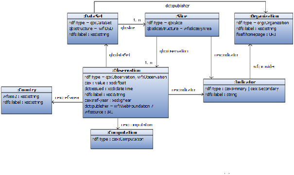
Figure 6.1: Simplified WebIndex data model.
The main concept is an observation of type
wf:Observation which has a float value
cex:value for a given indicator, as well as the country, year, and dataset.
Observations can be raw observations, which are obtained from an external source, or computed observations,
which are obtained from other observations by computational processes.
A dataset contains a number of slices, each of which also contains a number of observations.
Indicators are provided by an organization of type
org:Organization, which is based on the Organization ontology.
Datasets are also published by organizations.
A sample from the DITU dataset provided by ITU (International Telecommunication Union) states that, in 2011, Spain had a value of 23.78 for the TU-B (Broadband subscribers per 100 population) indicator. This information is represented in Turtle as:
| :obs8165 a qb:Observation, wf:Observation ; rdfs:label "ITU B in ESP" ; dct:issued "2013-05-30T09:15:00"^^xsd:dateTime ; cex:indicator :ITU_B ; qb:dataSet :DITU ; cex:value "23.78"^^xsd:float ; cex:ref-area :Spain ; cex:ref-year "2011"^^xsd:gYear ; cex:computation :comp234 . |
Data following the WebIndex data model is richly interrelated. Observations are linked to indicators and to datasets. Datasets contain links to slices. Slices have links both to indicators and back to observations. Both datasets and indicators are linked to the organizations by which they are published or made available. Such links are illustrated in the following example:
| :DITU a qb:DataSet ; qb:structure wf:DSD ; rdfs:label "ITU Dataset" ; dct:publisher :ITU ; qb:slice :ITU09B , :ITU10B, ... :ITU09B a qb:Slice ; qb:sliceStructure wf:sliceByArea ; qb:observation :obs8165, :obs8166, ... :ITU a org:Organization ; rdfs:label "ITU" ; foaf:homepage <http://www.itu.int/> . :Spain wf:iso2 "ES" ; rdfs:label "Spain" . :ITU_B a wf:SecondaryIndicator ; rdfs:label "Broadband subscribers percent"; wf:provider :ITU . |
For verification, the WebIndex data model includes a representation of computations that declare how each observation has been obtained, either from a raw dataset or computed from the observations of other datasets. The structure of computation descriptions, presented in [56], is omitted here for simplicity.
In the next section we formally define the structure of this simplified WebIndex data model using ShEx and review the main differences with the original.
The following declaration indicates that a valid
:Country shape must have exactly one
rdfs:label and exactly one
wf:iso2 both of which must be literals
of type
xsd:string. In the case of
wf:iso2 it must also have length 2.
| :Country { rdfs:label xsd:string ; wf:iso2 xsd:string LENGTH 2 } |
In this example, we deliberately omitted the requirement for a
rdf:type declaration.
This means that, in order to satisfy the
:Country shape,
a node need only have the properties that have been specified and may or may not include
rdf:type declarations.
By default, shape definitions are open
meaning that additional triples with different predicates may be present,
so nodes of shape
:Country could have other properties beyond those
prescribed by the shape.
The shape of datasets is described as follows:
| :DataSet { a [ qb:DataSet ], qb:structure [ wf:DSD ], rdfs:label xsd:string ?, qb:slice @:Slice +, dct:publisher @:Organization } |
This says that nodes conforming to
:DataSet shape must have
rdf:type with value
qb:DataSet,
a
qb:structure of
wf:DSD,
an optional
rdfs:label
of type
xsd:string,
one or more
qb:slice predicates whose object is the subject of a set of triples
matching the
:Slice shape definition and exactly one
dct:publisher,
whose object is the subject of a set of triples matching the
:Organization shape.
The
:Slice shape is defined in a similar fashion:
| :Slice { a [ qb:Slice ], qb:sliceStructure [ wf:sliceByYear ], qb:observation @:Observation+, cex:indicator @:Indicator } |
The
:Observation shape in the WebIndex data model has two
rdf:type declarations, which indicate that
they must be instances of both the RDF Data Cube class of Observation (
qb:Observation) and the
wf:Observation class from the Web Foundation ontology.
The property
dct:publisher is optional, but if it appears, it must have value
wf:WebFoundation.
Values conforming to
:Observation shape can either have a
wf:source property of type
IRI (which, in this context, is used to indicate that it is a raw observation that has been taken from the source represented by the IRI),
or a
cex:computation property whose value conforms to the
:Computation shape.
It should be noted that shapes do not define the semantics of an RDF graph.
While the designers of the WebIndex dataset model have determined that a raw observation would be indicated using the
wf:source predicate and with the object
IRI referencing the original source,
ShEx simply states that, in order for a subject to satisfy the
:Observation, it must include either a
wf:source or a
cex:computation predicate, period.
Meaning must be found elsewhere.
| :Observation { a [ qb:Observation ], a [ wi:Observation ], cex:value xsd:float, dct:issued xsd:dateTime, dct:publisher [wf:WebFoundation]?, qb:dataSet @:DataSet, cex:ref-area @:Country, cex:indicator @:Indicator, cex:ref-year xsd:gYear, ( wf:source IRI | cex:computation @:Computation ) } |
A computation is represented as a node with type
cex:Computation.
| :Computation { a [ cex:Computation ] } |
The type of indicators must be either
wf:PrimaryIndicator or
wf:SecondaryIndicator.
They must also contain the property
wf:provider with a value conforming to shape
:Organization.
| :Indicator { a [ wf:PrimaryIndicator wf:SecondaryIndicator ], wf:provider @:Organization } |
In the case of organizations, we declare these as closed shapes using the
CLOSED modifier and only allow the properties
rdfs:label,
foaf:homepage and
rdf:type, which must have the value
org:Organization.
The
EXTRA modifier is used to declare that we allow other values for the
rdf:type property (using the Turtle keyword
a).
| :Organization CLOSED EXTRA a { a [ org:Organization ], rdfs:label xsd:string, foaf:homepage IRI } |
Shape Expressions offer an intuitive way to describe the contents of linked data portals. They have been used to document both the WebIndex1 and another data portal with a similar model, the Landbook2 data portal. Their documentation defines templates for the different shapes of resources and for the triples that can be retrieved when dereferencing those resources. These templates define the dataset structure in a declarative way and can serve as a contract between developers of the data portal contents and designers of the data model. Having a good data model with a corresponding Shape Expressions specification facilitated the communication between the various stakeholders involved.
The data model described in this chapter differs from the original one for readability and didactic proposes in the following ways:
cex:Computation.
A more detailed description of computations was described at [56].
We have also simplified the representation of the webindex structure,
which was composed of sub-indexes, components and other properties such as labels and provenance information.rdf:type declaration to show that
it is possible to have nodes without that declaration.
In the original WebIndex data model all countries had a mandatory
rdf:type arc but there were several generated nodes
which did not have
rdf:type declarations.
As we omitted the representation of computations we decided to offer that possibility for countries as an example. Appendix A includes the full version of the WebIndex ShEx description used in this book.
Although the original data portal was modeled in ShEx, we undertook the exercise of defining a SHACL description for the same contents so that we could compare the expressiveness of ShEx and SHACL. In this section we present a possible encoding in SHACL.
An equivalent description in SHACL of the
:Country shape defined on
page ?? would be:
| :Country a sh:NodeShape ; sh:property [ sh:path rdfs:label ; sh:datatype xsd:string ; sh:minCount 1; sh:maxCount 1 ; ] ; sh:property [ sh:path wf:iso2 ; sh:datatype xsd:string ; sh:length 2 ; sh:minCount 1; sh:maxCount 1 ; ] . |
As can be seen, the
:Country shape is defined by two constraints which specify that the datatype of
rdfs:label and
wf:iso2 properties must be
xsd:string and that
wf:iso2 has length 2.
The default SHACL cardinality constraint is
[0..*] meaning that cardinality constraints that are omitted in ShEx grammar must be explicitly stated in SHACL as:
| sh:minCount 1; sh:maxCount 1 ; |
Optionality (
? or
* in ShEx) can be represented either by omitting
sh:minCount or by
sh:minCount=0.
An unbounded maximum cardinality (
* or
+ in ShEx) must be represented in SHACL by omitting
sh:maxCount.
As an example, the definition of the
:DataSet shape declares that
rdfs:label is optional (by omitting the
sh:minCount property) and declares that there must be one or more
qb:slice predicates conforming to the
qb:slice definition (by omitting the value of
sh:maxCount).
The predicate
sh:node is used to indicate that the value of a property must have a given shape.
In this way, a shape can refer to another shape.
Note that the WebIndex data model contains cycles—shapes refer to other shapes and those shapes can refer back to the first ones—which can generate recursive shapes.
Nevertheless, the handling of recursion in SHACL is implementation-dependent so it is necessary to circumvent this feature following some of the techniques shown in section 5.12.1).
| :DataSet a sh:NodeShape ; sh:property [ sh:path rdf:type ; sh:hasValue qb:DataSet ; sh:minCount 1; sh:maxCount 1 ; ] ; sh:property [ sh:path qb:structure ; sh:hasValue wf:DSD ; sh:minCount 1; sh:maxCount 1 ; ] ; sh:property [ sh:path rdfs:label ; sh:datatype xsd:string ; sh:maxCount 1 ; ] ; sh:property [ sh:path qb:slice ; sh:node :Slice ; sh:minCount 1 ; ] ; sh:property [ sh:path dct:publisher ; sh:node :Organization ; sh:minCount 1; sh:maxCount 1 ; ] . |
The definition of
:Slice is similar to
:DataSet, so we can omit it for clarity.
The full version of the SHACL shapes that we used in this section is shown in appendix B.
There are three items that need more explanation in the SHACL definition of the
:Observation shape.
The first of these is the repeated appearance of the
rdf:type property with two values.
Although we initially represented it using qualified value shapes, we noticed that it could also be
represented as:
| :Observation a sh:NodeShape ; sh:property [ sh:path rdf:type ; sh:in ( qb:Observation wf:Observation ) sh:property [ sh:path rdf:type ; sh:minCount 2; sh:maxCount 2 ] ; ... |
The definition of observations also contains an optional property with a fixed value. This was defined in ShEx as:
| :Observation { ... dct:publisher (wf:WebFoundation)? ... } |
which means that observations can either have a property
dct:publisher with the fixed
value
wf:WebFoundation or they can not have that property.
A possible representation in SHACL is to use an
sh:or of two shapes:
one in which there is no
dct:publisher (
sh:maxCount=0) and one with exactly one value for
dct:published.
| :Observation ... sh:or ( [ sh:path dct:publisher ; sh:maxCount 0 ] [ sh:path dct:publisher ; sh:hasValue wf:WebFoundation ; sh:minCount 1 ; sh:maxCount 1 ] ) ... |
The last item requiring additional explanation is the disjunction definition which says that observations
must have either the property
cex:computation with a value of shape
:Computation or the property
wf:source with an IRI value, but not both.
In ShEx, it was defined as:
| :Observation { ... , ( cex:computation @:Computation | wf:source IRI ) ... } |
In SHACL, this declaration can be defined using the
sh:xone (exactly one) property constraint:
| :Observation ... sh:xone ( [ sh:path wf:source ; sh:nodeKind sh:IRI ; sh:minCount 1; sh:maxCount 1 ; ] [ sh:path cex:computation ; sh:node :Computation ; sh:minCount 1; sh:maxCount 1 ; ] ) ... |
In the case of indicators we can see again the separation between the
:Indicator shape and
the
wf:PrimaryIndicator and
wf:SecondaryIndicator classes.
| :Indicator a sh:NodeShape ; sh:property [ sh:path rdf:type ; sh:in ( wf:PrimaryIndicator wf:SecondaryIndicator ) ; sh:minCount 1; sh:maxCount 1 ; ] ; ... |
We defined organizations as closed shapes with the possibility that the
rdf:type property has some extra values apart from the
org:Organization.
This constraint can be expressed in SHACL as:
| :Organization a sh:NodeShape ; sh:closed true ; sh:ignoredProperties ( rdf:type ) sh:property [ sh:path rdf:type ; sh:hasValue org:Organization ; ] ; ... |
An important aspect that deserves some explanation is the use of recursion to represent cyclic data models. While ShEx can define cyclic data models in a natural way, the lack of recursion in SHACL needs to be circumvented.
One possibility is to add a discriminating
rdf:type arc to every node so that its shape can be associated to its class.
We opted to add a
sh:targetClass declaration to some shapes, such as
:Observation, conflating that shape
with the class
qb:Observation. Any node that contains a
rdf:type arc pointing to
qb:Observation must conform
to the
:Observation shape declared by the WebIndex.
While this approach may be reasonable in closed contexts, it can cause problems in the open semantic web if one combines data from other datasets.
For example, we defined another data model based on RDF data cube for the LandPortal project3
which also contained values of type
qb:Observation but with different structures.
We consider that forcing every node of type
qb:Observation to have the same structure is not a good practice and that it may be better to separate the target declarations from the shapes definitions.
Fast Healthcase Interoperability Resources (FHIR)4 is a framework created by HL7, a clinical standards organization, to define data formats and APIs for exchanging electronic health records. FHIR Release 3.0 was published in March 2017 and adds support for RDF.
FHIR has a resource-oriented architecture that describes the different entities involved in a clinical record.
In a typical example, a patient (
Patient resource) visits a clinician (
Practitioner resource), who records some observations (
Observation resource), reviews some lab results (
Diagnostic results probably referencing other observations) and diagnoses a clinical issue (
Condition resource).
These resources can be expressed interchangeably in multiple formats:
JSON, XML, and RDF.
FHIR resources are described by structure definitions in a FHIR-specific schema language. This machine-readable language is translated into format-specific schema languages such as XML Schema plus Schematron, JSON Schema, and ShEx.
The structure of FHIR resources is documented as machine-generated HTML tables.
Figure 6.2 shows part of the FHIR
Observation resource5.
FHIR structure definitions have two forms of limited disjunction.
The first, choices of the types of referenced resources, can be seen in
subject and
performer in Figure 6.2.
The second is a choice between a set of datatypes where the name of the datatype is appended to the property name, indicated by the
[x] notation
(see
effective[x] and
value[x] in Figure 6.2).
These are captured in ShEx using the shape expression ShapeOr (’
OR’) and the triple expression OneOf (’
|’) respectively:
| <Observation> CLOSED { a [fhir:Observation]; obs:status @<code> AND {fhir:value @fhirvs:observation-status}; obs:code @<CodeableConcept>; obs:subject ( @<PatientReference> OR @<GroupReference> OR @<DeviceReference> OR @<LocationReference> )?; ( obs:effectiveDateTime @<dateTime> | obs:effectiveTiming @<Timing> )?; obs:issued @<instant>?; obs:performer ( @<PractitionerReference> OR @<OrganizationReference> OR @<PatientReference> OR @<RelatedPersonReference> )*; ( obs:valueQuantity @<Quantity> | obs:valueCodeableConcept @<CodeableConcept> | obs:valueDateTime @<dateTime> | obs:valuePeriod @<Period> )?; obs:bodySite @<CodeableConcept>?; } fhirvs:observation-status ["registered" "preliminary" "final" "amended" ] |

Figure 6.2: Part of Observation resource in FHIR.
The definition of the RDF representation of FHIR was greatly simplified because FHIR was designed to be resource-oriented. While clinical records are not expected to end up on the web, the REST architecture was an easy way to implement addressability and separation of concerns.
This means that FHIR resources are interlinked in a fashion that is already familiar to users of Linked Data.
For example, the
Observation excerpt includes references for the
subject and
performer.
The
subject may be a resource of type
Patient,
Group,
Device or
Location, and the
performer may be a
Practitioner,
Organization,
Patient, or a
RelatedPerson (see Figure 6.2).
While Linked Data is most commonly associated with RDF, these constraints apply equally to the XML and JSON representations of FHIR.
However, of the four schema languages used to validate FHIR, only ShEx validation spans resources.
There are several reasons why one might want to limit validation to a single document: other resources might not be available or relevant and it may be impractical either computationally or procedurally to test conformance of many resources at once. However, a common use case for Linked Data is that all related data is addressable and available. Extending our schema to include verification of external referents allows us to ensure that a resource is coherent not only on its own but also when used in the context of the resources to which it is linked.
The FHIR-specific schemas are expressed as combinations of structure definitions describing types and containership, and constraints.
Most constraints are co-existence constraints, e.g.,
if there is a
duration there must be a
durationUnits.
For XML, structure definitions are expressed as XML Schema, and co-existence constraints are expressed, where possible, in Schematron.
For RDF, structure definitions and coexistence constraints are both expressed in ShEx.
An example with co-existence constraints is the representation of the
Timing datatype, which represents an event that may occur multiple times.
A Timing schedule can be a list of events and/or criteria for when the event happens,
which can be expressed in a structured form and/or as a code. Figure 6.2.2 shows the HTML representation of
Timing.
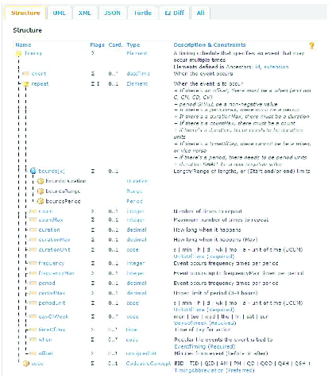
Figure 6.3: Complete Timing datatype in FHIR.
While these human-friendly HTML representations are generated from the FHIR schema, they could easily be generated from representations in other schema languages such as XML Schema, ShEx or SHACL. Schemas using more expressivity may be difficult to convey graphically to users. For instance, these property trees do not have a way to assert co-existence constraints, e.g. that certain properties are mutually exclusive. In a UML stack, these sorts of constraints would be expressed using OCL (see section 3.1.1).
The ShEx representation of
Timing is defined as:
| PREFIX : <http://hl7.org/fhir/Timing.> PREFIX fhirvs: <http://hl7.org/fhir/ValueSet/> BASE <http://hl7.org/fhir/shape/> <Timing> CLOSED { :event @<dateTime>*; :repeat @<Timing.repeat>?; :code @<CodeableConcept>?; } |
where
Timing.repeat shape contains two parts: a structure definition (lines 1–24) and several co-existence constraints (lines 25–35) which can be expressed in natural language as:
duration, there needs to be
durationUnits.
period, there needs to be
periodUnits.
duration shall be a non-negative value.
period shall be a non-negative value.
periodMax, there must be a
period.
durationMax, there must be a
duration.
countMax, there must be a
count.
offset, there must be a
when (and not
C,
CM,
CD,
CV).
timeOfDay, there cannot be a when, or vice versa.
| <Timing.repeat> CLOSED { ( :repeat.boundsDuration @<Duration> | :repeat.boundsRange @<Range> | :repeat.boundsPeriod @<Period> )?; :repeat.count @<integer>?; :repeat.countMax @<integer>?; :repeat.duration @<decimal>?; :repeat.durationMax @<decimal>?; :repeat.durationUnit @<code> AND { fhir:value @fhirvs:units-of-time }?; :repeat.frequency @<integer>?; :repeat.frequencyMax @<integer>?; :repeat.period @<decimal>?; :repeat.periodMax @<decimal>?; :repeat.periodUnit @<code> AND { fhir:value @fhirvs:units-of-time }?; :repeat.dayOfWeek @<code> AND { fhir:value @fhirvs:days-of-week }*; :repeat.timeOfDay @<time>*; :repeat.when @<code> AND { fhir:value @fhirvs:event-timing }*; :repeat.offset @<unsignedInt>?; } AND {(:repeat.duration .; :repeat.durationUnits .)? } AND {(:repeat.period . ; :repeat.periodUnits .)? } AND {:repeat.duration MinInclusive 0 ? } AND {:repeat.period MinInclusive 0 ? } AND {(:repeat.periodMax . ; :repeat.period . )? } AND {(:repeat.durationMax . ; :repeat.duration .)? } AND {(:repeat.countMax . ; :repeat.count .)? } AND { :repeat.offset . ; :repeat.when [. - "C" - "CM" - "CD" - "CV"] | :repeat.when . ? # if there is no offset there can still be a when } AND {:repeat.timeOfDay . | :repeat.when . } |
The value set idiom of specifying a value type and a value set (e.g.,
<code> and
fhirvs:units-of-time) allows one to specify the structure and also to specify values within that structure.
The FHIR/RDF group, a joint undertaking of W3C and HL7, used ShEx not only to define the final product but also to describe intermediate ideas and test them against example data. To this end, members of the group learned ShEx to streamline the process with concrete, testable proposals. During the development and deployment of version 3 of FHIR, Harold Solbrig (Mayo Clinic) implemented a pipeline to test shapes against FHIR example data, catching errors in both the examples and the ShEx schema.
Because the agile FHIR standardization process is centered around the maintenance of FHIR resource structure definitions, the ShEx for FHIR is generated from these definitions. The easy way to do this is to generate ShExJ (the JSON representation) but because the FHIR group wanted these to be appealing to readers, they were transformed into ShExC, making specific white space decisions in the process. These ShExC representations could then be parsed to the abstract syntax to be tested against the reference ShExJ schemas. The latter transformation was simpler and less error prone as it is involved only with the direct semantics.
Because electronic medical records use a consistent template to represent most clinical data, they rely heavily on generic properties.
These properties may be used multiple times with different constraints.
A simple example of this is a blood pressure, which actually consists of two measurements: systolic (pressure during heart beat) and diastolic (pressure between heart beats).
Both of these measurements are connected to the blood pressure measurement by a
fhir:Observation.component
property.
A
<blood-pressure> shape can be defined in ShEx as:
| <blood-pressure> { a [fhir:Observation]; fhir:Observation.component { fhir:Observation.component.code { fhir:CodeableConcept.coding { a [loinc:8480-6] ; # systolic } } ; fhir:Observation.component.valueQuantity { fhir:Quantity.value { fhir:value xsd:decimal }; fhir:Quantity.unit { fhir:value ["mmHg"] }; } } ; fhir:Observation.component { fhir:Observation.component.code { fhir:CodeableConcept.coding { a [loinc:8462-4] ; # diastolic } }; fhir:Observation.component.valueQuantity { fhir:Quantity.value { fhir:value xsd:decimal }; fhir:Quantity.unit { fhir:value ["mmHg"] }; } } } |
and an example data conforming to that shape can be:
| <http://hl7.org/fhir/Observation/blood-pressure> a fhir:Observation; # Passes as a <blood-pressure> fhir:Observation.component [ fhir:Observation.component.code [ fhir:CodeableConcept.coding [ a loinc:8480-6; # systolic ] ]; fhir:Observation.component.valueQuantity [ fhir:Quantity.value [ fhir:value "107"^^xsd:decimal ]; fhir:Quantity.unit [ fhir:value "mmHg" ]; ] ], [ fhir:Observation.component.code [ fhir:CodeableConcept.coding [ a loinc:8462-4; # diastolic ] ]; fhir:Observation.component.valueQuantity [ fhir:Quantity.value [ fhir:value "60"^^xsd:decimal ]; fhir:Quantity.unit [ fhir:value "mmHg" ]; ] ] . |
This example is long, but it is taken directly from a use case.
In fact, its length encourages us to do a bit of factoring.
While we want to keep constraints on the codes for systolic and diastolic, we can create a separate
<valueObs> shape to capture the quantity measurement.
| PREFIX fhir: <http://hl7.org/fhir/> PREFIX loinc: <http://loinc.org/owl#> PREFIX owl: <http://www.w3.org/2002/07/owl#> PREFIX rdfs: <http://www.w3.org/2000/01/rdf-schema#> PREFIX sct: <http://snomed.info/id/> PREFIX xsd: <http://www.w3.org/2001/XMLSchema#> BASE <http://hl7.org/fhir/shape/> <blood-pressure> { a [fhir:Observation]; fhir:Observation.component @<valueObs> AND { fhir:Observation.component.code { fhir:CodeableConcept.coding { a [loinc:8480-6] ; # systolic } } } ; fhir:Observation.component @<valueObs> AND { fhir:Observation.component.code { fhir:CodeableConcept.coding { a [loinc:8462-4] ; # diastolic } } } } <valueObs> { fhir:Observation.component.valueQuantity { fhir:Quantity.value { fhir:value xsd:decimal }; fhir:Quantity.unit { fhir:value ["mmHg"] }; } } |
This schema has two repeated properties:
fhir:Observation.component with different constraints (one for systolic and the other for diastolic). It takes advantage of ShEx’s intuitive additive semantics where requirements for repeated properties
are simply expressed as additional triple patterns (see section 4.6.7).
Springer Nature SciGraph8 is a new Linked Open Data platform aggregating data sources from Springer Nature and key partners from the scholarly domain. The platform currently collates information from across the research landscape, such as funders, research projects, conferences, affiliations, and publications (books and journals). This high-quality data from trusted and reliable sources provides a rich semantic description of how information is related, as well as enabling innovative visualizations of the scholarly domain.
Data quality is a key component in SciGraph. In earlier work, SPIN was used in various validation scenarios. However, SPIN was hard to maintain and to read by non-experts and SHACL was chosen instead. SHACL is now used to validate data before the data enters the main triplestore. SHACL is also used to specify which classes and properties can be published from the triplestore.
All of the SHACL shapes used in building public datasets of Springer Nature SciGraph are published in a Github repository.9 There are shapes that define the RDF structure of all SciGraph entity types such as articles, grants, and journals.
The following snippet of the
Article shape says that all SHACL instances of
sg:Article must have
exactly one
sg:scigraphId that is a string,
at most one value for
sg:doi,
a string following a specific pattern and at most one value for
sg:role that can be one of:author, editor or principal investigator.
| :Article a sh:NodeShape ; sh:targetClass sg:Article ; rdfs:label "RDF shape for the sg:Article model" ; # Identity sh:property [ sh:path sg:scigraphId ; sh:datatype xsd:string ; sh:minCount 1 ; sh:maxCount 1 ; ] ; sh:property [ sh:path sg:doi ; sh:datatype xsd:string ; sh:pattern "^10\\.\\d{4,5}\\/\\S+$" ; sh:maxCount 1 ; ] ; # ... sh:property [ sh:path sg:role ; sh:in ( "author" "editor" "principal investigator" ) ; sh:maxCount 1 ; ] ; |
DBpedia10 ([60]) is a crowdsourced community effort to extract structured information from Wikipedia and make this information available on the Web. DBpedia data is available as RDF dumps, through a linked data interface and a SPARQL endpoint. The current DBpedia release (version 2016-0411) provides circa 9.5 billion RDF triples.
Validating such large amounts of RDF data is a challenging task, and various methods have been applied. At the time of writing, the core validation of DBpedia is performed with neither ShEx nor SHACL. However, it is worth mentioning some approaches that work on large and noisy datasets.
One of the core sources of validation for DBpedia is the DBpedia ontology. The DBpedia ontology is crowdsourced and maintained by the community on the http://mappings.dbpedia.org wiki. At the time of writing, the ontology consists of circa 750 classes, organized in a hierarchy, and 2,600 properties. The community can define class disjoint statements and for properties, axioms such as domain, range, literal datatypes, and functional properties. The DBpedia ontology both drives the correct extraction of RDF triples from Wikipedia pages and is used in post-processing steps to remove data violations.
The DBpedia extraction framework has many extractors that parse different parts of a Wikipedia page and generate RDF triples.
The Mapping-based extractor is a special extractor that focuses on high-quality extraction from Wikipedia infoboxes.
To achieve this it uses the DBpedia ontology and the community-maintained infobox-to-ontology mappings.
Each infobox mapping maps a Wikipedia infobox template to a DBpedia class and each infobox template parameter to a property mapping (see [60, sec. 2.4]) .
At extraction time, each property mapping is associated with a different parser, according to the
rdfs:range of the DBpedia property of each property mapping.
For example, if the range of a property is defined as an
xsd:date (e.g.
dbo:birthDate), property mappings with this property generate a value only if the value can be parsed as a date.
As a post-processing step, the RDFS and OWL axioms defined in the DBpedia ontology are used to further clean up the extracted data.
A common approach is to run RDFUnit on the data and get back detailed violation reports.
These reports are used to identify common sources of error that can be planned for fixing.
Another approach is a set of scripts that parse facts and, depending on the conformance of a fact to a set of axioms (e.g.,
rdfs:domain,
rdfs:range,
owl:disjointWith, etc)
dispatches the facts to different dataset buckets before publishing.
A very common way to generate RDF data is through a mapping document. In a general case, a mapping document contains rules that can be used to transform input data to RDF. The mapping rules can be encoded in a script (e.g., using XSLT), in code, or formulated in mapping languages such as R2RML [28] and RML [30].
A single error in the mapping document can, in many cases, be propagated to many errors on the generated instance data,
and the number of errors is usually proportional to the input size.
Consider for example a mapping document that generates person data and represents the age of a person with the property
foaf:age and the value as
xsd:double instead of
xsd:integer.
Every person instance in the generated RDF will have a violation for the datatype of
foaf:age.
Fixing such errors in the mapping document is an easy task, but
once the data is generated the task becomes harder, especially on big datasets.
Dimou et al. [31] propose a workflow for including quality assessment of the mappings in the general dataset quality assessment workflow. The authors use the dataset schema information (i.e., ontologies) to identify schema errors of the dataset directly from an RML mapping document. The results illustrate that violations such as domain and range, mistyped datatypes, class and property disjointness, and the like can be identified directly from the mapping document. Evaluation of this work indicates that fixing errors directly in the mapping document is more efficient. For example, in the case of DBpedia, an automatic quality assessment of the mappings took less than a minute while the complete dataset validation took more than 16 hours.
However, the mapping quality assessment of the mappings cannot identify all possible schema errors in the target dataset. Some constraints, such as cardinality, can only be identified on the target dataset.
Even though this approach currently works with OWL and RDFS, it would be an easy exercise to extend it to SHACL or ShEx. Given a set of mappings and a set of Shapes, one could identify incompatibilities directly from the mapping document.
DBpedia promotes Github for accepting link contributions from the DBpedia community12 and, recently, there has been an effort to automate the link verification process (see [32, Section 3.3]). This has put into place a set of quality checks that validate various aspects of the link submission and is integrated with common continuous integration services, such as Travis CI.
This approach enables instant checks on pull requests and reports problems to the submitter. In addition to scripts that check for instance valid RDF files, there is a script that checks if the link manifest file conforms to the following SHACL schema.13
| dbp:LinkManifest a sh:NodeShape ; sh:targetClass void:Linkset ; sh:property [ sh:path dc:author ; sh:minCount 1; sh:nodeKind sh:IRI ; ] ; sh:property [ sh:path dct:description ; sh:minCount 1; sh:nodeKind sh:Literal ; sh:datatype xsd:string ; ] ; sh:property [ sh:path dct:license ; sh:minCount 1; sh:nodeKind sh:IRI ; ] ; sh:property [ sh:path dbp:script ; sh:maxCount 1; sh:nodeKind sh:IRI ; ] ; sh:property [ sh:path dbp:linkConf ; sh:maxCount 1; sh:nodeKind sh:IRI ; ] ; sh:property [ sh:path dbp:ntriplefilelocation ; sh:maxCount 1; sh:nodeKind sh:IRI ; ] ; sh:property [ sh:path dbp:endpoint ; sh:maxCount 1; sh:nodeKind sh:IRI ; ] ; sh:property [ sh:path dbp:constructQuery ; sh:maxCount 1; sh:nodeKind sh:Literal ; sh:datatype xsd:string ; ] ; sh:property [ sh:path dbp:approvedPatch ; sh:nodeKind sh:IRI ; ] ; sh:property [ sh:path dbp:optionalPatch ; sh:nodeKind sh:IRI ; ] ; sh:property [ sh:path dbp:updateFrequencyInDays ; sh:maxCount 1; sh:nodeKind sh:Literal ; sh:datatype xsd:integer ; ] ; |
The defined quality checks cannot capture all possible errors in a link submission process. However, they can (a) provide a very useful feedback to the link submitter, and (b) enable DBpedia to automatically pre-process some steps in the link generation pipeline.
The DBpedia ontology has been maintained by the DBpedia community in a crowdsourced manner at the http://mappings.dbpedia.org wiki. There is an ongoing effort to move ontology development onto Github for easier collaboration and for the sake of more control over the ontology structure. 14 At the time of writing, the following constraints are defined to ensure that each DBpedia class and each DBpedia property conform to DBpedia community requirements:
rdfs:label and at least one
rdfs:comment that are of
rdf:langString datatype with unique language.
rdfs:domain.
rdfs:range.
owl:Class.
These constraints are implemented with the following SHACL definitions. RDFUnit is used to perform the validation as well as integrate with Travis CI and automate the checks on each commit and pull request.
| dbo-shape:ClassShape a sh:Shape ; sh:targetClass owl:Class ; sh:targetSubjectsOf rdfs:subClassOf ; sh:severity sh:Error ; sh:property [ sh:message "Each owl:Class should have at least one rdfs:label" ; sh:path rdfs:label ; sh:minCount 1; sh:dataType rdf:langString; sh:uniqueLang true ; ] ; sh:property [ sh:message "Each owl:Class should have at least one rdfs:comment" ; sh:path rdfs:comment ; sh:minCount 1; sh:dataType rdf:langString; sh:uniqueLang true ; ] ; sh:property [ sh:message "Each owl:Class should have at most one superclass" ; sh:path rdfs:subClassOf ; sh:maxCount 1; ] ; sh:sparql [ sh:message "DBpedia Ontology only allows 9 top level classes, any new top level classes need to be discussed" ; sh:severity sh:Warning ; sh:select """ PREFIX owl: <http://www.w3.org/2002/07/owl#> PREFIX rdfs: <http://www.w3.org/2000/01/rdf-schema#> SELECT DISTINCT $this ?otherClass WHERE { $this rdfs:subClassOf owl:Thing . FILTER($this NOT IN ( <http://dbpedia.org/ontology/Activity>, <http://dbpedia.org/ontology/Agent>, <http://dbpedia.org/ontology/Concept>, <http://dbpedia.org/ontology/CommunicationSystem>, <http://dbpedia.org/ontology/Condition>, <http://dbpedia.org/ontology/Event>, <http://dbpedia.org/ontology/PhysicalThing>, <http://dbpedia.org/ontology/Place>, <http://dbpedia.org/ontology/TimePeriod>) ). } """ ; ] . dbo-shape:PropertyShape a sh:Shape ; sh:targetClass rdf:Property ; sh:targetClass owl:DatatypeProperty ; sh:targetClass owl:ObjectProperty ; sh:targetSubjectsOf rdfs:subPropertyOf ; sh:property [ sh:message "Each property should have at least one rdfs:label" ; sh:path rdfs:label ; sh:minCount 1; sh:dataType rdf:langString; sh:uniqueLang true ; ] ; sh:property [ sh:message "Each property should have at least one rdfs:comment" ; sh:path rdfs:comment ; sh:minCount 1; sh:dataType rdf:langString; sh:uniqueLang true ; ] ; sh:property [ sh:message "Each property should have at most one rdfs:domain" ; sh:path rdfs:domain ; sh:maxCount 1; ] ; sh:property [ sh:message "Each property should have an rdfs:domain that is defined as an owl:Class" ; sh:path rdfs:domain ; sh:class owl:Class; ] ; sh:property [ sh:message "Each property should have at most one rdfs:range" ; sh:path rdfs:range ; sh:maxCount 1; ] ; sh:property [ sh:message "Each property should have an rdfs:range that is defined as an owl:Class" ; sh:path rdfs:range ; sh:class owl:Class; ] ; sh:property [ sh:message "Each property should have at most one super property" ; sh:path rdfs:subPropertyOf ; sh:maxCount 1; ] . |
An interesting part of this use case is the use of SHACL-SPARQL to define the complex constraint Top-level DBpedia classes must be discussed before defined.
Here, only nine specific classes are allowed as top-level classes (i.e. classes with no superclass except
owl:Thing) and are hard-coded in the SPARQL query.
Even though this creates a tight coupling of the shape to the data, top-level DBpedia classes are not changing frequently and adjusting the constraint can indeed stimulate discussion.
Given that one serialization format for ShEx is RDF, it is possible to use ShEx to validate itself, i.e., to validate RDF graphs representing ShEx schemas. The RDF serialization representation of ShEx is called ShExR.
The following example contains a simple ShEx schema using ShExR in Turtle:
| <> a sx:Schema ; sx:shapes :User . :User a sx:Shape; sx:expression [ a sx:EachOf ; sx:expressions ( [ a sx:TripleConstraint ; sx:predicate schema:name ; sx:valueExpr [ a sx:NodeConstraint ; sx:datatype xsd:string ] ] [ a sx:TripleConstraint ; sx:predicate schema:gender ; sx:valueExpr [ a sx:NodeConstraint ; sx:values ( schema:Male schema:Female ) ] ] ) ] . |
In the following, we will describe the ShEx schemas that can validate RDF files in ShExR (as above). The full code is included in the annex C and has been adapted from Appendix C (ShEx shape) of the ShEx specification.15
ShExR graphs contain an RDF node with
rdf:type sx:Schema,
an optional list of starting semantic actions,
a start declaration and zero or more
sx:shapes declarations whose values
must be shape expressions
<ShapeExpr>.
Most of the shapes in this schema are defined as
CLOSED to limit the appearance of unexpected triples.
| <Schema> CLOSED { a [sx:Schema] ; sx:startActs @<SemActList1Plus>? ; sx:start @<ShapeExpr>?; sx:shapes @<ShapeExpr>* } |
As discussed in Section 4.4.3, there are six possibilities for defining shape expressions. Which can be enumerated as:
| <ShapeExpr> @<ShapeOr> OR @<ShapeAnd> OR @<ShapeNot> OR @<NodeConstraint> OR @<Shape> OR @<ShapeExternal> |
<ShapeOr> and
<ShapeAnd> have a similar representation which contains a list of at least two shape expressions
represented by the
<shapeExprList2Plus> shape, which will be described later.
| <ShapeOr> CLOSED { a [sx:ShapeOr] ; sx:shapeExprs @<shapeExprList2Plus> } <ShapeAnd> CLOSED { a [sx:ShapeAnd] ; sx:shapeExprs @<shapeExprList2Plus> } |
<ShapeNot> contains a shape expression:
| <ShapeNot> CLOSED { a [sx:ShapeNot] ; sx:shapeExpr @<shapeExpr> } |
The following code represents lists of shape expressions.
<shapeExprList2Plus is a list of at least two shape expressions, and
<shapeExprList1Plus> is a list of at least one.
| <shapeExprList2Plus> CLOSED { rdf:first @<shapeExpr> ; rdf:rest @<shapeExprList1Plus> } <shapeExprList1Plus> CLOSED { rdf:first @<shapeExpr> ; rdf:rest [rdf:nil] OR @<shapeExprList1Plus> } |
Node constraints are formed by one or more declarations of node kind, datatype, string facet, numeric facet, or a list of possible values.
| <NodeConstraint> CLOSED { a [sx:NodeConstraint] ; ( sx:nodeKind [sx:iri sx:bnode sx:literal sx:nonliteral] | sx:datatype IRI | &<stringFacet> | &<numericFacet> | sx:values @<valueSetValueList1Plus> )+ } |
A shape can contain the Boolean directives
sx:closed and
sx:extra as well as a
sx:tripleExpression and an optional list of semantic actions.
| <Shape> CLOSED { a [sx:Shape] ; sx:closed [true false]? ; sx:extra IRI* ; sx:expression @<tripleExpression>? ; sx:semActs @<SemActList1Plus>? ; } |
External shapes only contain a type declaration.
| <ShapeExternal> CLOSED { a [sx:ShapeExternal] ; } |
Semantic actions contain a
sx:name that points to an IRI describing the processor and a
sx:code value with the string code that will be passed to that processor.
| <SemAct> CLOSED { a [sx:SemAct] ; sx:name IRI ; sx:code xsd:string? } |
Annotations contain a predicate (which must be an IRI) and an object.
| <Annotation> CLOSED { a [sx:Annotation] ; sx:predicate IRI ; sx:object @<objectValue> } |
String and numeric facets just enumerate the different possibilities:
| <stringFacet> { sx:length xsd:integer | sx:minlength xsd:integer | sx:maxlength xsd:integer | sx:pattern xsd:string } <numericFacet> { sx:mininclusive @<numericLiteral> | sx:minexclusive @<numericLiteral> | sx:maxinclusive @<numericLiteral> | sx:maxexclusive @<numericLiteral> | sx:totaldigits xsd:integer | sx:fractiondigits xsd:integer } <numericLiteral> xsd:integer OR xsd:decimal OR xsd:double |
The values that can appear in a value set are object values, stems, or ranges:
| <valueSetValue> @<objectValue> OR @<IriStem> OR @<IriStemRange> OR @<LiteralStem> OR @<LiteralStemRange> OR @<LanguageStem> OR @<LanguageStemRange> |
Object values can be IRIs or literals:
| <objectValue> IRI OR LITERAL |
Stems and ranges are defined for the different possibilities: IRIs, literals, or language-tagged literals.
| <IriStem> CLOSED { a [sx:IriStem]; sx:stem xsd:anyUri } <IriStemRange> CLOSED { a [sx:IriStemRange]; sx:stem xsd:anyUri OR @<Wildcard>; sx:exclusion @<objectValue> OR @<IriStem>* } <LiteralStem> CLOSED { a [sx:LiteralStem]; sx:stem xsd:string } <LiteralStemRange> CLOSED { a [sx:LiteralStemRange]; sx:stem xsd:string OR @<Wildcard>; sx:exclusion @<objectValue> OR @<LiteralStem>* } <LanguageStem> CLOSED { a [sx:LanguageStem]; sx:stem xsd:string } <LanguageStemRange> CLOSED { a [sx:LanguageStemRange]; sx:stem xsd:string OR @<Wildcard>; sx:exclusion @<objectValue> OR @<LanguageStem>* } <Wildcard> BNODE CLOSED { a [sx:Wildcard] } |
A triple expression is either a triple constraint, an inclusion of another shape expression of a composed triple expression made from
<OneOf> or
<EachOf>.
| <tripleExpression> @<TripleConstraint> OR @<OneOf> OR @<EachOf> OR @<Inclusion> |
The definition of
<OneOf> and
<EachOf> is very similar:
they contain
sx:min and
sx:max cardinalities.
a list of at least two triple expressions,
and optional list of semantic actions and a list of annotations.
| <OneOf> CLOSED { a [sx:OneOf] ; sx:min xsd:integer? ; sx:max xsd:integer? ; sx:expressions @<tripleExpressionList2Plus> ; sx:semActs @<SemActList1Plus>? ; sx:annotation @<Annotation>* } <EachOf> CLOSED { a [sx:EachOf] ; sx:min xsd:integer? ; sx:max xsd:integer? ; sx:expressions @<tripleExpressionList2Plus> ; sx:semActs @<SemActList1Plus>? ; sx:annotation @<Annotation>* } |
<tripleExpressionList2Plus> declares a list of at least two triple expressions.
| <tripleExpressionList2Plus> CLOSED { rdf:first @<tripleExpression> ; rdf:rest @<tripleExpressionList1Plus> } <tripleExpressionList1Plus> CLOSED { rdf:first @<tripleExpression> ; rdf:rest [rdf:nil] OR @<tripleExpressionList1Plus> } |
A
<tripleConstraint> contains a mandatory
sx:predicate property, an optional value expression, the cardinality declarations
sx:min and
sx:max, the
sx:inverse and
sx:negated qualifiers and the semantic actions and annotations.
| <TripleConstraint> CLOSED { a [sx:TripleConstraint] ; sx:inverse [true false]? ; sx:negated [true false]? ; sx:min xsd:integer? ; sx:max xsd:integer? ; sx:predicate IRI ; sx:valueExpr @<shapeExpr>? ; sx:semActs @<SemActList1Plus>? ; sx:annotation @<Annotation>* } |
An inclusion has a predicate
sx:include that points to an IRI or a blank node (non-literals).
| <Inclusion> CLOSED { a [sx:Inclusion]? ; sx:include NONLITERAL } |
The following definitions declare lists of at least one element: semantic actions or value set values.
| <SemActList1Plus> CLOSED { rdf:first @<SemAct> ; rdf:rest [rdf:nil] OR @<SemActList1Plus> } <valueSetValueList1Plus> CLOSED { rdf:first @<valueSetValue> ; rdf:rest [rdf:nil] OR @<valueSetValueList1Plus> } |
In this section we describe how to use SHACL to validate Shapes graphs that contain SHACL code. This is similar to what we described in the previous section although in this case we are using SHACL to validate SHACL. The full code described in this section appears in Appendix D and has been adapted from Appendix C of the SHACL specification. We have done some modifications to the original code for readability.
The document declares the shape of shapes
:ShapeShape as a
sh:NodeShape that contains a long list of target declarations to define the nodes that must be validated as shapes.
| sh:targetClass sh:NodeShape, sh:PropertyShape ; sh:targetSubjectsOf sh:targetClass, sh:targetNode, sh:targetObjectsOf, sh:targetSubjectsOf , sh:and, sh:class, sh:closed, sh:datatype, sh:disjoint, sh:equals, sh:flags, sh:hasValue, ... # All the other constraint component parameters sh:targetObjectsOf sh:node, sh:not, sh:property sh:qualifiedValueShape . |
It declares that every node that is an instance of
sh:NodeShape or
sh:PropertyShape
must conform to
:ShapeShape
and that the subjects of properties
sh:targetClass,
sh:targetNode, …must also conform to
:ShapeShape
as well as the objects of
sh:node,
sh:not,
sh:property,
and
sh:qualifiedValueShape.
The next statement declares that nodes conforming to shapes,
must conform to one of
:NodeShapeShape or
:PropertyShapeShape.
| :ShapeShape sh:xone ( :NodeShapeShape :PropertyShapeShape ) ; |
The following statements declare the types of values that can be associated with target declarations.
| :ShapeShape sh:property [ sh:path sh:targetNode ; sh:nodeKind sh:IRIOrLiteral ; ] ; sh:property [ sh:path sh:targetClass ; sh:nodeKind sh:IRI ; ] ; sh:property [ sh:path sh:targetSubjectsOf ; sh:nodeKind sh:IRI ; ] ; sh:property [ sh:path sh:targetObjectsOf ; sh:nodeKind sh:IRI ; ] ; ... |
In the same way, it declares the values that can have the different constraint components.
| :ShapeShape sh:property [ sh:path sh:severity ; sh:maxCount 1 ; sh:nodeKind sh:IRI ; ] ; sh:property [ sh:path sh:deactivated ; sh:maxCount 1 ; sh:in ( true false ) ; ] ; sh:property [ sh:path sh:and ; sh:node :ListShape ; ] ; sh:property [ sh:path sh:class ; sh:nodeKind sh:IRI ; ] ; ... |
We omit the full list of declarations as all of them follow the same style.
They declare the expected value of each predicate. For example, in the last case,
that the predicate
sh:class can have an IRI as value.
A remarkable aspect is the following declaration:
| :ShapeShape sh:or ( [ sh:not [ sh:class rdfs:Class ; sh:or ( [ sh:class sh:NodeShape ] [ sh:class sh:PropertyShape ] ) ] ] [ sh:nodeKind sh:IRI ] ). |
It represents a syntax rule of implicit class targets
(see Section 5.7.3) by which a NodeShape or PropertyShape that are also instances of
rdfs:Class must be IRIs.
This is an example of an
IF-THEN pattern (see Section 5.11.5) and could be defined in pseudo-code as:
| IF (sh:class rdfs:Class AND (sh:class sh:NodeShape OR sh:class sh:PropertyShape) ) THEN sh:nodeKind sh:IRI |
Another interesting declaration is:
| sh:path sh:message ; sh:or ( [ sh:datatype xsd:string ] [ sh:datatype rdf:langString ] ) ; ] . |
which declares that messages can be any string literal or languages tagged string literal, which is a common pattern for messages that admit not only plain string literals but multilingual ones.
Another aspect that can be remarked is the use of
:ListShape as the value of several predicates like
sh:and,
sh:or,
sh:in,
sh:ignoredProperties, and
sh:xone.
The declarations are done as:
| sh:path sh:and ; sh:node :ListShape ; ] ; sh:property [ sh:path sh:or ; sh:node :ListShape ; ] ; # ... similar for the other predicates . |
The meaning is that the values of those predicates must be well-formed RDF lists (see Section 2.2).
An RDF list is a collection of values linked by the
rdf:rest predicate whose last value is
rdf:nil.
Each node in the list must contain exactly one value of
rdf:first.
The declaration of
:ListShape is defined as:
| sh:property [ sh:path [ sh:zeroOrMorePath rdf:rest ] ; sh:hasValue rdf:nil ; sh:node :ListNodeShape ; ] . |
which means that all the nodes are linked by the predicate
rdf:rest zero or more times, and that those nodes must conform to
:ListNodeShape which is defined as:
| sh:or ( [ sh:hasValue rdf:nil ; sh:property [ sh:path rdf:first ; sh:maxCount 0 ] ; sh:property [ sh:path rdf:rest ; sh:maxCount 0 ] ; ] [ sh:not [ sh:hasValue rdf:nil ] ; sh:property [ sh:path rdf:first ; sh:maxCount 1 ; sh:minCount 1 ] ; sh:property [ sh:path rdf:rest ; sh:maxCount 1 ; sh:minCount 1 ] ; ]) . |
This means that a list node is either
rdf:nil, in which case it must not have any arc with predicates
rdf:first or
rdf:rest, or
a node with exactly one value for those predicates.
In this case, the pattern followed is an
IF-THEN-ELSE pattern.
In the case of
sh:ignoredProperties and
sh:languageIn,
the list nodes must also conform to some specific shape (to be an IRI or a string). This can be expressed as:
| sh:path (sh:ignoredProperties [sh:zeroOrMorePath rdf:rest] rdf:first); sh:nodeKind sh:IRI ; ]; sh:property [ sh:path (sh:languageIn [sh:zeroOrMorePath rdf:rest] rdf:first) ; sh:datatype xsd:string ; ] . |
Similarly, a constraint is established on the values of
sh:and,
sh:or and
sh:xone which must be lists of nodes conforming to
:ShapeShape. This is declared as:
| :ShapesListShape a sh:NodeShape ; sh:property [ sh:path ( [ sh:zeroOrMorePath rdf:rest ] rdf:first ) ; sh:node :ShapeShape ; ] . |
Some properties, like the
sh:path,
sh:lessThan,
sh:minCount, etc. cannot be applied to node shapes.
This constraint is declared as:
| :NodeShapeShape a sh:NodeShape ; sh:property [ sh:path sh:path ; sh:maxCount 0 ] ; sh:property [ sh:path sh:lessThan ; sh:maxCount 0 ] ; sh:property [ sh:path sh:maxCount; sh:maxCount 0 ]; ... # Similar for sh:lessThanOrEquals, sh:minCount, # sh:qualifiedValueShape and sh:uniqueLang |
Property shapes must have exactly one value for property
sh:path.
| :PropertyShapeShape a sh:NodeShape ; sh:property [ sh:path sh:path ; sh:maxCount 1 ; sh:minCount 1 ; sh:node :PathShape ] . |
The value of
sh:path must conform to
:PathShape.
The first version of
:PathShape employed recursion with the following pattern:
| :PathShape a sh:NodeShape ; sh:xone ( [ sh:nodeKind sh:IRI ] [ sh:nodeKind sh:BlankNode ; sh:node :PathListWithAtLeast2Members ; ] [ sh:nodeKind sh:BlankNode ; sh:closed true ; sh:property [ sh:path sh:alternativePath ; sh:node :PathListWithAtLeast2Members ; sh:minCount 1 ; sh:maxCount 1 ; ] ] [ sh:nodeKind sh:BlankNode ; sh:closed true ; sh:property [ sh:path sh:inversePath ; sh:node :PathShape ; # Recursive reference sh:minCount 1 ; sh:maxCount 1 ; ] ] ...# similar for sh:zeroOrMorePath, sh:oneOrMorePath # and sh:zeroOrOnePath ); . |
However, as recursion is undefined in SHACL, that definition was changed to simulate recursion using the property path
sh:zeroOrMorePath with an auxiliary shape
(see Section 5.12.1).
The new definition is:
| :PathShape a sh:NodeShape ; sh:property [ sh:path [ sh:zeroOrMorePath _:PathPath ] ; sh:node :PathNodeShape ; ] . _:PathPath sh:alternativePath ( ( [ sh:zeroOrMorePath rdf:rest ] rdf:first ) ( sh:alternativePath [ sh:zeroOrMorePath rdf:rest ] rdf:first ) sh:inversePath sh:zeroOrMorePath sh:oneOrMorePath sh:zeroOrOnePath ) . :PathNodeShape sh:xone ( [ sh:nodeKind sh:IRI ] [ sh:nodeKind sh:BlankNode ; sh:node :PathListWithAtLeast2Members ; ] [ sh:nodeKind sh:BlankNode ; sh:closed true ; sh:property [ sh:path sh:alternativePath ; sh:node :PathListWithAtLeast2Members ; sh:minCount 1 ; sh:maxCount 1 ; ] ] [ sh:nodeKind sh:BlankNode ; sh:closed true ; sh:property [ sh:path sh:inversePath ; sh:minCount 1 ; sh:maxCount 1 ; ] ] ...# similar for sh:zeroOrMorePath, sh:oneOrMorePath # and sh:zeroOrOnePath ) . |
The previous definitions use the following auxiliary shape
:PathListWithAtLeast2Members:
| :PathListWithAtLeast2Members a sh:NodeShape ; sh:node :ListShape ; sh:property [ sh:path [ sh:oneOrMorePath rdf:rest ] ; sh:minCount 2 ; # 1 other list node plus rdf:nil ] . |
The last two definitions declare that the values of
sh:shapesGraph and the values of
sh:entailment must be IRIs.
| :ShapesGraphShape a sh:NodeShape ; sh:targetObjectsOf sh:shapesGraph ; sh:nodeKind sh:IRI . :EntailmentShape a sh:NodeShape ; sh:targetObjectsOf sh:entailment ; sh:nodeKind sh:IRI . |
Observation resource is at http://hl7.org/fhir/observation.htmlIn this chapter we present a comparison between ShEx and SHACL. The technologies have similar goals and similar features. In fact at the start of the Data Shapes Working Group in 2014, convergence on a unified approach was considered possible. However, this did not happen and as of July 2017 both technologies are maintained as separate solutions.
We start by describing some of the common features that they share, followed by a review of the main differences.
ShEx and SHACL share the same goal, to have a mechanism for describing and validating RDF data using a high-level language, so there are a lot of common features that both share.
Consider the following SHACL shapes graph:
| :User a sh:NodeShape ; sh:nodeKind sh:IRI ; sh:property [ sh:path schema:name ; sh:minCount 1; sh:maxCount 1; sh:datatype xsd:string ; ] ; sh:property [ sh:path schema:gender ; sh:minCount 1; sh:maxCount 1; sh:or ( [ sh:in (schema:Male schema:Female) ] [ sh:datatype xsd:string] ) ] ; sh:property [ sh:path schema:birthDate ; sh:maxCount 1; sh:datatype xsd:date ; ] . |
This can be expressed in a ShEx schema:
| :User IRI { schema:name xsd:string ; schema:gender [schema:Male schema:Female] OR xsd:string ; schema:birthDate xsd:date ? } |
schema:name that has datatype
xsd:string,
have exactly one value for the property
schema:gender which must be one of (
schema:Male schema:Female) or a
xsd:string,
and optionally have a value for the property
schema:birthDate that has datatype
xsd:date.The following SHACL shapes graph describes that nodes that conform to
:User have one outgoing property
schema:name and one incoming property
schema:member from an organization.
| :User a sh:NodeShape ; sh:property [ sh:path schema:name ; sh:minCount 1; sh:maxCount 1; sh:datatype xsd:string ; ] ; sh:property [ sh:path [ sh:inversePath schema:member ] ; sh:minCount 1; sh:maxCount 1; sh:node :Organization; ] . :Organization a sh:NodeShape ; sh:property [ sh:path rdf:type ; sh:minCount 1; sh:maxCount 1; sh:hasValue :Organization ; ] . |
can be expressed in ShEx as:
| :User { schema:name xsd:string ; ^schema:member @:Organization } :Organization { a [:Organization] } |
Given the following data:
| :alice a :User ; # Passes as a :User schema:name "Alice" . :bob a :User ; schema:name "Robert" . # Fails as a :User :myCompany a :Organization ; schema:member :alice . |
Both ShEx and SHACL check that
:alice conforms to the
:User shape
and raise an error for
:bob because there is no arc
schema:member from a node with shape
:Organization pointing to
:bob.
| to represent “oneOf” while SHACL has
xone to represent exactly one.Imagine that in some domain, a
:Product must have a
schema:productID
with a value that either starts by
P (matches regular expression
"^P""\\[0-9]$") and is not
"P23"
It can be expressed in ShEx as:
| :Product ({ schema:productID /^P/i ; } OR { schema:productID /[0-9]$/ ; }) AND NOT { schema:productID [ "P23" ] } |
and in SHACL as:
| :ProductShape a sh:NodeShape ; sh:targetClass :Product ; sh:or ( [ sh:path schema:productID ; sh:minCount 1; sh:maxCount 1; sh:pattern "^P" ; sh:flags "i" ] [ sh:path schema:productID ; sh:minCount 1; sh:maxCount 1; sh:pattern "[0-9]$" ; ] ); sh:not [ sh:path schema:productID ; sh:hasValue "P23" ] . |
Given the following data:
| :p45 a :Product ; # Passes as a :Product schema:productID "P45" . :x23 a :Product ; # Passes as a :Product schema:productID "X23" . :p23 a :Product ; # Fails as a :Product schema:productID "P23" . :xx a :Product ; # Fails as a :Product schema:productID "xx" . |
The design of ShEx emphasized human readability, with a compact grammar that follows traditional language design principles and a compact syntax evolved from Turtle. The specification defines an abstract syntax. The compact syntax (ShExC), a concrete JSON syntax (ShExJ), or any of the concrete syntaxes for RDF may be used to express a ShEx schema.
SHACL uses the RDF abstract syntax and concrete syntaxes directly. The SHACL specification enumerates circa 120 rules that define what constitutes a well-formed SHACL shapes graph.1 SHACL processors can simply omit ill-formed shapes graphs.
A compact syntax inspired by ShEx has been proposed for a subset of SHACL as a WG Note (see Section 5.18) but it is not mandatory, and compliant SHACL processors are only required to handle the RDF syntax.
As the SHACL compact syntax was inspired by ShExC, they look similar, but there are several semantic differences.
Given the following ShEx schema:
| :Product { schema:productId /^[A-R]/ ; schema:productId /^[M-Z]/ ; schema:brand IRI @:Organization* ; schema:purchaseDate xsd:date ? } :Organization { schema:name xsd:string } |
A similar (but not equivalent) representation using SHACL compact syntax is:
| :Product { schema:productId xsd:string [1..1] pattern="^[A-R]" . schema:productId xsd:string [1..1] pattern="^[M-Z]" . schema:brand IRI @:Organization [0..*] . schema:purchaseDate xsd:date [0..1] } :Organization { schema:name xsd:string } |
Though the examples look similar on the surface, there are several subtle differences.
The ShEx schema says that there must be two values for the property
schema:productId,
one matching
"^[A-R]""^[M-Z]"schema:productId,
which must satisfy both regular expressions.
Given the following RDF data:
| :p1 a :Product ; # Passes as a :Product using ShEx schema:productId "AB" ; # Fails as a :Product using SHACL schema:productId "XY" ; schema:brand :myBrand . :p2 a :Product ; # Fails as a :Product using ShEx schema:productId "MON" ; # Passes as a :Product using SHACL schema:brand :myBrand . :myBrand schema:name "MyBrand" . |
Node
:p1 conforms to ShEx definition of
:Product and does not conform to SHACL because the constraints on
schema:productId are not satisfied (both must be satisfied).
Node
:p2 does not conform to ShEx because it only has one
schema:productId but conforms to SHACL because it satisfies all constraints.
The RDF vocabulary of ShEx is also different from SHACL.
The RDF representation of Example 163 in ShEx is:
| :Product a sx:Shape ; sx:expression [ a sx:EachOf ; sx:expressions ( [ a sx:TripleConstraint ; sx:predicate schema:productId ; sx:valueExpr [ a sx:NodeConstraint ; sx:pattern "^[A-R]" ] ] [ a sx:TripleConstraint ; sx:predicate schema:productId ; sx:valueExpr [ a sx:NodeConstraint ; sx:pattern "^[M-Z]" ] ] [ a sx:TripleConstraint ; sx:predicate schema:brand ; sx:min 0; sx:max -1; sx:valueExpr [ a sx:ShapeAnd ; sx:expressions ( [ a sx:NodeConstraint; sx:nodeKind sx:iri ] :Organization ) ] ] [ a sx:TripleConstraint ; sx:predicate schema:purchaseDate ; sx:min 0 ; sx:max 1 ; sx:valueExpr [ a sx:NodeConstraint ; sx:datatype xsd:date ] ] ) ] . |
Here is the RDF encoding of the SHACL shapes graph in Example 163:
| :Product a sh:NodeShape ; sh:property [ sh:path schema:productId ; sh:minCount 1 ; sh:maxCount 1 ; sh:pattern "^[A-R]" ; ]; sh:property [ sh:path schema:productId ; sh:minCount 1 ; sh:maxCount 1 ; sh:pattern "^[M-Z]" ; ]; sh:property [ sh:path schema:brand ; sh:nodeKind sh:IRI ; sh:node :Organization ]; sh:property [ sh:path schema:purchaseDate ; sh:maxCount 1 ; sh:datatype xsd:date ] . |
Although both languages share a common goal, their designs are based on different approaches.
The designers of ShEx intended the language to be like a grammar or schema for RDF graphs. This design was inspired by languages such as Yacc, RelaxNG, and XML Schema. The main goal was to describe RDF graph structures so they could be validated against those descriptions.
In contrast, the designers of SHACL aimed at providing a constraint language for RDF. The main goal of SHACL is to verify that a given RDF graph satisfies a collection of constraints. In this sense, SHACL follows the Schematron approach, applied to RDF: it declares constraints that RDF graphs must fulfill. Just as Schematron relies strongly on XPath, SHACL relies strongly on SPARQL.
This difference is reflected in how validation results fit in. ShEx implementations usually construct a data structure representing the RDF graph that were validated, containing the nodes and shapes that were matched. After ShEx validation, the result shape map contains a structure which can be considered as an annotated graph that can be traversed or used for further actions, such as transforming RDF graphs into other data structures. This structure is analogous to the Post Schema Validation Infoset from XML Schema (see Section 3.1.3).
In contrast, SHACL describes in detail the errors returned when constraints are not satisfied.
A SHACL validation report (see Section 5.5) can be very useful for detecting and repairing errors in RDF graphs.
When there are no errors, SHACL processors usually report a single value,
sh:conformance true.
With SHACL, it can be difficult for users to distinguish the case in which a node
is valid because it was checked against some shape, versus the case in which a node
is not valid but was ignored by the SHACL processor because it was not reached during the validation process.
The SHACL recommendation prescribes a basic structure for each violation result but does not prescribe what information is to be returned when a node is validated. Nevertheless, SHACL processors can enrich their results. Shaclex, for example, returns information about the nodes validated.
SHACL shapes can include target declarations that associate each shape with a set of RDF nodes and tell SHACL processors how to trigger the validation process (see Section 5.7).
Consider the following SHACL shapes graph:
| :UserShape a sh:NodeShape ; sh:targetClass :User ; sh:targetObjectsOf schema:member ; sh:targetSubjectsOf schema:familyName ; sh:targetNode :alice ; sh:property [ sh:path schema:name ; sh:datatype xsd:string ; sh:minCount 1 ; sh:maxCount 1 ] . |
and the following RDF graph:
| :alice schema:name "Alice" . :bob a :User ; schema:name "Robert" . :myCompany schema:member :carol . :carol schema:name "Carol" . :dave schema:familyName "Smith" ; schema:name "Dave Smith" . |
A SHACL processor checks that
:alice,
:bob,
:carol, and
:dave conform to
:UserShape.
Directly associating target declarations to shapes can become quite verbose
(see Section 6.6).
At the same time, it can limit the reusability of a shape in other contexts.
In the example above, if we import
:UserShape in another context where the node
:alice represents a product instead of a user, the SHACL processor will still try to validate the node with that shape.
To avoid such cases, SHACL provides the
sh:deactivated directive
(see Section 106).
While including the target declarations in the schema is a convenient way to trigger validation, it can be considered an anti-pattern because the shape can’t be reused for other data.
Even though this could work in some closed systems, it is impractical for data in open environments.
In the interest of keeping schemas reusable, it is a good practice for SHACL
to place target declarations in a separate file and link this file to the schema with
owl:imports.
A ShEx schema declares a constellation of shape expressions that function as a grammar against which RDF nodes can be tested. The schema itself provides no mechanism for associating a shape expression with the nodes to which the schema applies. In the interest of making schemas reusable, ShEx requires that definitions of shapes be decoupled from their application to particular RDF graphs. ShEx separates the language of schemas, on the one hand, from the association of shapes with nodes to be validated, on the other, by introducing the notion of shape maps (see Section 4.9 for more details). This separation of concerns encourages the community to innovate on node-shape association mechanisms independently from the validation semantics. For example, though the shape map specification currently only supports RDF nodes by direct reference or by triple pattern, Wikidata versions of ShEx include support for SPARQL queries over remote endpoints. As such conventions evolve they can be rolled into future versions of the shape map specification.
The SHACL shapes graph from Example 165 can be expressed in ShEx with the following query shape map:
| { FOCUS rdf:type :User }@:UserShape, { _ schema:member FOCUS }@:UserShape, { FOCUS schema:familyName _ }@:UserShape, :alice @:UserShape |
and removing the target declarations from the shape definition:
| :UserShape { schema:name xsd:string } |
The declarations above behave similarly to the SHACL target declarations.
One subtle difference is that while in the previous case, ShEx only checks direct instances of
:User,
SHACL applies the concept of SHACL instance, which also encompass instances of subclasses of
:User.
This possibility can be expressed using property paths in shape maps as:
| { FOCUS rdf:type/rdfs:subClassOf* :User }@:UserShape |
Another notable difference between SHACL target node declarations and ShEx shape maps is the following: when a declared target node in SHACL does not exist in the data graph and there are no required values for this node in the shape, the node passes the validation. In ShEx if the node does not exit it always results in a failure, no matter of the shape definition.
SHACL leverages the property
owl:imports to enable a shapes graph to import other shapes graphs.
This mechanism, which can be used to provide the basis of a modular design, is described in Section 5.4.
ShEx has the concept of
shapeExternal to declare that the contents of a shape can be obtained from an external source (see Section 4.7.3).
ShEx has a basic import mechanism which allows a schema to derefentiate another schema (see section 4.12)
while SHACL has also the possibility to import other shapes graphs using
owl:imports (see section 5.4).
One difference between ShEx and SHACL import mechanisms is that ShEx dereferentiates the schema while SHACL is a graph merge,
so in SHACL the system expects to have already fetched all of the relevant shapes graphs.
Both languages support the reuse of shapes through extending a shape with an
AND operator, as described in
Section 4.8.1
(ShEx) and Section 127 (SHACL).
As a simple example, the following ShEx schema declares a
:Product shape and a
:SoldProduct shape:
| :Product { schema:productId xsd:string ; schema:price xsd:decimal } :SoldProduct @:Product AND { schema:purchaseDate xsd:date ; schema:productId /^[A-Z]/ } |
A
:SoldProduct has the same constraints as the
:Product plus two more constraints.
One that further restricts the property
schema:productId and another one that requires a new property
schema:purchaseDate.
Here is an analogous SHACL shapes graph:
| :Product a sh:NodeShape; sh:property [ sh:path schema:productId ; sh:datatype xsd:string ; sh:minCount 1 ; sh:maxCount 1 ; ]; sh:property [ sh:path schema:price ; sh:datatype xsd:decimal ; sh:minCount 1 ; sh:maxCount 1 ; ]. :SoldProduct a sh:NodeShape; sh:and ( :Product [ sh:path schema:purchaseDate ; sh:datatype xsd:date ; sh:minCount 1 ; sh:maxCount 1 ; ] [ sh:path schema:productId ; sh:pattern "^[A-Z]" ; sh:minCount 1 ; sh:maxCount 1 ; ] ) . |
Another way to reuse shapes in SHACL is by leveraging the subclass relationship and the corresponding target declarations. The example above could be expressed as:
| :Product a sh:NodeShape, rdfs:Class ; sh:property [ sh:path schema:productId ; sh:datatype xsd:string sh:minCount 1 ; sh:maxCount 1 ]; sh:property [ sh:path schema:price ; sh:datatype xsd:decimal sh:minCount 1 ; sh:maxCount 1 ]. :SoldProduct a sh:NodeShape, rdfs:Class ; rdfs:subClassOf :Product ; sh:property [ sh:path schema:purchaseDate ; sh:datatype xsd:date sh:minCount 1 ; sh:maxCount 1 ] ; sh:property [ sh:path schema:productId ; sh:pattern "^[A-Z]" ; sh:minCount 1 ; sh:maxCount 1 ] ; . |
In this approach,
:SoldProduct is declared as subclass of
:Product.
The
rdfs:Class declaration establishes that all nodes of
rdf:type
:SoldProduct must conform to shape
:SoldProduct and also to
:Product.
One limitation of this approach is that it requires nodes to have an
the appropriate
rdf:type declaration as well as keep
rdfs:subClassOf statements in the data graph.
The reusability of both languages could be improved. For example, there is no notion of a module, where one might declare internal or hidden shapes, or of public shapes that could be imported by other modules. Also, there is no notion of a shape extending other shape, inheriting some properties and redefining others. Such features could potentially be developed for both languages.
ShEx is only concerned with RDF graphs as they are presented to the validator. There is no interaction between the ShEx processor and any inference mechanism. In this way, ShEx can be used before or after inference. It can even be used to validate the behavior of an inference engine if one defines the shapes that an RDF graph must have before and after inference (see an example in Section 4.11).
In contrast, SHACL has some mechanisms that may interact with inference.
For example, the implicit class target (see Section 5.7.3),
which associates a shape with a class, triggers validation on all nodes that are
SHACL instances.
The notion of SHACL instance is different to the RDF Schema notion of instance because it encompasses instances
of a class plus its sub-classes (as determined by following
rdfs:subClassOf links in the data), but does
not take into account all RDFS elements.
The results of applying a SHACL validator may be different if applied to RDF graphs before or after RDFS inference.
As SHACL processors are not required to support full RDFS inference, they may ignore other RDFS predicates, such as
rdfs:domain,
rdfs:range, and sub-properties of
rdfs:subClassOf.
For example, consider the following SHACL shape:
| :UserShape sh:targetClass :User . sh:property [ sh:path schema:name ; sh:minCount 1 ; sh:datatype xsd:string ; ] . |
and the following RDF data:
| :Teacher rdfs:subClassOf :User . :teaches rdfs:domain :Teacher . :frank :teaches :Algebra ; # Ignored without RDFS inference *) schema:name "Frank" . #Passes as a :UserShape with RDFS inference :grace :teaches :Logic ; # Ignored without RDFS inference *) schema:name 34 . #Fails as a :UserShape with RDFS inference :oscar a :Teacher ; #Fails as a :UserShape schema:name 45 . |
If SHACL is applied after RDFS inference, the system checks whether
:frank and
:grace conform to
:UserShape.
This is because the domain declaration of
:teaches allows RDFS to infer that they are instances of
:Teacher and, hence, instances of
:User, with the following results:
:grace has a value for
schema:name that is not an
xsd:string.:oscar has a value for
schema:name that is not an
xsd:string.In contrast, if SHACL is applied without RDFS inference, the system returns only one error:
:oscar has a value for
schema:name that is not an
xsd:string.
The system does not check
:frank or
:grace against shape
:User because it only follows
rdf:type and
rdfs:subClassOf declarations.
In the absence of RDFS inference, the system only checks that
:oscar has shape
:User. If SHACL is applied after RDFS inference, the system checks the additional nodes.
This interference between SHACL and RDFS semantics hampers the use of SHACL to validate an inference system as the use case described for ShEx in Example 21.
The property
sh:entailment can be used to declare that the SHACL processors should add inferred triples during validation to the data graph following the inference rules declared by a given entailment regime (see Section 5.17).
Nevertheless, SHACL processors are not required to support entailment regimes.
If a shapes graph declares an entailment and the processor does not support it, a failure must be signalled.
As pointed out above, SHACL puts more emphasis on validation and provides a dedicated RDF vocabulary for describing conformance and reporting detailed violation results.
For every focus node that does not conform to a shape, an instance of
sh:ViolationResult is created in the SHACL results graph.
Each violation result links back to the focus node along with metadata, which includes the shape IRI, human readable messages, the failed constraint, the path, and (when available) the value node.
The severity level of a SHACL shape, if declared with (
sh:Info,
sh:Warning, or
sh:Violation), can be included in the violation result
(see Section 5.6.5).
ShEx does not have rich violation reporting, but it can provide related functionality. The result of the validation process is a shape map which contains information about the nodes that conform to a shape or not. Every violation can be viewed as an entry showing the focus node and the shape that failed. ShEx processors usually enrich these entries with further information. As shapes in ShEx can contain arbitrary annotations (see Section 4.7.5), these annotations can be included in the results.
In simple and top-level shape definitions, SHACL provides
richer and granular violation reporting for each individual constraint that failed.
However, violations on nested constraints as formed using
sh:node,
sh:and,
sh:or,
sh:xone, or
sh:qualifiedValueShape, report only which nested constraint failed (“
sh:node failed”) without detailing why.
Implementations could report that information by means of the sh:detail property, but that would be an implementation dependent feature.
Also, as a result of validation ShEx produces a Result Map associating nodes
with shapes (either validated or non-validated) while SHACL has no comparable feature.
If no cardinality is declared, ShEx assumes the cardinality to be
{1,1} while SHACL assumes
{0,*}.
The following ShEx schema declares that nodes conforming to
:UserShape must have one
schema:name and one
schema:givenName.
| :UserShape { schema:name xsd:string ; schema:givenName xsd:string ; } |
The following SHACL shapes graph declares that if there is a
schema:name then it must have datatype
xsd:string, and the same for
schema:givenName:
| :UserShape a sh:NodeShape ; sh:property [ sh:path schema:name ; sh:datatype xsd:string ; ] ; sh:property [ sh:path schema:givenName ; sh:datatype xsd:string ; ] . |
Given the following data:
| :alice schema:name "Alice Cooper"; #Passes as a :UserShape - ShEx schema:givenName "Alice" . #Passes as a :UserShape - SHACL :bob schema:givenName "Robert" ; #Fails as a :UserShape - ShEx foaf:age 23 . #Passes as a :UserShape - SHACL :carol schema:name 345 ; #Fails as a :UserShape - ShEx schema:givenName 346 . #Fails as a :UserShape - SHACL |
The difference in results is based on the difference between the ShEx and SHACL points of view. In ShEx, a triple expression makes explicit which triples involving the focus node should be found in the graph, and specifying a cardinality may require several such triples. The absence of cardinality means one triple. In SHACL, a shape is a conjunction of constraints. A cardinality constraint is used to constrain the number of allowed triples of a given kind, and the absence of cardinality means no constraint on the number of triples allowed.
SHACL property shapes can use a subset of SPARQL 1.1 property paths as
values for
sh:path.
In this way, SHACL leverages on the expressiveness of SPARQL property paths to define constraints.
ShEx does not support arbitrary property paths—only direct and inverse predicates. However, it is easy to emulate this SHACL behavior using nested shapes or recursion.
The following SHACL declaration:
| :GrandParent a sh:NodeShape ; sh:property [ sh:path [ sh:zeroOrMorePath schema:knows] ; sh:class :Person ; ] ; sh:property [ sh:path (schema:child schema:child ) ; sh:minCount 1 ; sh:class :GrandChild ; ] . |
can be defined in ShEx as:
| :GrandParent { schema:knows @:PersonKnown*; schema:child { schema:child { a [ :GrandChild ] } } } :PersonKnown { a [ :Person ] ; schema:knows @:PersonKnown* } |
ShEx supports the definition of cyclic data models with recursive shapes (see Section 4.7.2) while the processing of recursive shapes is undefined in SHACL (see Section 5.12.1). However, some recursion cases can be handled in SHACL through SHACL property paths.
The following shape declares a recursive
:UserShape as:
| :UserShape IRI { schema:knows @:UserShape* } |
Nodes that conform to
:UserShape must be IRIs and can have zero or more
schema:knows arcs whose values must all conform to
:UserShape.
A direct translation to SHACL would be:
| :UserShapeRecursion a sh:NodeShape ; # This definition is recursive *) sh:nodeKind sh:IRI ; sh:property [ sh:path schema:knows ; sh:node :UserShapeRecursion ] . |
However, recursion in SHACL is undefined and not all SHACL processors may handle that definition in the same way. The specification leaves recursion as an implementation-dependent feature.
One possible solution is to add target declarations to the shape to trigger the validation against them.
A typical solution is to use
rdf:type declarations as we saw in
Section 5.12.1.
In this case, we could also use
sh:targetSubjectsOf like:
| :UserShapeRecursion a sh:NodeShape ; sh:targetSubjectsOf schema:knows ; sh:nodeKind sh:IRI ; sh:property [ sh:path schema:knows ; sh:class :User ] . |
Now, every node that is a subject of
schema:knows must conform to that shape.
This solution may not be realistic in general.
In this case, for example, we are forcing every node that is a subject of
schema:knows to conform to
:UserShape and in other contexts, this could be too restrictive.
The same situation happens if we use
sh:targetClass declarations.
Another approach to emulate recursive behavior is to use property paths. For example:
| :UserShape a sh:NodeShape ; sh:property [ sh:path [ sh:zeroOrMorePath schema:knows] ; sh:nodeKind sh:IRI ; ] . |
In this case, every node that is related by property
schema:knows zero or more times with the focus node, must be an IRI.
With this solution, there may be other nodes that are subjects of
schema:knows but do not need to conform to
:UserShape.
In Section 5.12.1, we described more advanced alternatives for using SHACL property paths as an alternative to recursion.
Property pair constraints in SHACL can be used to compare current values with values from another path, checking if they are equal, different or less than them (see Section 5.14).
ShEx 2.0 does not have the concept of property pair constraints, though this possibility is being studied to be included in future versions.
The following shapes graph declares that nodes conforming to
:UserShape must fulfil the constraint that
schema:givenName is equal to
foaf:firstName and different from
schema:lastName, and that
schema:birthDate must be less than
:loginDate.
| :UserShape a sh:NodeShape ; sh:property [ sh:path schema:givenName ; sh:datatype xsd:string ; sh:disjoint schema:lastName ; sh:minCount 1; sh:maxCount 1; ] ; sh:property [ sh:path foaf:firstName ; sh:equals schema:givenName ; sh:minCount 1; sh:maxCount 1; ] ; sh:property [ sh:path schema:birthDate ; sh:datatype xsd:date ; sh:lessThan :loginDate ; sh:minCount 1; sh:maxCount 1; ] . |
The previous example could be written in a future version of ShEx as:
| :UserShape { # Not supported in ShEx 2.0 $<givenName> schema:givenName xsd:string ; $<firstName> schema:firstName xsd:string ; $<birthDate> schema:birthDate xsd:date ; $<loginDate> :loginDate xsd:date ; $<givenName> = $<firstName> ; $<givenName> != $<lastName> ; $<birthDate> < $<loginDate> } |
One constraint often required is the ability to declare unique keys.
Unique keys are combinations of values that must be unique in a given scope.
The scope can be the entire graph or a focus node.
One example of a unique constraint for an entire graph is to require that there be no pair of identical values for the properties
schema:givenName and
schema:lastName.
One example of a unique constraint with a focus node scope would be to require that each node not have two values of
rdfs:label with the same language tag.
Neither SHACL nor ShEx 2.0 support unique keys in general, although they are supported by OWL 2.
SHACL Core offers the
sh:uniqueLang constraint to say that there can be no more than one literal for each language tag
(see Section 124).
Other constraints can be defined using SHACL-SPARQL.
In the case of ShEx, there is a proposal to add a
UNIQUE keyword to the language, with the scope and the list of predicates that must be unique as parameters.
| :UserShape { # Not supported in ShEx 2.0 schema:givenName xsd:string ; schema:lastName xsd:string ; UNIQUE(schema:givenName, schema:lastName) } |
ShEx allows multiple constraints on triples involving the focus nodes with the same property to be defined.
This feature is called repeated properties as explained in
Section 4.6.7.
In SHACL, repeated properties behave conjunctively, which means that all constraints applied to properties with the same
sh:path must be satisfied.
The typical SHACL pattern of:
| :Shape a sh:NodeShape ; sh:property [ sh:path :p1; #...constraints on :p1... ]; sh:property [ sh:path :p2; #...constraints on :p2... ]; ... |
must be changed if we want
:p1 and
:p2 to be the same property, only with different values.
A direct translation of that pattern to:
| :Shape a sh:NodeShape ; sh:property [ sh:path :p; # ...constraints on :p... ]; sh:property [ sh:path :p; #...other constraints on :p... ]; ... |
means that all constraints apply to the path
:p conjunctively.
The following ShEx schema declares that a
:Person has two parents, one with the value of
:isMale
true and the other with the value
:isFemale
true.
| :Person { schema:parent { :isMale [ true ] } schema:parent { :isFemale [ true ] } } |
A direct translation of the ShEx schema into SHACL would be:
| :Person a sh:NodeShape; sh:property [ sh:path schema:parent; sh:node [ sh:property [ sh:path :isMale ; sh:hasValue true ; sh:maxCount 1 ] ] ]; sh:property [ sh:path schema:parent; sh:node [ sh:property [ sh:path :isFemale ; sh:hasValue true ; sh:maxCount 1 ] ] ] . |
However, this SHACL Shapes graph would only be satisfied by a node whose
schema:parent value is both male and female.
| :alice a :Person; schema:parent :bob ; # Passes as a :Person in ShEx schema:parent :carol . # Fails as a :Person in SHACL :bob :isMale true . :carol :isFemale true . :dave a :Person ; schema:parent :x . # Fails as a :Person in ShEx # Passes as a :Person in SHACL :x :isMale true ; :isFemale true . |
As described in Section 5.12.2, repeated properties can be handled in SHACL using
sh:qualifiedValueShape but the definitions are more verbose.
The following declaration handles the previous example using qualified value shapes.
| :Person a sh:NodeShape; sh:property [ sh:path schema:parent ; sh:qualifiedValueShape [ sh:path :isMale ; sh:hasValue true ] ; sh:qualifiedMinCount 1 ; sh:qualifiedMaxCount 1 ; ]; sh:property [ sh:path schema:parent ; sh:qualifiedValueShape [ sh:path :isFemale ; sh:hasValue true ] ; sh:qualifiedMinCount 1 ; sh:qualifiedMaxCount 1 ; ] ; sh:property [ sh:path schema:parent; sh:minCount 2; sh:maxCount 2 ] . |
Note that it requires to establish a count of the number of repeated properties allowed (in this case 2).
Data coherence minimizes defensive programming by providing predictable, logical data structures that must be used. To take a trivial example, a data structure may offer a choice between different representations of a name as in Example 55 (for ShEx) and the corresponding Example 131 (for SHACL).
Let’s change the constraint to require a combination of
foaf:firstName and
foaf:lastName or
foaf:givenName and
foaf:familyName or
schema:givenName and
schema:familyName
where none of these properties can be mixed with the others. In ShEx, this can be declared as:
| :Person { foaf:firstName . ; foaf:lastName . | foaf:givenName . ; foaf:familyName . | schema:givenName . ; schema:familyName . } |
Given the following data,
:alice and
:bob conform to
:Person while
:carol and
:dave do not.
In the case of
:dave, it fails because the data meets one side of the disjunction
and has some properties from the other side.
| :alice foaf:firstName "Alice" ; #Passes as a :Person foaf:lastName "Cooper" . :bob schema:givenName "Robert" ; #Passes as a :Person schema:familyName "Smith" . :carol foaf:firstName "Carol" ; #Fails as a :Person foaf:lastName "King" ; schema:givenName "Carol" ; schema:familyName "King" . :dave foaf:firstName "Dave" ; #Fails as a :Person foaf:lastName "Clark" ; schema:givenName "Dave" . |
A first attempt to model the example in SHACL could be:
| :PersonShape a sh:NodeShape; sh:targetClass :Person ; sh:xone ( [ sh:property [ sh:path foaf:firstName; sh:minCount 1; sh:maxCount 1 ] ; sh:property [ sh:path foaf:lastName; sh:minCount 1; sh:maxCount 1 ] ; ] [ sh:property [ sh:path foaf:givenName; sh:minCount 1; sh:maxCount 1 ] ; sh:property [ sh:path foaf:familyName; sh:minCount 1; sh:maxCount 1 ] ; ] [ sh:property [ sh:path schema:givenName; sh:minCount 1; sh:maxCount 1 ] ; sh:property [ sh:path schema:familyName; sh:minCount 1; sh:maxCount 1 ] ; ] ) . |
However, this SHACL shapes graph has a meaning different from the ShEx schema.
In this case,
:dave conforms to
:Person because it matches exactly one of the shapes (it has
foaf:firstName and
foaf:lastName) and does not match the other shapes.
The intended meaning was that it should not have any of the other properties but it has
schema:givenName.
As we described in Section 131, SHACL’s
sh:xone does not check if there are partial matches in other shapes. A workaround to simulate ShEx behavior is to normalize the expression using a top-level disjunction whose shapes exclude the properties that are not desired.
| :Person a sh:NodeShape; sh:or ( [ sh:property [ sh:path foaf:firstName; sh:minCount 1; sh:maxCount 1 ]; sh:property [ sh:path foaf:lastName; sh:minCount 1; sh:maxCount 1 ]; sh:property [ sh:path foaf:givenName; sh:maxCount 0 ]; sh:property [ sh:path foaf:familyName; sh:maxCount 0 ]; sh:property [ sh:path schema:givenName; sh:maxCount 0 ]; sh:property [ sh:path schema:familyName; sh:maxCount 0 ]; ] [ sh:property [ sh:path foaf:firstName; sh:maxCount 0 ]; sh:property [ sh:path foaf:lastName; sh:maxCount 0 ]; sh:property [ sh:path foaf:givenName; sh:minCount 1; sh:maxCount 1 ] ; sh:property [ sh:path foaf:familyName; sh:minCount 1; sh:maxCount 1 ]; sh:property [ sh:path schema:givenName; sh:maxCount 0 ] ; sh:property [ sh:path schema:familyName; sh:maxCount 0 ]; ] [ sh:property [ sh:path foaf:firstName; sh:maxCount 0 ]; sh:property [ sh:path foaf:lastName; sh:maxCount 0 ]; sh:property [ sh:path foaf:givenName; sh:maxCount 0 ]; sh:property [ sh:path foaf:familyName; sh:maxCount 0 ]; sh:property [ sh:path schema:givenName; sh:minCount 1; sh:maxCount 1 ] ; sh:property [ sh:path schema:familyName; sh:minCount 1; sh:maxCount 1 ]; ] ) . |
Although this approach solves the problem, more complex and nested shapes can increase the complexity and readability of SHACL shapes.
ShEx has the
CLOSED keyword to declare that a node must not have other properties beyond those declared in the shape.
SHACL also has a
sh:closed parameter to declare that a node conforming to a shape must not have other properties different from the properties declared in the shape.
Although they look similar, there are some differences due to the interaction of CLOSED with other language features.
When a SHACL shape is closed, SHACL processors only take into account the top-level properties that appear as the values of
sh:path in property paths.
In this way, it is not the same if a shape is declared as a conjunction of property paths as when it is declared using
sh:and.
The following shape declares that nodes conforming to
:UserShape must have properties
schema:name and
schema:birthDate.
The declaration
sh:closed true specifies that nodes conforming to
:UserShape cannot have other properties.
| :UserShape a sh:NodeShape ; sh:closed true ; sh:property [ sh:path schema:name ; sh:minCount 1; sh:maxCount 1; sh:datatype xsd:string ] ; sh:property [ sh:path schema:birthDate ; sh:minCount 1; sh:maxCount 1 ; sh:datatype xsd:date ] . |
If we rewrite that example using a
sh:and as:
| :UserShape a sh:NodeShape ; sh:closed true ; sh:and ( [ sh:path schema:name ; sh:minCount 1; sh:maxCount 1; sh:datatype xsd:string ] [ sh:path schema:birthDate ; sh:minCount 1; sh:maxCount 1 ; sh:datatype xsd:date ] ) . |
then there will be no nodes satisfying the shape, as
the two properties nested under
sh:and are thus hidden and not taken into consideration by the
sh:closed directive.
A solution in this case is to enumerate the properties that we allow using
sh:ignoredProperties.
In this case, one should add:
| :UserShape sh:ignoredProperties (schema:name schema:birthDate ) . |
A similar situation could happen if we use more complex property paths.
For example, we may want to declare that users can have either
schema:name or
foaf:name using an alternative property path as:
| :UserShape a sh:NodeShape ; sh:closed true ; sh:property [ sh:path [ sh:alternativePath ( schema:name foaf:name ) ] ; sh:minCount 1; sh:maxCount 1; sh:datatype xsd:string ] ; . |
As in the previous example, no node would conform to that shape because the closed declaration does not find direct properties in property paths.
There are two solutions: either to add a
sh:ignoredProperties declaration enumerating all the properties as in previous example, or to add a property declaration for each predicate that specifies no cardinality, thus has no other effect.
| :UserShape a sh:NodeShape ; sh:closed true ; sh:property [ sh:path [ sh:alternativePath ( schema:name foaf:name ) ] ; sh:minCount 1; sh:maxCount 1; sh:datatype xsd:string ] ; sh:property [ sh:path schema:name ] ; sh:property [ sh:path foaf:name ] ; . |
ShEx supports the definition of stems and stem ranges when defining value sets
(see Section 4.5.4).
SHACL does not have built-in support for stems or stem ranges.
Stems and stem ranges could be emulated with
sh:pattern,
sh:nodeKind, and
sh:or.
The following example was described in Section 44 and declared
| prefix codes: <http://example.codes/> :Product { :status [ codes:good~ codes:bad~ ] } |
A possible SHACL definition using regular expressions could be:
| :Product a sh:NodeShape ; sh:property [ sh:path :status ; sh:minCount 1 ; sh:maxCount 1 ; sh:nodeKind sh:IRI ; sh:or ( [ sh:pattern "^http://example.codes/good" ] [ sh:pattern "^http://example.codes/bad" ] ) ] . |
Another possibility is to define a reusable constraint component in SHACL-SPARQL as:
| :StemConstraintComponent a sh:ConstraintComponent ; sh:parameter [ sh:path :stem ]; sh:validator [ a sh:SPARQLAskValidator ; sh:message "Value does not have stem {$stem}"; sh:ask """ ASK { FILTER (!isBlank($value) && strstarts(str($value),str($stem))) }""" ] . |
which can be used as:
| :Product a sh:NodeShape ; sh:property [ sh:path :status ; sh:minCount 1 ; sh:maxCount 1 ; sh:or ( :stem <http://example.codes/good> :stem <http://example.codes/bad> ) . |
ShEx also has range exclusions that can declare values to exclude, either literal or specified with a stem (see 45). That feature is not part of SHACL Core and should be defined using SHACL-SPARQL.
ShEx has the concept of annotations which can be attached to several constructs (see Section 4.7.5). For example, the following ShEx schema attaches two annotations to each triple constraint.
| :Person { schema:name xsd:string // rdfs:label "Name" // rdfs:comment "Name of person" ; schema:birthDate xsd:date // rdfs:label "BirthDate" // rdfs:comment "Date of birth" } |
ShEx does not endorse or require the use of any specific annotation vocabulary.
SHACL has non-validating constraint components (see Section 5.15), such as
sh:name and
sh:description,
which are ignored by the SHACL processor during validation but can have special meaning for user interface generation.
It is also possible to add further informative triples to any constraint or component, such as
rdfs:label.
The following ShEx schema declares a shape
:Person using the non-validating properties
sh:name and
sh_description
and the annotation
rdfs:label.
| :Person a sh:NodeShape ; sh:property [ sh:path schema:name ; sh:datatype xsd:string ; sh:name "Name" ; sh:description "Name of person" rdfs:label "Name"; ]; sh:property [ sh:path schema:birthDate ; sh:datatype xsd:date ; sh:name "BirthDate" ; sh:description "Birth date" rdfs:label "BirthDate"; ] . |
As we saw in Section 5.15, SHACL non-validating properties can be helpful for generating forms from SHACL definitions.
Although ShEx does not provide built-in non-validating properties, it would be possible to use annotations from other vocabularies, even from SHACL.
The ShEx semantic specification [81] is based on mathematical concepts and has been proven to have a well founded semantics [11]. As we saw in Section 4.8.3, a restriction was imposed on the combination of recursion and negation to avoid ill-formed data models.
With regards to the complexity of the validation algorithm, ShEx semantics is based on a partitioning strategy where triples in the data are assigned to triple constraints in the schema and the matching algorithm must take into account that arcs in a graph are unordered. It is possible to construct schemas for which it is very expensive to find a mapping from RDF data triples to triple constraints that satisfies the schema. In practical schemas, this is rarely a concern as the search space is quite small, but certain mistakes in a schema can create a large search space. The ShEx primer2 contains some advices to improve performance.
"Accidentally duplicating many triple constraints in a shape causes the search space to explode. If a validation process takes a long time or a lot of memory, look for duplicated chunks of the schema.For shapes with multiple triple constraints for the same predicate, try to minimize the overlap between the value expressions. For instance, if three types of inspection are necessary on a manufacturing checklist, use three different constraints for each of the inspection properties rather than requiring three different inspection properties with a value expression which is a union of all three types. This will make the validation process more efficient and will more effectively capture the business logic in the schema."
The SHACL Core semantics is defined in natural language with some non-normative SPARQL templates, while SHACL SPARQL depends on a SPARQL processor. Its complexity depends on the complexity of SPARQL, which can also be quite expensive, especially in the use of property paths. As in the case of ShEx, it is also possible to declare shapes graphs that may consume a lot of time or memory.
Both ShEx and SHACL open the door for further research on optimizations and specialized implementations usable for big datasets. Validators could define language subsets with constructs that behave better when confronted with such datasets. To our knowledge, current implementations have mainly been tested on in-memory data: separate RDF files, or relatively small units of work (transactions). An exception is RDFUnit, that supports the execution of SHACL directly on SPARQL endpoints and thus, can theoretically scale along with the capabilities of the SPARQL engine. A lot of research remains to see how how very large (and not in-memory) data sets can be efficiently validated with RDF shapes.
Benchmarks and testing tools are an essential step towards measuring the performance of both languages as well as implementations. One early attempt was to use the WebIndex dataset as a benchmark [57].
SHACL-SPARQL can be used to define both custom SPARQL-based constraints as well as reusable SPARQL-based constraint components (see Section 5.16.2). As the constraint components are defined in SPARQL, any SPARQL compliant engine could potentially run them without requiring software updates for execution. A SPARQL engine will be required in any case. SHACL also provides SHACL-Javascript that can be used to write extensions (Section 5.20).
SHACL-SPARQL allows the definition of new constraint components which can have parameters and can be reused in new contexts. It is expected that SHACL libraries of useful constraint components will be developed in the future. For example, the http://datashapes.org/ site contains a collection of some constraint components that extend SHACL Core.
ShEx has provisions for callout to arbitrary functions, called semantic actions, that are language-agnostic (see Section 4.10). However, semantic actions cannot be used to create new reusable parametrizable shape expressions. This is considered an item for future work on ShEx.
As of July 2017, it appears that ShEx and SHACL will evolve as two different specifications. The design of SHACL prioritized the use of SPARQL as an execution engine and an extension mechanism for defining new constraint components, while ShEx was designed de novo to meet its use cases. SHACL leverages a query language for validating sets of constraints, while validation schemas in the ShEx language are defined in terms of a grammar.
There is, however, a significant intersection between the two languages. Many common use cases may be met with either language, although users should consider how the limitations of these languages apply to their current and future requirements. In this book, we described and compared each formalism so that readers can assess which technology better fits their problems.
If we look for parallels in the XML ecosystem, ShEx is closer to RelaxNG or XML Schema, which provide structural definitions for XML documents. SHACL is closer to Schematron, which defines rules or constraints on top of XPath analogously to how SHACL defines constraints on top of SPARQL. SHACL Core can capture simple structures, but more complex structures, with exclusive choices or repeated properties, may require multiple inter-related constraints.
The two specifications currently have different implementation ecosystems. ShEx has been implemented in a variety of programming languages and RDF libraries: Apache Jena, Ruby, Javascript, Haskell, and Python (see section 4.3). In the case of SHACL, most implementations are based on Apache Jena and there is an implementation based on Javascript (see section 5.2) although there are some implementations appearing in other systems like rdf4j. Most ShEx implementations are non-commercial and have been developed mainly by individual projects. SHACL has a mature commercial implementation, bundled with the TopBraid suite of products, which offers a rich user interface for editing SHACL-based data models. Although TopBraid is a commercial product, SHACL’s implementation is based on a separate open source library maintained by TopQuadrant. SHACL is also integrated in the free edition of TopBraid Composer.
Both ShEx and SHACL open several lines for future work and research.
In the future, these diagrams and vocabulary specifications can be backed by ShEx or SHACL specifications. A first step in that direction is seen where SHACL is used to capture the RDF Data Cube integrity constraints.3 There is much room for innovations connecting these graphical representations to ShEx schemas or SHACL shapes graphs, such as shape visualization, or generating shapes from customized UML diagrams.
Given that there is already a large amount of RDF data that comes from structured sources such as SQL databases or Wikipedia info boxes, derived schemas will likely reflect constraints native to the source format from which the data was converted or extracted.
On the other hand, the underpinnings of ShEx and SHACL are not radically different. One implementation, Shaclex,5 uses compatible parts of libraries to implement a processor for both SHACL and ShEx and is being extended to convert between subsets of the languages.
ShEx and SHACL will play an important role in the future development of RDF and will be a core part of the Semantic Web tool set. As more semantic data is generated, and more applications are needed to integrate and consume it, RDF validation will be a fundamental enabler for data quality and systems interoperability.
The following code contains the schema of the WebIndex in ShEx that was described in Section 6.1.1.
| prefix : <http://example.org/> prefix sh: <http://www.w3.org/ns/shacl#> prefix xsd: <http://www.w3.org/2001/XMLSchema#> prefix rdf: <http://www.w3.org/1999/02/22-rdf-syntax-ns#> prefix wf: <http://data.webfoundation.org#> prefix rdfs: <http://www.w3.org/2000/01/rdf-schema#> prefix qb: <http://purl.org/linked-data/cube#> prefix cex: <http://purl.org/weso/ontology/computex#> prefix dct: <http://purl.org/dc/terms/> prefix skos: <http://www.w3.org/2004/02/skos/core#> prefix foaf: <http://xmlns.com/foaf/0.1/> prefix org: <http://www.w3.org/ns/org#> :Country { rdfs:label xsd:string ; wf:iso2 LENGTH 2 } :DataSet { a [ qb:DataSet ] ; qb:structure [ wf:DSD ] ; rdfs:label xsd:string ; qb:slice @:Slice* ; dct:publisher @:Organization } :Slice { a [ qb:Slice ] ; qb:sliceStructure [ wf:sliceByYear ] ; qb:observation @:Observation* ; cex:indicator @:Indicator } :Observation { a [ qb:Observation ] ; a [ wf:Observation ] ; cex:value xsd:float ; rdfs:label xsd:string ? ; dct:issued xsd:dateTime ; dct:publisher [ wf:WebFoundation ] ? ; qb:dataSet @:DataSet ; cex:ref-area @:Country ; cex:indicator @:Indicator ; ( cex:computation @:Computation | wf:source IRI ) } :Computation { a [ cex:Computation ] } :Indicator { a [ wf:PrimaryIndicator wf:SecondaryIndicator ] ; rdfs:label xsd:string ; wf:provider @:Organization ; } :Organization CLOSED EXTRA a { a [ org:Organization ] ; rdfs:label xsd:string ; foaf:homepage IRI } |
The following code contains the full version of the WebIndex data in SHACL that was described in Section 6.1.2.
| @prefix : <http://example.org/> . @prefix sh: <http://www.w3.org/ns/shacl#> . @prefix xsd: <http://www.w3.org/2001/XMLSchema#> . @prefix rdf: <http://www.w3.org/1999/02/22-rdf-syntax-ns#>. @prefix wf: <http://data.webfoundation.org#>. @prefix rdfs: <http://www.w3.org/2000/01/rdf-schema#>. @prefix qb: <http://purl.org/linked-data/cube#> . @prefix cex: <http://purl.org/weso/ontology/computex#> . @prefix dct: <http://purl.org/dc/terms/>. @prefix skos: <http://www.w3.org/2004/02/skos/core#>. @prefix foaf: <http://xmlns.com/foaf/0.1/> . @prefix org: <http://www.w3.org/ns/org#> . :Country a sh:NodeShape ; sh:property [ sh:path rdfs:label ; sh:datatype xsd:string ; sh:minCount 1 ; sh:maxCount 1 ] ; sh:property [ sh:path wf:iso2 ; sh:datatype xsd:string ; sh:length 2 ; sh:minCount 1 ; sh:maxCount 1 ] . :DataSet a sh:NodeShape ; sh:property [ sh:path rdf:type ; sh:hasValue qb:DataSet ; sh:minCount 1 ; sh:maxCount 1 ] ; sh:property [ sh:path qb:structure ; sh:hasValue wf:DSD ] ; sh:property [ sh:path rdfs:label ; sh:datatype xsd:string ; sh:maxCount 1 ] ; sh:property [ sh:path qb:slice ; sh:node :Slice ; ] ; sh:property [ sh:path dct:publisher ; sh:node :Organization ; sh:minCount 1 ; sh:maxCount 1 ] . :Slice a sh:NodeShape ; sh:property [ sh:path rdf:type ; sh:hasValue qb:Slice ] ; sh:property [ sh:path qb:sliceStructure ; sh:hasValue wf:sliceByYear ; sh:minCount 1 ; sh:maxCount 1 ; ] ; sh:property [ sh:path qb:observation ; sh:node :Observation ; ] ; sh:property [ sh:path cex:indicator ; sh:node :Indicator ; sh:minCount 1 ; sh:maxCount 1 ] . :Observation a sh:NodeShape ; sh:property [ sh:path rdf:type ; sh:in (qb:Observation wf:Observation); sh:minCount 2 ] ; sh:property [ sh:path rdf:type ; sh:minCount 2 ; sh:maxCount 2 ] ; sh:property [ sh:path cex:value ; sh:datatype xsd:float ; sh:minCount 1 ; sh:maxCount 1 ] ; sh:property [ sh:path rdfs:label ; sh:datatype xsd:string ; sh:maxCount 1 ] ; sh:property [ sh:path dct:issued ; sh:datatype xsd:dateTime ; sh:minCount 1 ; sh:maxCount 1 ] ; sh:or ( [ sh:property [ sh:path dct:publisher ; sh:hasValue wf:WebFoundation ; ] ] [ sh:property [ sh:path dct:publisher ; sh:maxCount 0 ] ] ) ; sh:property [ sh:path qb:dataSet ; sh:node :DataSet ; sh:minCount 1 ; sh:maxCount 1 ] ; sh:property [ sh:path cex:ref-area ; sh:node :Country ; sh:minCount 1 ; sh:maxCount 1 ] ; sh:property [ sh:path cex:indicator; sh:node :Indicator ; sh:minCount 1 ; sh:maxCount 1 ] ; sh:or ( [ sh:property [ sh:path wf:source ; sh:nodeKind sh:IRI ; sh:minCount 1 ; sh:maxCount 1 ] ; sh:property [ sh:path cex:computation ; sh:maxCount 0 ] ] [ sh:property [ sh:path cex:computation ; sh:node :Computation ; sh:minCount 1 ; sh:maxCount 1 ] ; sh:property [ sh:path wf:source ; sh:maxCount 0 ] ] ) . :Computation a sh:NodeShape ; sh:property [ sh:path rdf:type ; sh:hasValue cex:Computation ] . :Indicator a sh:NodeShape ; sh:property [ sh:path rdf:type ; sh:in ( wf:PrimaryIndicator wf:SecondaryIndicator ) ; sh:minCount 1 ; sh:maxCount 1 ; ] ; sh:property [ sh:path rdfs:label ; sh:datatype xsd:string ; sh:minCount 1 ; sh:maxCount 1 ; ] ; sh:property [ sh:path wf:provider ; sh:node :Organization ; sh:minCount 1 ; sh:maxCount 1 ; ] ; . :Organization a sh:NodeShape ; sh:closed true ; sh:ignoredProperties (rdf:type) ; sh:property [ sh:path rdf:type ; sh:hasValue org:Organization ; ] ; sh:property [ sh:path rdfs:label ; sh:datatype xsd:string ; sh:minCount 1 ; sh:maxCount 1 ; ] ; sh:property [ sh:path foaf:homepage ; sh:nodeKind sh:IRI ; sh:minCount 1 ; sh:maxCount 1 ; ] ; . |
In this annex we include the full code of a ShEx schema that validates ShEx schemas represented in RDF syntax (ShExR). This code has been adapted from the ShEx specification [81].1
| PREFIX xsd: <http://www.w3.org/2001/XMLSchema#> PREFIX rdf: <http://www.w3.org/1999/02/22-rdf-syntax-ns#> BASE <http://www.w3.org/ns/shex#> start=@<Schema> <Schema> CLOSED { a [sx:Schema] ; sx:startActs @<SemActList1Plus>? ; sx:start @<shapeExpr>?; sx:shapes @<shapeExpr>* } <shapeExpr> @<ShapeOr> OR @<ShapeAnd> OR @<ShapeNot> OR @<NodeConstraint> OR @<Shape> OR @<ShapeExternal> <ShapeOr> CLOSED { a [sx:ShapeOr] ; sx:shapeExprs @<shapeExprList2Plus> } <ShapeAnd> CLOSED { a [sx:ShapeAnd] ; sx:shapeExprs @<shapeExprList2Plus> } <ShapeNot> CLOSED { a [sx:ShapeNot] ; sx:shapeExpr @<shapeExpr> } <NodeConstraint> CLOSED { a [sx:NodeConstraint] ; sx:nodeKind [sx:iri sx:bnode sx:literal sx:nonliteral]?; sx:datatype IRI ? ; &<xsFacets> ; sx:values @<valueSetValueList1Plus>? } <Shape> CLOSED { a [sx:Shape] ; sx:closed [true false]? ; sx:extra IRI* ; sx:expression @<tripleExpression>? ; sx:semActs @<SemActList1Plus>? ; } <ShapeExternal> CLOSED { a [sx:ShapeExternal] } <SemAct> CLOSED { a [sx:SemAct] ; sx:name IRI ; sx:code xsd:string? } <Annotation> CLOSED { a [sx:Annotation] ; sx:predicate IRI ; sx:object @<objectValue> } <facet_holder> { # holds labeled productions $<xsFacets> ( &<stringFacet> | &<numericFacet> )* ; $<stringFacet> ( sx:length xsd:integer | sx:minlength xsd:integer | sx:maxlength xsd:integer | sx:pattern xsd:string ; sx:flags xsd:string? ); $<numericFacet> ( sx:mininclusive @<numericLiteral> | sx:minexclusive @<numericLiteral> | sx:maxinclusive @<numericLiteral> | sx:maxexclusive @<numericLiteral> | sx:totaldigits xsd:integer | sx:fractiondigits xsd:integer ) } <numericLiteral> xsd:integer OR xsd:decimal OR xsd:double <valueSetValue> @<objectValue> OR @<IriStem> OR @<IriStemRange> OR @<LiteralStem> OR @<LiteralStemRange> OR @<LanguageStem> OR @<LanguageStemRange> <objectValue> IRI OR LITERAL <IriStem> CLOSED { a [sx:IriStem]; sx:stem xsd:anyUri } <IriStemRange> CLOSED { a [sx:IriStemRange]; sx:stem xsd:anyUri OR @<Wildcard>; sx:exclusion @<objectValue> OR @<IriStem>* } <LiteralStem> CLOSED { a [sx:LiteralStem]; sx:stem xsd:string } <LiteralStemRange> CLOSED { a [sx:LiteralStemRange]; sx:stem xsd:string OR @<Wildcard>; sx:exclusion @<objectValue> OR @<LiteralStem>* } <LanguageStem> CLOSED { a [sx:LanguageStem]; sx:stem xsd:string } <LanguageStemRange> CLOSED { a [sx:LanguageStemRange]; sx:stem xsd:string OR @<Wildcard>; sx:exclusion @<objectValue> OR @<LanguageStem>* } <Wildcard> BNODE CLOSED { a [sx:Wildcard] } <tripleExpression> @<TripleConstraint> OR @<OneOf> OR @<EachOf> <OneOf> CLOSED { a [sx:OneOf] ; sx:min xsd:integer? ; sx:max xsd:integer? ; sx:expressions @<tripleExpressionList2Plus> ; sx:semActs @<SemActList1Plus>? ; sx:annotation @<Annotation>* } <EachOf> CLOSED { a [sx:EachOf] ; sx:min xsd:integer? ; sx:max xsd:integer? ; sx:expressions @<tripleExpressionList2Plus> ; sx:semActs @<SemActList1Plus>? ; sx:annotation @<Annotation>* } <tripleExpressionList2Plus> CLOSED { rdf:first @<tripleExpression> ; rdf:rest @<tripleExpressionList1Plus> } <tripleExpressionList1Plus> CLOSED { rdf:first @<tripleExpression> ; rdf:rest [rdf:nil] OR @<tripleExpressionList1Plus> } <TripleConstraint> CLOSED { a [sx:TripleConstraint] ; sx:inverse [true false]? ; sx:negated [true false]? ; sx:min xsd:integer? ; sx:max xsd:integer? ; sx:predicate IRI ; sx:valueExpr @<shapeExpr>? ; sx:semActs @<SemActList1Plus>? ; sx:annotation @<Annotation>* } <SemActList1Plus> CLOSED { rdf:first @<SemAct> ; rdf:rest [rdf:nil] OR @<SemActList1Plus> } <shapeExprList2Plus> CLOSED { rdf:first @<shapeExpr> ; rdf:rest @<shapeExprList1Plus> } <shapeExprList1Plus> CLOSED { rdf:first @<shapeExpr> ; rdf:rest [rdf:nil] OR @<shapeExprList1Plus> } <valueSetValueList1Plus> CLOSED { rdf:first @<valueSetValue> ; rdf:rest [rdf:nil] OR @<valueSetValueList1Plus> } |
In this Appendix we include the definition of SHACL to validate SHACL Core Shapes graphs.
The version we include here has been edited from the original
one1
in an attempt to improve readability (we changed the
shsh prefix by the empty one and omitted
rdfs:seeAlso declarations and some comments).
It is described in Section 6.6.
| @prefix rdfs: <http://www.w3.org/2000/01/rdf-schema#> . @prefix sh: <http://www.w3.org/ns/shacl#> . @prefix xsd: <http://www.w3.org/2001/XMLSchema#> . @prefix : <http://www.w3.org/ns/shacl-shacl#> . : rdfs:label "SHACL for SHACL"@en ; sh:declare [ sh:prefix "" ; sh:namespace "http://www.w3.org/ns/shacl-shacl#" ; ] . :ShapeShape a sh:NodeShape ; sh:targetClass sh:NodeShape ; sh:targetClass sh:PropertyShape ; sh:targetSubjectsOf sh:targetClass, sh:targetNode, sh:targetObjectsOf, sh:targetSubjectsOf, sh:and, sh:class, sh:closed, sh:datatype, sh:disjoint, sh:equals, sh:flags, sh:hasValue, sh:ignoredProperties, sh:in, sh:languageIn, sh:lessThan, sh:lessThanOrEquals, sh:maxCount, sh:maxExclusive, sh:maxInclusive, sh:maxLength, sh:minCount, sh:minExclusive, sh:minInclusive, sh:minLength, sh:node, sh:nodeKind, sh:not, sh:or, sh:pattern, sh:property, sh:qualifiedMaxCount, sh:qualifiedMinCount, sh:qualifiedValueShape, sh:qualifiedValueShapesDisjoint, sh:sparql, sh:uniqueLang, sh:xone ; sh:targetObjectsOf sh:node, sh:not, sh:property, sh:qualifiedValueShape ; sh:xone ( :NodeShapeShape :PropertyShapeShape ) ; sh:property [ sh:path sh:targetNode ; sh:nodeKind sh:IRIOrLiteral ; ] ; sh:property [ sh:path sh:targetClass ; sh:nodeKind sh:IRI ; ] ; sh:property [ sh:path sh:targetSubjectsOf ; sh:nodeKind sh:IRI ; ] ; sh:property [ sh:path sh:targetObjectsOf ; sh:nodeKind sh:IRI ; ] ; sh:or ( [ sh:not [ sh:class rdfs:Class ; sh:or ( [ sh:class sh:NodeShape ] [ sh:class sh:PropertyShape ] ) ] ] [ sh:nodeKind sh:IRI ] ); sh:property [ sh:path sh:severity ; sh:maxCount 1 ; sh:nodeKind sh:IRI ; ] ; sh:property [ sh:path sh:message ; sh:or ( [ sh:datatype xsd:string ] [ sh:datatype rdf:langString ] ) ] ; sh:property [ sh:path sh:deactivated ; sh:maxCount 1 ; sh:in ( true false ) ; ] ; sh:property [ sh:path sh:and ; sh:node :ListShape ; ] ; sh:property [ sh:path sh:class ; sh:nodeKind sh:IRI ; ] ; sh:property [ sh:path sh:closed ; sh:datatype xsd:boolean ; sh:maxCount 1 ; ] ; sh:property [ sh:path sh:ignoredProperties ; sh:node :ListShape ; sh:maxCount 1 ; ] ; sh:property [ sh:path ( sh:ignoredProperties [ sh:zeroOrMorePath rdf:rest ] rdf:first ) ; sh:nodeKind sh:IRI ; ] ; sh:property [ sh:path sh:datatype ; sh:nodeKind sh:IRI ; sh:maxCount 1 ; ] ; sh:property [ sh:path sh:disjoint ; sh:nodeKind sh:IRI ; ] ; sh:property [ sh:path sh:equals ; sh:nodeKind sh:IRI ; ] ; sh:property [ sh:path sh:in ; sh:maxCount 1 ; sh:node :ListShape ; ] ; sh:property [ sh:path sh:languageIn ; sh:maxCount 1 ; sh:node :ListShape ; ] ; sh:property [ sh:path ( sh:languageIn [ sh:zeroOrMorePath rdf:rest ] rdf:first) ; sh:datatype xsd:string ; ] ; sh:property [ sh:path sh:lessThan ; sh:nodeKind sh:IRI ; ] ; sh:property [ sh:path sh:lessThanOrEquals ; sh:nodeKind sh:IRI ; ] ; sh:property [ sh:path sh:maxCount ; sh:datatype xsd:integer ; sh:maxCount 1 ; ] ; sh:property [ sh:path sh:maxExclusive ; sh:maxCount 1 ; sh:nodeKind sh:Literal ; ] ; sh:property [ sh:path sh:maxInclusive ; sh:maxCount 1 ; sh:nodeKind sh:Literal ; ] ; sh:property [ sh:path sh:maxLength ; sh:datatype xsd:integer ; sh:maxCount 1 ; ] ; sh:property [ sh:path sh:minCount ; sh:datatype xsd:integer ; sh:maxCount 1 ; ] ; sh:property [ sh:path sh:minExclusive ; sh:maxCount 1 ; sh:nodeKind sh:Literal ; ] ; sh:property [ sh:path sh:minInclusive ; sh:maxCount 1 ; sh:nodeKind sh:Literal ; ] ; sh:property [ sh:path sh:minLength ; sh:datatype xsd:integer ; sh:maxCount 1 ; ] ; sh:property [ sh:path sh:nodeKind ; sh:in ( sh:BlankNode sh:IRI sh:Literal sh:BlankNodeOrIRI sh:BlankNodeOrLiteral sh:IRIOrLiteral ) ; sh:maxCount 1 ; ] ; sh:property [ sh:path sh:or ; sh:node :ListShape ; ] ; sh:property [ sh:path sh:pattern ; sh:datatype xsd:string ; sh:maxCount 1 ; ] ; sh:property [ sh:path sh:flags ; sh:datatype xsd:string ; sh:maxCount 1 ; ] ; sh:property [ sh:path sh:qualifiedMaxCount ; sh:datatype xsd:integer ; sh:maxCount 1 ; ] ; sh:property [ sh:path sh:qualifiedMinCount ; sh:datatype xsd:integer ; sh:maxCount 1 ; ] ; sh:property [ sh:path sh:qualifiedValueShape ; sh:maxCount 1 ; ] ; sh:property [ sh:path sh:qualifiedValueShapesDisjoint ; sh:datatype xsd:boolean ; sh:maxCount 1 ; ] ; sh:property [ sh:path sh:uniqueLang ; sh:datatype xsd:boolean ; sh:maxCount 1 ; ] ; sh:property [ sh:path sh:xone ; sh:node :ListShape ; ] . |

Jose Emilio Labra Gayo is an Associate Professor at the University of Oviedo, Spain. He is the founder and main researcher of WESO (Web Semantics Oviedo) research group, which collaborates with different companies around the world applying semantic web technologies. The development of data portals for several companies and public administrations led to his interest in RDF validation. He is a member of the W3C Data Shapes working group and of three W3C community groups—Shape Expressions, SHACL, and RAX (RDF and XML interoperability)—as well as the Chairman of the Best practices of Multilingual Linked Open Data community group. He implemented the SHACL and ShEx library Shaclex and maintains an online RDF validator service and has also written an introductory book about the Semantic Web in Spanish [54].

Eric Prud’hommeaux is a W3C staff contact for the Health Care and Life Sciences Interest Group, RDF Data Shapes (RDF Validation), LDP, RDF 1.1, SPARQL 1.1, RDB2RDF, SPARQL 1.0, SAWSDL, and XML Protocol Working Groups. He has developed and designed multiple languages, including a significant contribution to SPARQL and ShEx. He developed the Javascript ShEx library to promote understanding about and exploitation of Shape Expressions.

Iovka Boneva is an Associate Professor at the University of Lille, France, and a member of the Links research project affiliated to Inria—Lille Nord Europe and CRIStAL (Centre de Recherche en Informatique, Signal et Automatique). She has been working on expressive languages for describing and querying tree-structured data, and more recently on data exchange for relational and graph data. She was a member of the W3C RDF Data Shapes Working Group and is a member of the W3C Shape Expressions community group. She has developed the theoretical foundations of the Shape Expressions Language.

Dimitris Kontokostas is a Knowledge Engineer and Semantic Web researcher at the University of Leipzig and the DBpedia Association. He has been working on knowledge representation and knowledge management of large-scale knowledge graphs and data quality. Dimitris is a member of the RDF Data Shapes working group, a member and the chairman of the Shape Expressions Community Group, and co-editor of the SHACL W3C Recommendation. He is the creator of RDFUnit, a tool and unit-testing framework for RDF validation that supports SHACL, OSLC Resource Shapes, and DC Description Set Profiles.
|
|
This document was translated from LATEX by HEVEA.